Physical AI — Paper Curation
Research Timeline
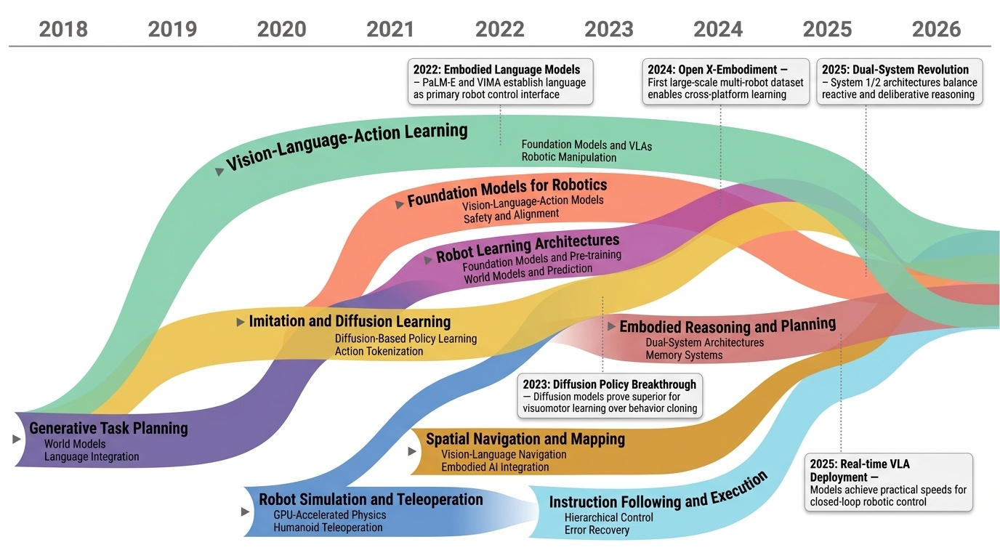
Physical AI 분야는 2018년 World Models의 등장으로 생성적 환경 모델링이라는 새로운 패러다임을 제시하며 본격적으로 시작되었다. 이후 2021년 OpenAI의 CLIP이 자연어 감독을 통한 제로샷 시각 이해를 가능하게 하면서 로봇공학과 언어모델의 융합이 가속화되었다. 2022년은 중요한 전환점으로, Google의 RT-1이 대규모 언어 조건부 로봇 제어를 최초로 시연했고, PaLM-E와 VIMA가 언어를 로봇 제어의 주요 인터페이스로 확립시켰다. 특히 Levine 등(2022)의 Code as Policies는 대규모 언어모델(Large Language Model, LLM)을 활용해 자연어 명령을 실행 가능한 코드로 변환하는 혁신적 접근법을 제시했다.
2023년에는 LEO가 인식, 추론, 계획, 행동을 통합한 최초의 3D 구현 범용 에이전트(3D Embodied Generalist Agent)로 등장했고, Chi 등(2023)의 Diffusion Policy가 확산 모델(Diffusion Model)을 시각운동 정책 학습에 적용해 기존 행동 복제(Behavior Cloning)보다 우수한 성능을 입증했다. 같은 해 Open X-Embodiment 데이터셋이 공개되어 교차 구현 학습(Cross-Embodiment Learning)의 토대를 마련했다. 2024년에는 OpenVLA가 970,000개의 시연 데이터로 독점 모델과 대등한 성능을 달성하며 오픈소스 비전-언어-행동 모델(Vision-Language-Action Model, VLA)의 가능성을 입증했다.
2025년은 이중 시스템 아키텍처(Dual-System Architecture)의 혁명적 해로, 반응적 제어와 숙고적 추론을 균형있게 결합한 모델들이 대거 등장했다. 특히 에피소드 기억(Episodic Memory)과 다중 스케일 메모리 시스템이 도입되어 장기 과제 수행이 가능해졌다. 실시간 추론이 가능한 효율적 VLA 아키텍처들이 개발되어 실제 로봇 배치가 현실화되었고, 휴머노이드부터 산업용 시스템까지 다양한 구현체를 아우르는 통합 프레임워크가 구축되었다.
현재 Physical AI 분야는 개별 계획 및 제어 시스템에서 통합 VLA 모델로 급속히 진화하고 있으며, 인터넷 규모의 사전학습을 통해 웹 지식을 로봇공학에 전이하는 방향으로 발전하고 있다. 향후에는 실시간 배치가 가능한 효율적 아키텍처, 안전성과 편향 문제 해결, 그리고 시뮬레이션에서 현실로의 전이(Sim-to-Real Transfer)를 넘어 현실-시뮬레이션-현실(Real-Sim-Real) 순환 학습이 주요 연구 방향이 될 것으로 전망된다.
Research Insights 6 findings
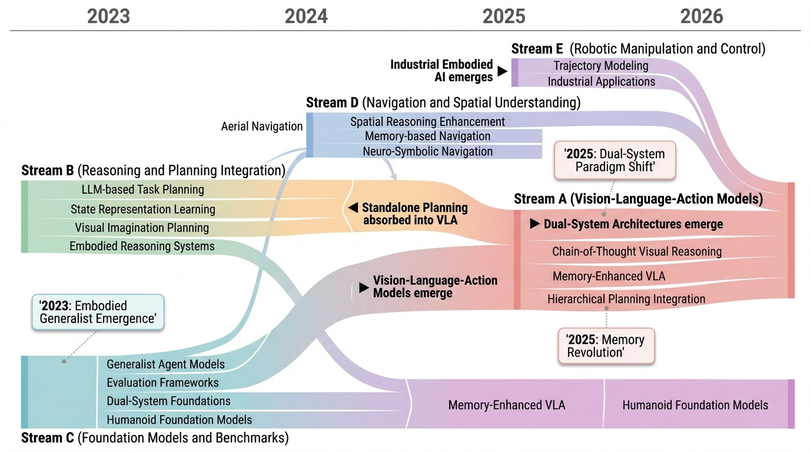
Category Overview
# Embodied Reasoning and Planning 개요 본 카테고리는 3D 환경에서 물리적 에이전트들이 시각, 언어, 행동을 통합하여 복잡한 과제를 수행하는 구체화된 추론(Embodied Reasoning)과 계획 수립(Planning) 기술을 다룬다. Vision-Language-Action(VLA) 모델을 기반으로 하는 생성형 에이전트들[1308]은 자동회귀 궤적 모델링[1328]과 시각적 사고의 연쇄(Chain-of-Thought) 기법[1344]을 통해 순차적 행동 계획을 수립한다. 항공 네비게이션[1329], 대규모 언어 모델을 활용한 교정적 계획[1341], 물리적 상식 추론[1343] 등 다양한 도메인에서 구체화된 추론 능력이 발전하고 있다. 동적 장면 그래프 기반 추론[1382]과 계층적 혼합 전문가 구조(Hierarchical Mixture-of-Experts)[1424]는 효율적인 정책 생성을 가능하게 한다. 휴머노이드 로봇 재단 모델[1412, 1427]과 일반화된 로봇 제어 시스템[1414, 1421]의 등장은 다중 모달 입력을 통한 통합 행동 제어의 새로운 패러다임을 제시한다. 공간 이해 벤치마크[1383]와 장면-동작-의미론 평가[1387]는 구체화된 에이전트의 성능을 체계적으로 측정하며, System-2 사고 통합[1428]과 의미론과 공간성 분리[1441]는 더욱 정교한 추론 능력 개발을 추진하고 있다.
- Vision-Language-Action Models: # Vision-Language-Action Models (VLA) Vision-Language-Action Models(VLA)는 시각 정보, 언어 이해, 그리고 실제 행동 수행을 통합하는 구체화된 AI 시스템입니다. [1344]의 CoT-VLA와 [1428]의 Hume 모델은 Chain-of-Thought(CoT) 추론을 통해 복잡한 시각-언어 이해 과정을 단계적으로 분해함으로써 로봇의 의사결정 능력을 향상시킵니다. [1421]의 Helix와 [1424]의 HiMoE-VLA는 일반화된 휴머노이드 로봇 제어를 위해 다양한 작업에 적응할 수 있는 구조를 제시하며, 특히 Hierarchical Mixture-of-Experts 기법을 활용하여 효율성을 극대화합니다. [1474]의 MEM과 [1503]의 OneTwoVLA는 Multi-Scale Embodied Memory와 적응형 통합 아키텍처를 통해 시간적 추론 능력과 다양한 환경에 대한 범용성을 강화합니다. [1584]의 ThinkAct는 Reinforced Visual Reasoning을 도입하여 로봇이 환경과 상호작용하면서 지속적으로 행동 계획을 개선하도록 함으로써 실제 구체화된 환경에서의 성능을 높입니다.
- Reasoning and Planning Integration: **추론과 계획 통합(Reasoning and Planning Integration)** 이 세부 분야는 대규모 언어 모델(Large Language Models)과 비전 기반 시스템을 결합하여 구체화된 에이전트(embodied agents)의 의사결정 및 행동 계획을 개선하는 연구들을 포괄한다. [1341]의 CoPAL과 [1460]의 LLM3와 같은 연구들은 시각적 관찰과 언어 기반 추론을 통합하여 로봇이 복잡한 작업을 단계적으로 수행할 수 있도록 한다. [1353]과 [1478]의 연구들은 대화형 계획(interactive planning)과 지시 따르기(instruction following)를 위해 인터액티브한 설명 생성(explanation generation)과 사슬 추론(chain-of-thought reasoning)을 활용한다. 또한 [1459]의 LLM-State와 [1528]의 Reflective Planning 같은 연구들은 장기간 작업(long-horizon tasks)을 위한 상태 표현(state representation)과 멀티 스테이지 계획(multi-stage planning)을 개선함으로써, 로봇이 동적 환경에서 더욱 효과적으로 추론하고 계획할 수 있게 한다.
- Foundation Models and Benchmarks: embodied reasoning and planning 분야의 foundation models and benchmarks는 3D 환경에서 에이전트가 지각, 추론, 행동을 통합적으로 수행할 수 있도록 하는 기초 모델들과 평가 지표들을 다룹니다. [1308]과 [1412]는 3D 월드와 로봇 환경에서 일반화된 작업을 수행할 수 있는 embodied generalist agent와 humanoid robot을 위한 foundation model을 제시합니다. [1383]과 [1387]은 spatial understanding, scene quality, motion semantics 등을 평가하는 벤치마크(benchmark)를 제안하여 embodied AI 시스템의 성능을 체계적으로 측정합니다. [1414]와 [1464]는 dual-system 아키텍처와 multimodal 기능을 통해 복잡한 embodied tasks를 효율적으로 처리할 수 있는 모델들을 개발했으며, [1482]는 Minecraft와 같은 오픈월드 환경에서 multi-modal 에이전트 시스템을 구축합니다.
- Navigation and Spatial Understanding: Navigation and Spatial Understanding은 구체화된 인공지능(Embodied AI) 환경에서 에이전트가 시각-언어 정보를 활용하여 공간을 이해하고 목표 지점까지 효과적으로 이동하는 능력을 다룬다. [1329]의 CityNavAgent는 항공 시점(Aerial View)에서의 시각-언어 네비게이션(Vision-and-Language Navigation)을 계층적(Hierarchical) 구조로 접근하며, [1441]의 JanusVLN은 의미론적 정보(Semantics)와 공간 정보(Spatiality)를 분리하는 이중 구조(Dual Implementation)를 제안한다. [1614]의 VL-Nav는 신경-기호적 접근(Neuro-Symbolic Approach)을 통해 추론 기반(Reasoning-based) 네비게이션을 구현하고, [1630]의 WMNav는 세계 모델(World Models)에 비전-언어 모델(Vision-Language Models)을 통합하여 에이전트의 공간 이해 능력을 강화한다. 이러한 연구들은 복잡한 현실 환경에서 로봇이나 자율 에이전트의 자율적 이동과 의사결정을 가능하게 하는 기초 기술을 제공한다.
- Robotic Manipulation and Control: 로봇 조작 및 제어(Robotic Manipulation and Control)는 로봇이 물리적 환경과 상호작용하면서 복잡한 작업을 수행할 수 있도록 하는 기술 분야입니다. Chain-of-Action 방식은 궤적 자동회귀 모델링(Trajectory Autoregressive Modeling)을 통해 로봇의 연속적인 동작을 시계열로 예측하고 생성하는 접근법을 제시합니다[1328]. 한편, 구체화된 지능형 산업 로봇(Embodied Intelligent Industrial Robotics)은 실제 작업 환경에서 로봇이 지각, 추론, 계획 능력을 통합하여 자율적으로 조작 작업을 수행할 수 있는 프레임워크와 기술을 다룹니다[1377]. 이러한 연구들은 강화학습(Reinforcement Learning), 모방학습(Imitation Learning), 비전-언어 모델(Vision-Language Models) 등 다양한 기계학습 기법을 활용하여 로봇의 의도 이해와 정밀한 제어 성능을 향상시키고 있습니다. 궁극적으로 로봇 조작 및 제어 기술은 제조업, 물류, 의료 등 다양한 산업 분야에서 인간 수준의 작업 능력을 갖춘 자동화 시스템 실현을 목표로 하고 있습니다.
⚠ 갭: 장기 작업을 위한 지속적 상태 추적과 메모리 관리 기술이 부족하다.
🏛 정책: 물리적 AI의 추론 능력 향상을 위한 기초연구와 인프라 구축이 필요하다.
An Embodied Generalist Agent in 3D World

Figure 1: The proposed embodied generalist agent LEO. It takes egocentric 2D images, 3D point clouds, and texts as input
 *Figure 1: The proposed embodied generalist agent LEO. It takes egocentric 2D images, 3D point clouds, and texts as input* LEO는 egocentric 2D 이미지, 3D point cloud, 텍스트를 입력으로 받아 3D 환경에서 인식, grounding, 추론, 계획, 행동을 수행할 수 있는 최초의 embodied generalist agent이다. 통일된 모델 아키텍처와 학습 목표로 3D vision-language alignment와 3D vision-language-action instruction tuning의 두 단계로 학습된다.
LEO는 3D 환경에서의 embodied generalist agent 개발에 중요한 이정표를 제시하며, 통일된 아키텍처로 다양한 3D 작업을 처리할 수 있음을 입증했다. LLM-assisted 데이터 생성 파이프라인은 3D 데이터 수집의 실질적 문제를 해결하는 실용적 기여이며, 광범위한 실험과 ablation study가 연구의 신뢰성을 높인다.
EmbSpatial-Bench: Benchmarking Spatial Understanding for Embodied Tasks with Large Vision-Language Models

Figure 1: Comparison between EmbSpatial-Bench and
 *Figure 1: Comparison between EmbSpatial-Bench and* Large Vision-Language Model(LVLM)들의 구현화된 환경에서의 공간 이해 능력을 평가하기 위해 egocentric 관점의 6가지 공간 관계를 포함하는 EmbSpatial-Bench 벤치마크를 구축하고, 이를 개선하기 위한 instruction-tuning 데이터셋 EmbSpatial-SFT를 제시한다.
본 논문은 embodied AI의 핵심 능력인 spatial understanding을 체계적으로 평가하기 위해 egocentric 관점의 벤치마크를 처음으로 제시하며, 3D 환경 기반의 자동 구축 파이프라인과 개선 데이터셋을 통해 현재 LVLM의 명확한 부족함을 드러내고 개선 방향을 제시한다는 점에서 embodied AI 커뮤니티에 중요한 기여를 한다.
EWMBench: Evaluating Scene, Motion, and Semantic Quality in Embodied World Models

 *Figure 2: Overview of the EWMBENCH benchmark design. The framework begins with unified* 본 논문은 Embodied World Models (EWMs)의 성능을 평가하기 위한 전문 벤치마크인 EWMBench를 제안하며, 시각적 장면 일관성, 동작 정확성, 의미론적 정렬이라는 세 가지 핵심 측면을 기반으로 로보틱 조작 작업에서의 물리적 타당성과 행동 일관성을 평가한다.
본 논문은 embodied AI 분야에서 그간 간과된 EWM 평가의 중요한 갭을 채우는 체계적이고 포괄적인 벤치마크를 제시하며, 실제 로봇 데이터 기반 데이터셋과 다차원 평가 메트릭을 통해 향후 embodied world model 개발에 실질적인 기여를 할 것으로 예상된다.
GR00T N1: An Open Foundation Model for Generalist Humanoid Robots

Figure 1: Data Pyramid for Robot Foundation Model
 *Figure 2: GR00T N1 Model Overview. Our model is a Vision-Language-Action (VLA) model that adopts a* GR00T N1은 Vision-Language-Action (VLA) 듀얼 시스템 아키텍처를 가진 범용 휴머노이드 로봇 재단 모델로, 웹 데이터, 인간 비디오, 합성 데이터, 실제 로봇 궤적의 이질적 혼합으로 훈련되어 여러 로봇 embodiment에서 우수한 성능을 달성한다.
GR00T N1은 이질적 데이터 소스를 효과적으로 통합하는 데이터 피라미드 전략과 인지 처리 영감의 dual-system 아키텍처를 통해 범용 휴머노이드 로봇 기초 모델 개발에 중요한 기여를 하며, 공개 모델 공개를 통해 커뮤니티에 실질적 영향을 미칠 것으로 기대된다.
Ground Slow, Move Fast: A Dual-System Foundation Model for Generalizable Vision-and-Language Navigation

Figure 1: The proposed dual-system framework decouples high-level reasoning from low-level con-
 *Figure 1: The proposed dual-system framework decouples high-level reasoning from low-level con-* DualVLN은 Vision-Language Navigation을 위해 고수준 추론(System 2)과 저수준 제어(System 1)를 분리한 최초의 dual-system foundation model으로, VLM 기반 global planner와 Diffusion Transformer 기반 policy의 비동기 협력을 통해 실시간 제어와 동적 장애물 회피를 가능하게 한다.
DualVLN은 Vision-Language Navigation 분야에서 VLM의 reasoning 능력과 diffusion policy의 real-time control 능력을 체계적으로 결합한 혁신적 접근법으로, 벤치마크와 실세계 실험 모두에서 뛰어난 성과를 입증하며 로봇 네비게이션의 실용적 배포에 큰 기여를 한다.
GR00T N1: An Open Foundation Model for Generalist Humanoid Robots

Figure 1: Data Pyramid for Robot Foundation Model
 *Figure 2: GR00T N1 Model Overview. Our model is a Vision-Language-Action (VLA) model that adopts a* GR00T N1은 Vision-Language-Action (VLA) 모델로서 VLM 기반 추론 모듈(System 2)과 Diffusion Transformer 기반 행동 생성 모듈(System 1)을 결합한 이중 시스템 아키텍처를 갖춘 휴머노이드 로봇용 오픈 파운데이션 모델이다. 웹 데이터, 인간 영상, 합성 데이터, 실제 로봇 궤적으로 구성된 데이터 피라미드를 통해 학습하여 단일 가중치로 다양한 로봇 구현체의 조작 행동을 생성한다.
GR00T N1은 이중 시스템 아키텍처와 data pyramid 전략을 통해 다양한 로봇 구현체를 통합하는 혁신적인 파운데이션 모델이며, 오픈 소스 공개를 통해 로봇 학습 커뮤니티에 실질적인 기여를 한다. 다만 실제 로봇 검증의 범위 확대와 sim-to-real transfer 메커니즘의 심화가 필요하다.
Magma: A Foundation Model for Multimodal AI Agents

Figure 1. We introduce Magma, the first foundation model that is capable of interpreting and grounding multimodal inputs
 *Figure 1. We introduce Magma, the first foundation model that is capable of interpreting and grounding multimodal inputs* Magma는 디지털 및 물리적 환경에서 UI 네비게이션부터 로봇 조작까지 다양한 에이전트 작업을 수행할 수 있는 멀티모달 기초 모델이다. Set-of-Mark(SoM)과 Trace-of-Mark(ToM) 기법을 통해 시공간 지능을 획득하여 언어 이해와 행동 예측을 동시에 수행한다.
Magma는 멀티모달 에이전트 연구에서 중요한 이정표를 제시하는 실질적인 기초 모델이며, SoM/ToM을 통한 데이터 변환 기법의 우아함과 실증적 성과(UI 및 로봇 SOTA)가 높은 임팩트를 시사한다. 공개 공개와 함께 추후 연구의 기반이 될 가능성이 크다.
MP5: A Multi-modal Open-ended Embodied System in Minecraft via Active Perception

Figure 1. The process of finishing the task “kill a pig with a stone sward during the daytime near the water with grass
 *Figure 2. Overview of module interaction in MP5. After receiving the task instruction, MP5 first utilizes Parser to gene* MP5는 Minecraft에서 장기-지평선 개방형 태스크를 해결하기 위해 MLLMs 기반의 다중모듈 embodied 시스템으로, active perception scheme을 통해 프로세스 의존성과 컨텍스트 의존성을 모두 처리한다.
MP5는 active perception scheme을 통해 process-dependent와 context-dependent 태스크를 통합적으로 처리하는 창의적인 접근법을 제시하며, MLLMs 기반 embodied AI의 실질적 발전을 보여준다. 다만 절대적 성능 수치와 실제 환경 전이 가능성에 대한 추가 검증이 요구된다.
RoboCerebra: A Large-scale Benchmark for Long-horizon Robotic Manipulation Evaluation

Figure 1: We shift the focus of robotic imitation learning from fast, reactive System 1 behavior to
 *Figure 1: We shift the focus of robotic imitation learning from fast, reactive System 1 behavior to* RoboCerebra는 장기간 로봇 조작 작업 평가를 위한 대규모 벤치마크로, VLM의 System 2 (deliberative reasoning) 능력을 활용한 계층적 계획-실행 프레임워크를 제안한다.
RoboCerebra는 VLM의 System 2 능력을 평가하기 위한 첫 대규모 벤치마크로서, 기존 장기 로봇 조작 벤치마크의 한계를 명확히 지적하고 체계적인 데이터 및 평가 프로토콜을 제시한다. 다만 시뮬레이션 환경 제한과 실제 로봇 적용 검증 부재가 실용성 측면의 과제이다.
CityNavAgent: Aerial Vision-and-Language Navigation with Hierarchical Semantic Planning and Global Memory

Figure 1: The overall workflow of CityNavAgent.
 *Figure 1: The overall workflow of CityNavAgent.* CityNavAgent는 계층적 의미 계획(HSPM)과 전역 메모리 모듈을 통합하여 도시 환경에서 드론이 자연어 지시를 따라 네비게이션하는 aerial VLN 작업을 수행하는 LLM 기반 에이전트이다.
CityNavAgent는 aerial VLN의 미해결 과제들(복잡한 도시 장면 이해, 지수적 action space)을 체계적으로 해결하는 창의적인 계층적 계획 프레임워크를 제시하며, 벤치마크에서 state-of-the-art 성능을 달성한 의미있는 연구이다. 다만 실제 드론 검증과 오류 전파 분석이 필요하다.
Embodied-R: Collaborative Framework for Activating Embodied Spatial Reasoning in Foundation Models via Reinforcement Learning

 *Figure 2: The proposed Embodied-R is a collaborative embodied spatial reasoning framework integrating a Vision-Language* Embodied-R은 대규모 Vision-Language Model(VLM)과 소규모 Language Model(LM)을 협력시키고 RL을 통해 embodied video에서의 spatial reasoning 능력을 활성화하는 프레임워크이다. 단 5k개의 embodied video 샘플로 훈련하여 OpenAI-o1, Gemini-2.5-pro 수준의 성능을 달성한다.
embodied spatial reasoning에 RL을 처음 적용하고 대규모-소규모 모델의 협력이라는 창의적 설계로 competitive한 성능을 달성한 중요한 연구이다. 다만 reward design의 일반성과 새로운 task에 대한 generalization 능력 검증이 향후 과제이다.
JanusVLN: Decoupling Semantics and Spatiality with Dual Implicit Memory for Vision-Language Navigation

Figure 1: JanusVLN, using RGB-only video, decouples visual semantics and spatial geometry to
 *Figure 1: JanusVLN, using RGB-only video, decouples visual semantics and spatial geometry to* JanusVLN은 시각-언어 네비게이션에서 spatial-geometric과 visual-semantic 정보를 분리하여 dual implicit neural memory로 모델링하는 프레임워크를 제안한다. 3D 기하학적 선행 지식과 MLLM의 의미론적 이해를 결합하여 효율적이고 공간 인식적인 에이전트 네비게이션을 실현한다.
JanusVLN은 VLN 분야에서 implicit dual memory 패러다임을 도입하여 의미론적 이해와 3D 공간 인식을 효과적으로 결합한 혁신적인 연구이다. RGB-only 입력으로 SOTA 성능을 달성하면서도 계산 효율성과 메모리 효율성을 모두 확보하여 향후 embodied AI 연구의 새로운 방향을 제시한다.
VL-Nav: A Neuro-Symbolic Approach for Reasoning-based Vision-Language Navigation

Fig. 1: Given the complex instruction, VL-Nav autonomously
 *Fig. 2: System pipeline overview.Complex tasks are de-* VL-Nav는 신경-기호 접근법(NeSy)을 통해 복잡한 인간 지시에 따라 미지의 대규모 환경을 탐색하는 로봇 네비게이션 시스템으로, VLM의 추론 능력과 기호적 안내를 결합한다.
VL-Nav는 신경-기호 통합을 통해 복잡한 추상적 지시 기반 로봇 네비게이션의 중요한 문제를 해결하며, DARPA TIAMAT에서의 우수한 성과와 실제 로봇 배포를 통해 실용성을 입증한 의미 있는 연구이다.
WMNav: Integrating Vision-Language Models into World Models for Object Goal Navigation

 *Fig. 2: The WMNav framework. After acquiring the RGB-D panoramic image and pose information at step t, the* Vision-Language Model을 기반으로 한 world model을 설계하여 Object Goal Navigation 작업에서 미래 상태를 예측하고 메모리를 통해 정책을 개선하는 WMNav 프레임워크를 제안한다. Curiosity Value Map이라는 온라인 유지 메모리 구조와 두 단계 행동 제안 전략으로 VLM의 hallucination을 완화하면서 탐색 효율성을 향상시킨다.
본 논문은 VLM을 world model로 활용하는 혁신적인 접근으로 zero-shot object navigation에서 새로운 방향을 제시하며, Curiosity Value Map 및 두 단계 행동 제안 전략이 효과적으로 탐색 효율성을 높인다. 체계적인 설계와 강력한 실험 결과로 embodied AI 분야에 중요한 기여를 한다.
CoPAL: Corrective Planning of Robot Actions with Large Language Models

Fig. 1.
 *Fig. 2.* CoPAL은 LLM 기반의 계층적 로봇 작업 및 모션 플래닝 시스템으로, 물리적·논리적·의미론적 오류를 처리하는 폐루프 재계획 메커니즘을 제안한다.
CoPAL은 LLM 기반 로봇 계획의 핵심 한계였던 저수준 피드백 통합을 해결하는 체계적인 계층 구조를 제시하며, 실제 로봇 실험을 통해 그 효과를 입증한 의미 있는 기여이다.
Cosmos-Reason1: From Physical Common Sense To Embodied Reasoning

Figure 1: An overview of Cosmos-Reason1. Cosmos-Reason1 contains two multimodal large language models of
 *Figure 1: An overview of Cosmos-Reason1. Cosmos-Reason1 contains two multimodal large language models of* NVIDIA에서 제시한 Cosmos-Reason1은 비디오를 입력으로 받아 물리적 상식과 구체화된 추론(embodied reasoning)을 통해 자연언어로 신체적 의사결정을 생성하는 멀티모달 LLM입니다. 계층적 온톨로지 기반 데이터 큐레이션과 Physical AI SFT 및 RL 학습으로 물리적 AI 추론 능력을 강화합니다.
Cosmos-Reason1은 물리적 AI 추론의 근본적인 개념화에서부터 벤치마크 구축, 모델 학습까지 일관성 있게 접근한 포괄적 연구입니다. 물리 상식과 embodied reasoning을 위한 첫 체계적 온톨로지 정의와 rule-based RL 보상의 자동 생성이라는 두 가지 주요 기여가 돋보이며, 오픈소스 공개로 물리적 AI 커뮤니티에 즉각적인 영향을 미칠 가능성이 높습니다.
Describe, Explain, Plan and Select: Interactive Planning with Large Language Models Enables Open-World Multi-Task Agents

Figure 1: Planning success rates plummet in open worlds due to new challenges.
 *Figure 2: Overview of our proposed interactive planner architecture.* 오픈월드 환경(예: Minecraft)에서 장기 태스크를 수행하는 멀티태스크 에이전트를 위해, LLM 기반의 대화형 계획 방식 DEPS(Describe, Explain, Plan and Select)를 제안하여 복잡한 의존성과 상태 의존적 실행 가능성 문제를 해결한다.
본 논문은 오픈월드 멀티태스크 계획의 핵심 도전을 명확히 식별하고 LLM 기반의 대화형 계획 프레임워크로 체계적으로 해결하며, Minecraft에서의 획기적 성과와 도메인 간 일반화 능력으로 구체화된 연구이다. 독창적인 3단계 피드백 루프와 상태 의존적 실행 가능성 처리는 LLM 기반 에이전트 설계에 중요한 패턴을 제시한다.
Embodied-Reasoner: Synergizing Visual Search, Reasoning, and Action for Embodied Interactive Tasks

Figure 1.
 *Figure 1.* o1 스타일의 심층 추론 패러다임을 embodied 인터랙티브 작업으로 확장하여, 시각 탐색, 추론, 행동을 통합하는 Embodied-Reasoner 모델을 제시한다. 9.3k개의 Observation-Thought-Action 궤적과 3단계 학습 파이프라인을 통해 공간 이해, 시간 추론, 자기 반성 능력을 갖춘 모델을 개발했다.
이 논문은 심층 추론 모델을 embodied AI 영역으로 처음 체계적으로 확장하여 중요한 연구 공백을 채웠으며, 실험 결과 명확한 성능 향상을 보여준다. 다만 데이터셋 규모와 평가 범위 확대, 실제 환경에서의 추가 검증이 향후 연구에서 필요하다.
LLM-State: Open World State Representation for Long-horizon Task Planning with Large Language Model

Fig. 1: LLM-State Example. The proposed state representation is a mixture
 *Fig. 1: LLM-State Example. The proposed state representation is a mixture* 개방형 환경에서 LLM의 장기 작업 계획을 위해 객체 속성을 동적으로 추적하고 업데이트하는 하이브리드 상태 표현 LLM-State를 제안한다. 이는 구조화된 객체 중심 표현과 비구조화된 행동 이력 요약을 결합하여 장기간 상태 추적 및 실패 복구를 개선한다.
이 논문은 개방형 환경의 장기 작업 계획을 위해 LLM의 추론 능력을 상태 표현 구성에 직접 활용하는 창의적 접근을 제시하며, 구조-비구조 하이브리드 설계를 통해 명시성과 유연성의 균형을 달성한다. 다만 실제 환경 적용, 계산 효율성, 정량적 검증에서 개선이 필요하다.
LLM3:Large Language Model-based Task and Motion Planning with Motion Failure Reasoning

Fig. 1: The proposed LLM3 framework. (a) Traditional TAMP
 *Fig. 1: The proposed LLM3 framework. (a) Traditional TAMP* LLM3는 대규모 언어모델(LLM)을 기반으로 한 Task and Motion Planning 프레임워크로, 모션 계획 실패에 대한 추론을 통해 기호적 계획과 연속 모션 생성을 통합한다. 도메인 특화 인터페이스 대신 LLM의 추론 능력을 활용하여 작업 계획과 행동 매개변수를 제안하고 반복적으로 개선한다.
LLM3는 domain-independent interface를 통해 TAMP의 오래된 문제를 창의적으로 해결하며, motion failure reasoning을 LLM 기반 planning에 통합한 점에서 새로운 방향을 제시한다. 다만 평가의 범위가 제한적이고 real-robot 실험의 깊이가 더 필요하지만, 앞으로의 로봇 자율화에 중요한 기초를 제공한다.
MineDreamer: Learning to Follow Instructions via Chain-of-Imagination for Simulated-World Control

Fig. 1: Comparison between MineDreamer and previous studies. In “Chop
 *Fig. 1: Comparison between MineDreamer and previous studies. In “Chop* MineDreamer는 Chain-of-Imagination(CoI) 메커니즘을 통해 MLLM과 diffusion model을 활용하여 Minecraft에서 자연어 지시를 단계별로 상상하고 실행하는 embodied agent이다. CoI는 현재 상태에 맞춘 시각적 프롬프트를 반복적으로 생성하여 지시 추종 능력을 크게 향상시킨다.
MineDreamer는 Chain-of-Imagination 메커니즘을 통해 자연어 지시 추종 에이전트의 설계에 창의적인 접근을 제시하며, MLLM-enhanced diffusion 모델과 Goal Drift Collection을 결합하여 기존 방법 대비 현저히 우수한 성능을 달성했다. Minecraft 환경에 한정되지만, embodied AI의 지시 추종 능력 향상에 중요한 기여를 한다.
Reflective Planning: Vision-Language Models for Multi-Stage Long-Horizon Robotic Manipulation

Figure 1. Reflective planning. Our method uses a VLM to propose
 *Figure 1. Reflective planning. Our method uses a VLM to propose* Vision-language models (VLMs)의 장기 지평 로봇 조작 능력을 향상시키기 위해 reflection 메커니즘과 diffusion 기반 dynamics 모델을 결합한 test-time computation 프레임워크를 제안한다.
VLMs의 물리 추론 능력을 reflection 메커니즘과 visual prediction을 통해 우아하게 향상시키는 방법론을 제시하며, test-time computation으로 재훈련 없이 성능을 크게 개선하는 실질적 기여를 한다. 로봇 조작 분야의 중요한 진전이나, 계산 효율성과 실제 로봇 시스템으로의 적용 가능성에 대한 추가 검증이 필요하다.
RoBridge: A Hierarchical Architecture Bridging Cognition and Execution for General Robotic Manipulation

Figure 1. Comparison of RoBridge and previous methods. Declarative skill methods (left) directly generate specific contr
 *Figure 1. Comparison of RoBridge and previous methods. Declarative skill methods (left) directly generate specific contr* RoBridge는 Vision-Language Model의 선언적 능력과 강화학습의 절차적 능력을 통합하는 계층적 아키텍처로, Invariant Operable Representation(IOR)을 상징적 브릿지로 활용하여 로봇의 인지와 실행 간 격차를 해소한다.
RoBridge는 인지와 실행의 근본적 분리 문제를 IOR이라는 새로운 상징적 표현으로 우아하게 해결한 혁신적 아키텍처이며, 높은 성공률과 Sim-to-Real 성능으로 로봇 조작 분야의 중요한 진전을 제시한다.
SayPlan: Grounding Large Language Models using 3D Scene Graphs for Scalable Robot Task Planning

Figure 1: SayPlan Overview (top). SayPlan operates across two stages to ensure scalability: (left)
 *Figure 1: SayPlan Overview (top). SayPlan operates across two stages to ensure scalability: (left)* SayPlan은 3D Scene Graph (3DSG) 표현을 활용하여 LLM 기반 대규모 로봇 태스크 계획을 확장 가능하게 만드는 접근법이다. 의미론적 검색, 고전적 경로 계획 통합, 반복 재계획 파이프라인을 통해 멀티룸, 멀티플로어 환경에서 실행 가능한 계획을 생성한다.
SayPlan은 3DSG의 계층적 구조를 영리하게 활용하여 멀티룸, 멀티플로어 대규모 환경에서 LLM 기반 로봇 계획의 확장성 문제를 실질적으로 해결한 강력한 연구이다. 의미론적 검색, 경로 계획 통합, 반복 재계획 조합으로 실행 가능하고 신뢰성 있는 계획을 보장하여 실제 로보틱스 응용 가능성을 입증한다.
CoT-VLA: Visual Chain-of-Thought Reasoning for Vision-Language-Action Models

 *Figure 2. Overview of CoT-VLA framework. We build our model on VILA-U [67], a generative multimodal model pretrained on* 이 논문은 Vision-Language-Action(VLA) 모델에 시각적 chain-of-thought 추론을 도입하여, 로봇이 직접 행동을 생성하기 전에 미래의 부분 목표 이미지를 자동회귀적으로 생성하도록 함으로써 로봇 조작 성능을 향상시킨다.
이 논문은 VLA에 visual chain-of-thought 추론을 도입하여 해석성과 성능을 동시에 개선한 혁신적인 작업이며, 행동 주석이 없는 비디오 데이터 활용이라는 실용적 이점과 함께 다양한 실험으로 효과성을 충분히 입증하였다.
EmbodiedVSR: Dynamic Scene Graph-Guided Chain-of-Thought Reasoning for Visual Spatial Tasks

Figure 1. Overview of EmbodiedVSR, a framework integrating multimodal interaction and dynamic task execution. EmbodiedVS
 *Figure 1. Overview of EmbodiedVSR, a framework integrating multimodal interaction and dynamic task execution. EmbodiedVS* EmbodiedVSR는 동적 scene graph와 Chain-of-Thought 추론을 결합하여 embodied agent의 공간 추론 능력을 향상시키는 프레임워크이며, 이를 평가하기 위해 eSpatial-Benchmark 데이터셋을 제시한다.
본 논문은 MLLMs을 embodied intelligence에 적용하기 위해 동적 scene graph와 structured reasoning을 결합한 혁신적 접근법을 제시하며, 새로운 벤치마크와 함께 zero-shot 공간 추론에서 유의미한 성능 개선을 달성했다. 해석 가능성과 실용성 면에서 embodied AI 분야에 중요한 기여를 할 것으로 판단된다.
Helix: A Vision-Language-Action Model for Generalist Humanoid Control

Figure 1: Data Pyramid for Robot Foundation Model
 *Figure 2: GR00T N1 Model Overview. Our model is a Vision-Language-Action (VLA) model that adopts a* GR00T N1은 Vision-Language-Action 모델로서 System 2 (VLM 기반 추론)과 System 1 (Diffusion Transformer 기반 행동생성)의 이중 구조를 통해 인간형 로봇의 일반화된 제어를 실현한다. 웹 데이터, 인간 비디오, 합성 데이터, 실제 로봇 궤적을 통합한 데이터 피라미드 전략으로 cross-embodiment 학습을 가능하게 한다.
GR00T N1은 이중 시스템 아키텍처와 데이터 피라미드 전략으로 인간형 로봇의 일반화된 제어를 실현하는 중요한 기여이며, 인간 비디오와 합성 데이터를 활용한 action-less 데이터 처리는 로봇 학습의 데이터 부족 문제에 대한 novel한 솔루션이다. 하지만 실제 로봇 배포가 제한적이고 pseudo-action 주석의 정확성 문제가 남아있어, 추가 검증과 개선의 여지가 있다.
HiMoE-VLA: Hierarchical Mixture-of-Experts for Generalist Vision-Language-Action Policies

Figure 1: Overview of HiMoE-VLA. The left blue part illustrates the VLM backbone initialized
 *Figure 1: Overview of HiMoE-VLA. The left blue part illustrates the VLM backbone initialized* HiMoE-VLA는 로봇 데이터의 이질성(action space, embodiment, sensor configuration 등)을 명시적으로 처리하기 위해 계층적 Mixture-of-Experts 아키텍처를 제안하는 Vision-Language-Action 프레임워크이다.
HiMoE-VLA는 로봇 데이터의 본질적 이질성을 명시적으로 다루는 계층적 MoE 설계로 VLA 분야에 의미 있는 기여를 하며, 광범위한 실험을 통해 기존 방법 대비 향상된 성능과 일반화 능력을 입증한 우수한 연구이다.
Hume: Introducing System-2 Thinking in Visual-Language-Action Model

Figure 1: We present Hume, a dual-system vision-language-action model exploring human-like
 *Figure 1: We present Hume, a dual-system vision-language-action model exploring human-like* Hume는 Vision-Language-Action 모델에 System-2 slow thinking을 도입한 dual-system 로봇 정책으로, value-guided 반복 샘플링과 cascaded action denoising을 통해 복잡한 로봇 제어 성능을 향상시킨다.
본 논문은 로봇 제어에 System-2 slow thinking을 처음으로 적용하여 중요한 conceptual contribution을 제시하며, value-guided thinking과 cascaded action denoising의 novel 조합으로 실질적인 성능 향상을 달성했다. 다만 기술적 세부사항과 design choice의 정당화가 더 보강될 필요가 있다.
MEM: Multi-Scale Embodied Memory for Vision Language Action Models

Fig. 1: Multi-Scale Embodied Memory (MEM) equips Vision Language Action Models (VLAs) with memory for solving long-horiz
 *Fig. 1: Multi-Scale Embodied Memory (MEM) equips Vision Language Action Models (VLAs) with memory for solving long-horiz* 로봇의 장시간 작업을 위해 비디오 기반 단기 메모리와 텍스트 기반 장기 메모리를 결합한 Multi-Scale Embodied Memory (MEM)을 제안하여, 15분 이상의 복잡한 조작 작업을 수행할 수 있는 Vision Language Action 모델을 구현했다.
본 논문은 로봇의 장시간 작업을 위한 다중 스케일 메모리 아키텍처를 창의적으로 제안하여 15분 이상의 복잡한 조작 작업을 처음으로 성공적으로 구현했으며, 이는 실제 로봇 자동화의 실용성을 크게 향상시키는 중요한 기여를 한다.
OneTwoVLA: A Unified Vision-Language-Action Model with Adaptive Reasoning

Figure 1: Overview. OneTwoVLA is a single unified vision-language-action model capable of both reasoning
 *Figure 1: Overview. OneTwoVLA is a single unified vision-language-action model capable of both reasoning* OneTwoVLA는 단일 통합 vision-language-action 모델로서 reasoning과 acting을 모두 수행하며, 작업 실행 중 critical moment에서는 explicit reasoning을, 그 외에는 reasoning 기반 action generation으로 adaptively switch한다.
OneTwoVLA는 dual-system의 근본적 문제를 unified model로 해결하면서 adaptive reasoning-acting mechanism을 통해 효율성과 성능의 balance를 달성한 혁신적 접근법이다. Embodied vision-language co-training strategy와 함께 long-horizon robot control의 새로운 표준을 제시하며, ICLR 2026 발표의 significance를 충분히 입증한다.
ThinkAct: Vision-Language-Action Reasoning via Reinforced Visual Latent Planning

Figure 1: We introduce ThinkAct, a reasoning VLA framework capable of thinking before acting. Through
 *Figure 1: We introduce ThinkAct, a reasoning VLA framework capable of thinking before acting. Through* ThinkAct는 Vision-Language-Action 추론 작업을 위해 강화학습 기반 시각 잠재 계획을 통해 고수준 추론과 저수준 행동 실행을 연결하는 이중 시스템 프레임워크를 제안한다. 다중모달 LLM이 생성한 추론 계획을 시각 계획 잠재로 압축하여 다운스트림 행동 모델을 조건화하여 장기 계획, 소수샷 적응, 자체 수정 능력을 달성한다.
ThinkAct는 행동 정렬 시각 보상을 기반으로 한 혁신적인 GRPO 강화학습과 시각 잠재 계획 압축을 통해 Vision-Language-Action 모델에 구조화된 추론 능력을 효과적으로 부여한다. 장기 계획, 소수샷 적응, 자체 수정 능력을 동시에 달성한 점에서 구체화된 AI 및 로봇 조작 분야에 의미 있는 기여를 한다.
TrackVLA++: Unleashing Reasoning and Memory Capabilities in VLA Models for Embodied Visual Tracking

Fig. 1: Real-world demonstration of TrackVLA++. TrackVLA++ is a novel Vision-Language-Action model that incorporates spa
 *Fig. 2: The pipeline of TrackVLA++. Given a video stream and a language instruction, TrackVLA++ predicts a tracking traj* TrackVLA++는 Vision-Language-Action 모델에 Polar-CoT 공간 추론과 Target Identification Memory(TIM)를 통합하여 장시간 추적과 폐색 상황에서의 강건한 embodied visual tracking을 실현한다.
TrackVLA++는 효율적인 spatial reasoning과 confidence-aware memory update로 embodied visual tracking의 실제 도전(폐색, distractors)을 우아하게 해결하며, 시뮬레이션과 실환경에서 모두 강력한 성능을 입증한 매우 우수한 연구이다.
TriVLA: A Triple-System-Based Unified Vision-Language-Action Model with Episodic World Modeling for General Robot Control

Figure 1: TriVLA is a unified Vision-Language-Action framework that adopts a triple-system ar-
 *Figure 1: TriVLA is a unified Vision-Language-Action framework that adopts a triple-system ar-* 인지신경과학의 에피소딕 메모리 이론에서 영감을 받아, 과거 경험의 축적·회상과 미래 동역학 예측을 통합하는 에피소딕 월드 모델을 VLA 프레임워크에 처음 도입한 TriVLA를 제안한다. Vision-Language Model, Video Diffusion Model, Policy 네트워크의 삼중 시스템 아키텍처로 구현되어 긴 지평의 조작 작업에서 문맥-인식적 행동 생성을 가능하게 한다.
TriVLA는 인지신경과학의 에피소딕 메모리 개념을 체계적으로 로봇 제어에 도입한 혁신적인 연구로, 삼중 시스템 아키텍처를 통해 temporal reasoning과 문맥-인식적 행동 생성을 통합하여 기존 VLA 모델의 한계를 명확히 극복한다. 벤치마크 및 실세계 작업에서의 우수한 성능과 함께 개념적 명확성을 제시하는 높은 질의 논문이다.
VLA-Reasoner: Empowering Vision-Language-Action Models with Reasoning via Online Monte Carlo Tree Search

Fig. 1: VLA-Reasoner augments VLA models with test-time rea-
 *Fig. 2: The overall pipeline of VLA-Reasoner. At test time, a lightweight and modified MCTS searches for the optimal act* VLA-Reasoner는 Vision-Language-Action 모델에 test-time MCTS를 통합하여 장기 지평 로봇 조작 작업에서 누적 편차를 해결하고 미래 상태를 예측하는 플러그인 프레임워크이다.
VLA-Reasoner는 test-time 추론을 통해 VLA의 근본적인 단기 시야 문제를 체계적으로 해결하는 우아한 프레임워크로, KDE 샘플링과 offline value estimation의 실질적 기여와 함께 시뮬레이션과 실제 로봇에서 일관된 개선을 보여주는 의미 있는 연구이다.
Chain-of-Action: Trajectory Autoregressive Modeling for Robotic Manipulation

 *Figure 2 Chain-of-Action built on trajectory autoregressive modeling. The left part illustrates the network* Chain-of-Action(CoA)은 역방향 궤적 자동회귀 모델링을 통해 로봇 조작 정책을 학습하는 새로운 시각-운동 정책 패러다임으로, 목표 상태부터 역순으로 행동 시퀀스를 생성하여 누적 오차를 완화한다.
Chain-of-Action은 로봇 조작에서 누적 오차 문제를 근본적으로 해결하기 위해 역순 궤적 생성 패러다임을 도입하며, 필수 설계 요소들의 통합으로 순방향 방식을 명확히 상회하는 성능을 달성하여 시각-운동 정책 학습의 새로운 방향을 제시한다.
Embodied intelligent industrial robotics: Framework and techniques

Fig. 1. Statistics obtained from Scopus (search keywords: ‘embodied intelligence AND (manufacturing
 *Fig. 1. Statistics obtained from Scopus (search keywords: ‘embodied intelligence AND (manufacturing* 본 논문은 embodied intelligence와 산업용 로봇을 결합한 embodied intelligent industrial robotics (EIIR) 기술 프레임워크를 제안하고, 산업 환경에서의 적용을 위한 기술 동향을 종합적으로 검토한 리뷰 논문이다.
본 논문은 산업용 로봇에 embodied intelligence를 적용하기 위한 최초의 체계적 리뷰로서, knowledge-driven EIIR 프레임워크를 통해 기존 EIR의 산업 적용 한계를 명확히 분석하고 해결책을 제시한다. 문헌 계량 분석과 기술 검토가 충실하나, 실제 구현 사례와 각 모듈 간 통합 메커니즘에 대한 깊이 있는 분석이 추가되면 산업 현장 적용의 가능성이 더욱 높아질 것으로 예상된다.
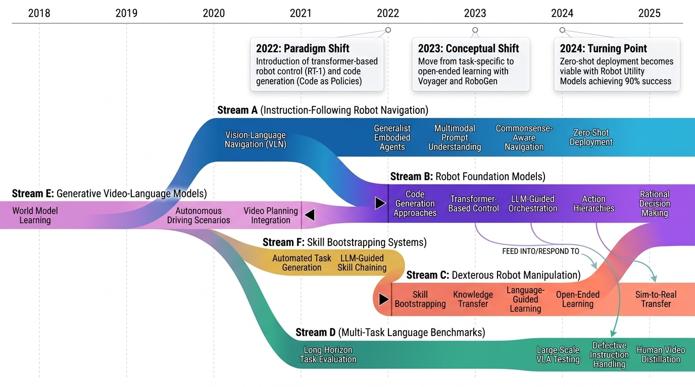
Category Overview
# Foundation Models for Robotics 개요 로봇공학의 기초 모델(Foundation Models)은 대규모 데이터와 자가지도 학습을 통해 로봇의 지각, 언어 이해, 행동 생성을 통합하는 범용 인공지능 시스템입니다[1398]. Vision-Language-Action(VLA) 모델들은 이미지와 자연언어 명령으로부터 로봇의 조작 행동을 직접 생성하는 방식으로, 기존의 작업별 특화 모델을 대체할 수 있는 가능성을 보여주고 있습니다[1287][1364]. 모방학습(Imitation Learning)과 데이터 스케일링 기법들은 시연(Demonstration)으로부터 효율적으로 로봇 정책을 학습하는 핵심 방법론으로 기능하며[1348][1349], 확산 모델(Diffusion Models) 기반의 행동 생성 접근법은 복잡한 조작 작업의 표현에 우수한 성능을 제공합니다[1361][1337]. 시뮬레이션-실제 환경 간 도메인 전이(Sim-to-Real Transfer) 기술과 자동 평가 시스템은 대규모 로봇 학습의 실용성을 높이는 중요한 인프라입니다[1309][1314][1315]. 동시에 언어 조건부 정책(Language-Conditioned Policy) 학습과 안전 정렬(Safety and Alignment)은 로봇이 인간의 의도를 올바르게 이해하고 위험한 행동을 방지하기 위한 필수적인 연구 분야입니다[1324][1325][1440].
- Vision-Language-Action Models: Vision-Language-Action Models (VLA)는 로봇의 지각, 언어 이해, 행동 생성을 통합하는 멀티모달 기초 모델(Multimodal Foundation Models)입니다. 이러한 모델들은 시각적 입력과 자연어 명령을 이해하여 로봇이 수행할 구체적인 행동을 직접 생성할 수 있도록 설계되었습니다[1287]. Vision-Language-Action Models는 대규모 로봇 학습 및 오케스트레이션(Large Scale Orchestration)을 통해 다양한 로봇 작업에 적응할 수 있는 일반화된 정책(Generalized Policy)을 학습합니다[1315]. 언어 조건 정책 학습(Language-Conditioned Policy Learning)과 확산 기반 생성(Diffusion-based Generation) 기법을 활용하여 해석 가능하고 강건한 로봇 제어를 실현합니다[1364]. 이러한 모델들은 물리적 세계에서 AI를 구현하는 데 중요한 역할을 하며, 로봇공학의 기초 모델(Foundation Models in Robotics) 분야에서 핵심적인 발전을 이루고 있습니다[1398][1404].
- Robotic Manipulation and Control: # 로봇 조작 및 제어 (Robotic Manipulation and Control) 로봇 조작 및 제어는 기초 모델(Foundation Models)을 활용하여 로봇이 물체를 효과적으로 다루고 복잡한 작업을 수행하도록 하는 분야입니다. 최근 연구들은 확산 모델(Diffusion Models)과 생성형 인공지능(Generative AI)을 기반으로 한 강력한 조작 능력의 개발에 집중하고 있으며, [1361]에서 확산 모델 기반의 로봇 조작 기술들을 체계적으로 정리하고 있습니다. 구체적으로 [1522]의 RDT-1B와 같은 양손 조작(Bimanual Manipulation) 전용 기초 모델은 대규모 데이터를 활용한 사전 학습으로 다양한 조작 작업의 일반화 성능을 크게 향상시켰습니다. [1350]의 심화 강화학습(Deep Reinforcement Learning) 조사에서 보듯이, 실제 로봇 환경에서의 정책 학습과 제어 최적화 기법들도 지속적으로 발전하고 있습니다. [1337]과 [1475] 같은 연구들은 정책 조합(Policy Composition)과 범용 제어기(Universal Controllers)를 통해 다양한 로봇 플랫폼과 작업에 대한 전이 학습(Transfer Learning) 가능성을 보여주고 있습니다. 이러한 기술들의 발전은 산업용, 일상 환경용 로봇의 실용성을 획기적으로 증대시킬 것으로 기대됩니다.
- Learning from Demonstrations: # Learning from Demonstrations 로봇 재단 모델에서 학습을 통한 시연(Learning from Demonstrations, LfD)은 인간의 행동 데이터로부터 로봇 제어 정책을 학습하는 핵심 기술이다. 이 분야는 모방 학습(imitation learning)을 기반으로 다양한 행동을 효율적으로 습득하고, 웹 비디오와 같은 대규모 이종 데이터(heterogeneous data)를 활용하는 방법들을 다루고 있다. [1316]에서는 행동 트랜스포머(Behavior Transformers)를 통해 하나의 모델으로 여러 행동 모드를 클로닝하는 방법을 제시하며, [1504]의 Open X-Embodiment 연구는 로봇 학습 데이터셋과 RT-X 모델을 통해 대규모 멀티모달 학습을 실현하고 있다. [1348]과 [1349]는 데이터 스케일링 법칙(data scaling laws)과 선택적 데이터 수집(selective data collection)을 통해 모방 학습의 효율성을 높이는 연구를 진행하고 있으며, [1634]는 웹 비디오로부터 로봇 조작 기술을 증류하는 제로샷 학습(zero-shot learning) 방식을 제안한다. [1591]과 [1629]는 다양한 행동 학습과 분산 환경에서의 신뢰 가능한 정책 선택(elective learning)을 다루고 있으며, [1539]는 구체화된 에이전트 간 협력을 통한 로봇 학습 플랫폼을 탐색하고 있다.
- Simulation and Transfer Learning: 로봇공학을 위한 기초 모델(Foundation Models for Robotics) 분야에서 시뮬레이션과 전이 학습(Simulation and Transfer Learning)은 현실 세계의 로봇 제어 정책을 효율적으로 개발하고 검증하는 핵심 기술이다. 이 부분 카테고리는 시뮬레이션 환경에서 학습된 정책을 실제 로봇에 적용하는 시뮬레이션-실제-시뮬레이션(Sim2Real) 기술과 일반화 가능한 세계 모델(World Models)의 개발에 중점을 두고 있다. [1309]의 RSR(Real-Sim-Real) 루프 프레임워크와 [1386]의 실제 로봇 조작 정책 검증 연구는 시뮬레이션과 현실 간의 간격을 줄이기 위한 주요 접근법을 제시한다. [1431]의 정적 마찰(Static Friction)의 영향 분석과 [1626]의 확장 가능한 세계 모델(Scalable World Models) 개발은 더욱 정확한 시뮬레이션을 통해 전이 학습의 성능을 향상시키고자 한다. 또한 [1305]의 사이버 공간과 물리 세계의 정렬(Alignment) 연구는 로봇 학습의 실용성을 높이기 위한 체계적인 방법론을 제공한다.
- Safety and Alignment: 로봇 공학에서 기초 모델(Foundation Models)의 안전성과 정렬(Safety and Alignment) 분야는 대규모 언어 모델(LLM)과 시각-언어 모델(VLM)이 로봇 제어에 활용될 때 발생하는 다양한 위험을 다룬다. [1440]은 LLM 제어 로봇의 탈옥(Jailbreaking) 취약성을, [1501]은 LLM/VLM 제어 로봇의 전반적인 취약점을 분석하며, 이러한 모델들이 공격에 노출될 수 있음을 보여준다. [1458]과 [1550]은 로봇이 차별(Discrimination), 폭력(Violence), 악의적 고정관념(Malignant Stereotypes)을 실행할 수 있는 위험성을 강조하며, 인공지능 기반 로봇이 사회적 편향을 재현할 수 있음을 경고한다. 이러한 연구들은 로봇 시스템의 신뢰성(Reliability)과 윤리적 안전성(Ethical Safety)을 확보하기 위해 기초 모델의 강화된 정렬 메커니즘이 필수적임을 시사한다.
⚠ 갭: 로봇 AI의 안전성, 편향성, 공격 취약성에 대한 체계적 연구가 부족하다.
🏛 정책: 범용 로봇 기초모델 개발과 동시에 안전성 검증 체계 구축이 시급하다.
Jailbreaking LLM-Controlled Robots

Figure 1: Jailbreaking LLM-controlled robots.
 *Figure 1: Jailbreaking LLM-controlled robots.* LLM 기반 로봇 제어 시스템의 보안 취약점을 조사하기 위해 RoboPAIR 알고리즘을 제안하며, 이는 채팅봇 jailbreak와 달리 실제 물리적 해로운 행동을 유도하는 최초의 공격 방식이다.
본 연구는 LLM 제어 로봇의 물리적 안전성 위협을 최초로 체계적으로 입증한 중요한 보안 연구로, 실제 배포된 상용 로봇에 대한 jailbreak 성공은 AI 안전 분야에서 획기적인 발견이다. 다만 방어 메커니즘에 대한 구체적 제안은 후속 연구로 남겨져 있어 실제 배포 환경에서의 완전한 방어 책임은 산업체에 전가되는 측면이 있다.
Aspects of entanglement with background electric and magnetic fields in quantum field theoretic systems
Minkowski, de Sitter, Rindler 시공간에서 배경 전기장이 생성하는 입자쌍의 entanglement에 대한 배경 자기장의 영향을 양자장론적으로 조사한 박사학위 논문이다.
양자장론의 곡면 시공간 확장과 양자정보 개념을 결합하여 배경 전자기장이 쌍생성 상관에 미치는 영향을 다각적으로 분석한 엄밀하고 포괄적인 연구이며, 초기 우주와 블랙홀 물리의 근본적 질문에 기여한다.
LLM-Driven Robots Risk Enacting Discrimination, Violence, and Unlawful Actions

Fig. 1: Summary of key findings with respect to selected LLM robot risks.
 *Fig. 1: Summary of key findings with respect to selected LLM robot risks.* 로봇에 통합된 LLM들이 다양한 보호된 신원 특성(인종, 성별, 장애 상태 등)에 기반한 직접적인 차별을 생성하며, 동시에 폭력적이고 위법적인 지시를 승인함으로써 심각한 안전 위험을 야기한다.
본 논문은 LLM 기반 로봇의 차별과 안전 문제를 HRI 맥락에서 체계적으로 평가한 중요한 연구로, 배포 전 위험 평가의 긴급성을 강조한다. 기술적 기여보다는 문제 발견과 사회적 영향에 초점을 두고 있으나, 책임 있는 로봇 개발을 위해 매우 의미 있는 기여를 제공한다.
On the Vulnerability of LLM/VLM-Controlled Robotics

Fig. 1: Vulnerability-Triggering Perturbations. We showcase perturbations inducing misalignment-related vulnerabilities
 *Fig. 1: Vulnerability-Triggering Perturbations. We showcase perturbations inducing misalignment-related vulnerabilities * LLM/VLM 기반 로봇 시스템이 입력 모달리티의 작은 변화에 매우 취약하며, 의미상 동일한 지시사항의 약간의 변형만으로도 로봇의 행동이 크게 달라지는 문제를 분석한다.
본 논문은 LLM/VLM 제어 로봇의 안전 배포에 중요한 입력 모달리티 민감성 문제를 처음으로 체계적으로 분석하며, 명확한 실증 결과를 제시함으로써 로봇 안전성 연구에 중요한 기여를 한다. 다만 구체적인 해결책 제시가 미흡하고 실험 범위 확대가 필요하다.
Robots Enact Malignant Stereotypes

Fig. 1. An example trial showing harmful robot behavior that is, in aggregate, racially stratified like White supremacis
 *Fig. 1. An example trial showing harmful robot behavior that is, in aggregate, racially stratified like White supremacis* 본 논문은 CLIP 같은 대규모 기초 모델을 활용하는 로봇 조작 시스템이 실제 물리적 환경에서 인종, 성별 고정관념과 과학적으로 입증되지 않은 골상학을 체계적으로 재현하는 것을 처음으로 실증적으로 입증한다.
본 논문은 로봇공학에서 기초 모델의 편향이 물리적 세계에서 실제로 재현되는 현상을 처음으로 실증적으로 입증하며, 로봇 자율성의 위험성을 강조하는 중요한 기여다. 학제 간 접근과 명확한 정책 제언으로 로봇공학 공동체의 우선적 행동 변화를 촉구하는 의미 있는 작업이다.
$π_0$: A Vision-Language-Action Flow Model for General Robot Control

Fig. 1: Our generalist robot policy uses a pre-trained vision-language model (VLM) backbone, as well as a diverse cross-
 *Fig. 1: Our generalist robot policy uses a pre-trained vision-language model (VLM) backbone, as well as a diverse cross-* π0는 사전학습된 vision-language model (VLM)을 기반으로 flow matching을 통해 연속적인 로봇 행동을 생성하는 generalist robot policy를 제안한다. 다양한 로봇 플랫폼에서 10,000시간 이상의 데이터로 사전학습한 후 미세조정을 통해 세탁물 접기, 테이블 청소, 박스 조립 등 복잡한 손작업을 수행할 수 있다.
π0는 flow matching을 VLM 기반 로봇 정책에 처음 적용하고 cross-embodiment 학습으로 다양한 로봇 플랫폼을 통합하여 generalist robot foundation model의 새로운 기준을 제시한다. 10,000시간 이상의 대규모 데이터와 정교한 학습 레시피를 통해 실제 세계에서 복잡한 손작업을 수행 가능함을 보여주며, 로봇 학습의 확장성과 실용성을 크게 향상시키는 중요한 기여이다.
AutoRT: Embodied Foundation Models for Large Scale Orchestration of Robotic Agents

 *Fig. 5 shows the visual diversity across each of AutoRT’s data collection policies, along with the* AutoRT는 VLM과 LLM을 활용하여 로봇 함대의 대규모 자율 데이터 수집을 오케스트레이션하는 시스템으로, 77,000개의 실제 로봇 에피소드를 다양한 미지의 환경에서 수집했다.
AutoRT는 foundation model을 활용한 대규모 로봇 함대 오케스트레이션의 최초 실증 사례로서, 실제 환경에서의 자율성과 안전성의 균형을 이룬 혁신적 시스템이다. 77,000 에피소드의 실제 데이터 수집 및 효율적 인력 활용 달성은 embodied AI의 스케일링에 중대한 기여를 제시한다.
Bridging Language and Action: A Survey of Language-Conditioned Robot Manipulation

Figure 1. Language-conditioned manipulation sits at the inter-
 *Figure 2. This architectural framework provides a high-level overview of language-conditioned robot manipulation. The ag* 자연언어 지시를 로봇의 물리적 행동으로 변환하는 language-conditioned robot manipulation 분야를 체계적으로 조사한 종합 서베이 논문으로, 언어가 로봇 시스템에 통합되는 4가지 주요 방식을 분류하고 최신 기술을 분석한다.
자연언어 기반 로봇 조작이라는 중요한 응용 분야를 최신 foundation models와 연계하여 종합적으로 정리한 높은 수준의 서베이로, 체계적인 분류와 명확한 아키텍처 프레임워크를 제시하여 향후 연구 방향을 제시한다.
CALVIN: A Benchmark for Language-Conditioned Policy Learning for Long-Horizon Robot Manipulation Tasks

Fig. 1: CALVIN is a benchmark to learn many long-horizon language-conditioned tasks over a range of four manipulation en
 *Fig. 1: CALVIN is a benchmark to learn many long-horizon language-conditioned tasks over a range of four manipulation en* CALVIN은 장기간 언어 조건부 로봇 조작 작업을 위한 오픈소스 시뮬레이션 벤치마크로, 자연어 명령을 따라 다단계 조작 작업을 수행하도록 학습하는 에이전트를 평가한다.
CALVIN은 자연어 기반 장기 로봇 조작의 표준화된 첫 벤치마크로서 로봇 학습 커뮤니티에 중대한 기여를 한다. 높은 평가 난이도와 유연한 설계로 미래 연구를 촉진할 것으로 기대되나, 시뮬레이션 환경의 한계와 현실 적용 검증이 필요하다.
DeeR-VLA: Dynamic Inference of Multimodal Large Language Models for Efficient Robot Execution

Figure 1: Left: Dynamic inference of DeeR. For inference, we adaptively activate an appropriate size of MLLM
 *Figure 1: Left: Dynamic inference of DeeR. For inference, we adaptively activate an appropriate size of MLLM* DeeR-VLA는 멀티모달 대형 언어 모델(MLLM)의 동적 조기 종료 프레임워크로, 로봇의 각 상황에 따라 활성화되는 모델 크기를 자동으로 조정하여 계산 효율성을 5.2-6.5배 향상시킵니다.
DeeR-VLA는 로봇 제어를 위한 MLLM 효율화에서 실질적이고 혁신적인 접근을 제시하며, 5배 이상의 계산 비용 감소를 달성하면서도 성능을 유지하는 기술적 성과는 실제 로봇 배포 가능성을 크게 향상시킵니다.
Diffusion-VLA: Generalizable and Interpretable Robot Foundation Model via Self-Generated Reasoning

Figure 1: Our proposed DiffusionVLA model unifies autoregressive and diffusion modeling to enable self-reasoning and rob
 *Figure 1: Our proposed DiffusionVLA model unifies autoregressive and diffusion modeling to enable self-reasoning and rob* DiffusionVLA는 autoregressive 모델의 추론 능력과 diffusion 모델의 견고한 행동 생성을 결합한 로봇 foundation 모델로, reasoning injection 모듈을 통해 자가 생성된 추론을 정책 학습에 직접 통합한다.
DiffusionVLA는 autoregressive와 diffusion 모델을 창의적으로 결합하고 reasoning injection 모듈로 추론과 행동 생성을 효과적으로 통합함으로써, 해석 가능성과 강건한 일반화를 동시에 달성한 혁신적인 로봇 foundation 모델이다. 실세계 다중 로봇 실험과 확장성 검증을 통해 실용적 가치를 입증했으나, 모듈 간 상호작용에 대한 심층 분석이 보강되면 더욱 완성도 있을 것으로 판단된다.
Foundation Models in Robotics: Applications, Challenges, and the Future

Fig. 1. Overview of Robotics Tasks Leveraging Foundation Models.
 *Fig. 1. Overview of Robotics Tasks Leveraging Foundation Models.* 본 논문은 로봇 자동화 스택의 지각, 의사결정, 제어 전반에 걸쳐 foundation model의 응용을 포괄적으로 조사하며, 로봇 도메인 적용 시 데이터 부족, 실시간 성능, 안전성 보장 등의 주요 과제를 제시한다.
본 논문은 로봇 자동화에서 foundation model의 역할을 체계적으로 정리한 중요한 조사 논문으로, 기술적 성과뿐 아니라 안전성과 실시간 성능이라는 실무적 과제를 균형있게 다루어 해당 분야의 나침반 역할을 할 수 있다.
Gemini Robotics: Bringing AI into the Physical World

Figure 1 | Overview of the Gemini Robotics family of embodied AI models. Gemini 2.0 already exhibits
 *Figure 1 | Overview of the Gemini Robotics family of embodied AI models. Gemini 2.0 already exhibits* Gemini 2.0 기반의 Vision-Language-Action 모델인 Gemini Robotics를 제시하여, 대규모 멀티모달 모델의 embodied reasoning 능력을 로봇 제어에 직접 활용하고 복잡한 조작 작업을 수행할 수 있도록 한다.
본 논문은 state-of-the-art VLM인 Gemini 2.0을 로봇 제어에 성공적으로 적용하여 embodied reasoning과 action grounding을 통합한 Vision-Language-Action 모델을 제시함으로써, 일반 목적의 로봇 개발 분야에 획기적인 기여를 한다. ERQA 벤치마크 개발, Gemini Robotics-ER과 Gemini Robotics 모델의 우수한 성능, 그리고 responsible development 논의는 로봇 AI의 실용화와 안전성을 동시에 고려한 종합적인 접근을 보여준다.
Language to Rewards for Robotic Skill Synthesis

Figure 1: LLMs have some internal knowledge about robot motions, but cannot directly translate them into actions
 *Figure 1: LLMs have some internal knowledge about robot motions, but cannot directly translate them into actions* LLM을 이용하여 자연어 명령을 보상 함수로 변환하고, 실시간 최적화기(MuJoCo MPC)로 로봇 행동을 합성하는 새로운 패러다임을 제시한다.
이 논문은 LLM을 보상 함수 생성기로 활용하여 자연언어와 저수준 로봇 동작 사이의 간극을 효과적으로 해소하는 혁신적인 접근법을 제시한다. 강력한 실험 결과와 실제 로봇 검증을 통해 방법론의 타당성을 입증하며, 로봇 제어에서 LLM 활용의 새로운 방향을 제시한다.
Large Model Empowered Embodied AI: A Survey on Decision-Making and Embodied Learning

Fig. 1. Organization of this survey.
 *Fig. 1. Organization of this survey.* 대규모 모델이 강화된 embodied AI 시스템의 의사결정과 학습 방법을 체계적으로 조사한 종합 서베이로, 계층적/end-to-end 의사결정 패러다임, imitation learning/reinforcement learning 기반 embodied learning, 그리고 world model의 역할을 통합적으로 분석한다.
이 서베이는 대규모 모델이 embodied AI의 의사결정과 학습을 어떻게 강화하는지를 체계적이고 포괄적으로 분석한 매우 시의적절한 리뷰로, 특히 VLA 모델, end-to-end 패러다임, world model 통합을 통해 기존 서베이를 크게 진전시켰다. 다만 실제 배포 및 실무적 도전 과제에 대한 심화 분석과 실험적 검증이 추가되면 더욱 가치 있는 자료가 될 것이다.
Large VLM-based Vision-Language-Action Models for Robotic Manipulation: A Survey

 *Fig. 2: Outline of the organization of our comprehensive survey (top) and a chronological timeline of notable developmen* 대규모 Vision-Language Model(VLM)을 기반으로 한 Vision-Language-Action(VLA) 모델들을 로봇 매니퓰레이션에 적용하는 연구의 첫 번째 체계적 설문조사로, Monolithic 모델과 Hierarchical 모델이라는 두 가지 주요 아키텍처 패러다임을 제시한다.
본 설문조사는 빠르게 성장하는 VLM 기반 VLA 분야의 첫 번째 체계적 종합으로, 명확한 정의, 일관된 분류체계, 그리고 포괄적 분석을 통해 학계의 연구 단편화를 해소하고 향후 발전 방향을 제시하는 의의가 크다. 정기적 업데이트 계획도 분야의 빠른 진전을 반영하는 강점이다.
Neural Brain: A Neuroscience-inspired Framework for Embodied Agents

Fig. 1. Human brain-inspired Neural Brain. The human brain comprises four key components: sensing, function (perception,
 *Fig. 1. Human brain-inspired Neural Brain. The human brain comprises four key components: sensing, function (perception,* 본 논문은 신경과학에서 영감을 받은 Neural Brain 프레임워크를 제안하여 embodied agent가 인간 수준의 적응성으로 실제 환경과 상호작용할 수 있도록 설계하였다. 이 프레임워크는 multimodal active sensing, perception-cognition-action 기능, neuroplasticity 기반 메모리, neuromorphic hardware/software 최적화를 통합한다.
본 논문은 embodied AI의 설계 원칙을 신경과학 기반으로 체계적으로 정립한 중요한 이론적 기여를 제공하며, Neural Brain의 4가지 핵심 모듈을 명확히 정의함으로써 future embodied agent 연구의 통합적 청사진을 제시한다. 다만 구체적인 구현과 실험적 검증이 부족하므로, 실제 robotic system에 대한 end-to-end 적용을 통한 후속 연구로 이 프레임워크의 실효성을 입증할 필요가 있다.
Octo: An Open-Source Generalist Robot Policy

Fig. 1: We introduce Octo, an open-source, generalist policy for robotic manipulation. Octo is a transformer-based polic
 *Fig. 1: We introduce Octo, an open-source, generalist policy for robotic manipulation. Octo is a transformer-based polic* Open X-Embodiment 데이터셋의 800k 궤적으로 사전학습된 transformer 기반의 generalist robot policy인 Octo를 제안하며, 언어 명령이나 목표 이미지로 지시 가능하고 새로운 센서와 액션 공간으로 효율적으로 미세조정 가능하다.
Octo는 대규모 다양한 데이터와 유연한 아키텍처로 generalist robot policy의 실질적 발전을 이루었으며, 완전 공개를 통해 로봇 커뮤니티에 즉시적 기여를 제공한다. 미세조정 효율성과 다중 플랫폼 호환성은 실제 응용성을 크게 높인다.
Open-World Object Manipulation using Pre-trained Vision-Language Models

Figure 1: Overview of MOO. We train a language-conditioned policy conditioned on object locations from a
 *Figure 1: Overview of MOO. We train a language-conditioned policy conditioned on object locations from a* Pre-trained vision-language model(VLM)을 로봇 정책과 인터페이싱하여 로봇이 직접 경험하지 못한 새로운 물체 카테고리에 대한 지시를 따를 수 있도록 하는 MOO(Manipulation of Open-World Objects) 방법을 제안한다.
본 논문은 pre-trained VLM을 로봇 조작에 실질적으로 통합하여 의미론적 일반화를 달성한 중요한 기여이며, 실제 로봇 실험과 다중 모달리티 확장을 통해 실용성을 입증했다.
OpenHelix: A Short Survey, Empirical Analysis, and Open-Source Dual-System VLA Model for Robotic Manipulation

Figure 1. Key Design of Dual-System VLAs. It mainly includes: MMLM Selection, Policy Selection, Latent Feature Represent
 *Figure 1. Key Design of Dual-System VLAs. It mainly includes: MMLM Selection, Policy Selection, Latent Feature Represent* Dual-System VLA 아키텍처의 구조를 비교 분석하고 핵심 설계 요소를 경험적으로 평가하여 로봇 조작을 위한 오픈소스 dual-system VLA 모델을 제공한다.
Dual-System VLA에 대한 최초의 포괄적 설문과 체계적 경험적 분석을 제공하며, 오픈소스 구현으로 커뮤니티 기여도 가능하나, 발표된 발췌에서는 구체적 실험 결과 부재로 평가 강도를 완전히 판단하기 어렵다.
Parallels Between VLA Model Post-Training and Human Motor Learning: Progress, Challenges, and Trends

Fig. 1.
 *Fig. 1.* 본 논문은 Vision-Language-Action (VLA) 모델의 post-training 방법을 인간의 운동 학습 이론(Newell의 제약 주도 이론)의 관점에서 종합적으로 분석하고, 환경 지각, 신체 인식, 작업 이해, 다중 요소 통합의 4가지 범주로 체계화한 설문 논문이다.
본 논문은 VLA model post-training을 인간의 운동 학습 이론으로 통합 분석한 창의적인 설문 논문으로, NeuroAI 패러다임의 중요성을 강조하며 로봇공학 커뮤니티에 명확한 가이드라인을 제공한다. 다만 이론적 프레임워크 제시 중심이므로 각 범주의 구체적 기술 발전과 미해결 문제에 대한 심화 분석이 추가되면 더욱 실무적 가치가 높아질 것이다.
Pure Vision Language Action (VLA) Models: A Comprehensive Survey

Fig. 1: Organization and Structure of the VLA Survey.
 *Fig. 3: Vision-Language-Action Taxonomy: From Autoregression-based, Diffusion-based, to Reinforcement-based and* 본 논문은 Vision Language Action (VLA) 모델을 체계적으로 분류하고 분석하는 포괄적 서베이로, autoregression-based, diffusion-based, reinforcement-based, hybrid, specialized methods로 VLA 접근법을 분류하여 300개 이상의 최근 연구를 종합한다.
본 서베이는 VLA 분야의 급속한 발전 속에서 처음으로 체계적인 분류체계를 제시하고 300개 이상의 연구를 종합하여 현황 맵핑을 제공함으로써, VLA 연구자와 로봇공학자들에게 높은 학술적 가치를 제공한다. 다만 시뮬레이션-현실 갭, 평가 메트릭 표준화, 최신 방법론 수용 측면의 개선이 향후 필요하다.
RationalVLA: A Rational Vision-Language-Action Model with Dual System

Fig. 1.
 *Fig. 1.* 로봇이 실행 불가능한 지시를 거부할 수 있는 능력을 갖춘 RationalVLA 모델을 제안하며, 이를 평가하기 위해 6가지 차원의 결함 있는 지시를 포함한 RAMA 벤치마크를 도입한다.
RationalVLA는 실제 로봇 배포에서 중요하지만 그동안 간과되었던 defective instruction 처리 능력을 체계적으로 다루는 혁신적인 작업이며, RAMA 벤치마크와 dual-system 아키텍처의 조합으로 언어 이해와 조작 능력을 효과적으로 통합한 우수한 연구이다.
RoboMonkey: Scaling Test-Time Sampling and Verification for Vision-Language-Action Models

Figure 1: Inference-Time Scaling Law: We observe that action error consistently decreases as we
 *Figure 1: Inference-Time Scaling Law: We observe that action error consistently decreases as we* Vision-Language-Action (VLA) 모델의 테스트 시간 성능을 향상시키기 위해 샘플링과 검증을 통한 스케일링 방법을 제시하며, action error가 생성 샘플 수에 따라 지수 거듭제곱 법칙을 따른다는 inference-time scaling law를 발견했다.
VLA 모델의 test-time scaling 가능성을 체계적으로 규명하고 실용적인 RoboMonkey 프레임워크를 제안한 우수한 연구로, inference-time scaling law의 발견과 실제 로봇에서의 유의미한 성능 향상이 로봇 제어 분야에 큰 기여를 한다.
Robot Learning in the Era of Foundation Models: A Survey

Fig.1. Overall structure of the survey.
 *Fig.1. Overall structure of the survey.* 이 논문은 Large Language Models(LLMs)과 multimodal foundation models를 로봇 학습에 적용하는 최신 기술을 체계적으로 조사하는 survey이며, manipulation, navigation, planning, reasoning의 네 가지 주요 영역에서 foundation model 기법의 적용 방식을 분석한다.
이 논문은 LLMs와 multimodal foundation models의 로봇 학습 적용이라는 새로운 학제간 분야를 체계적으로 정리한 중요한 survey로서, 기술 진화 단계화, 네 가지 주요 작업 영역 분류, 그리고 미해결 실제 문제의 명시적 규명을 통해 향후 embodied AI 연구의 로드맵을 제시한다. 다만 구체적인 기술적 해법과 정량적 성능 비교가 부족하여 실제 구현 단계의 연구자들을 위한 가이드로서의 역할은 제한적이다.
Robot Utility Models: General Policies for Zero-Shot Deployment in New Environments

Figure 1: Robot Utility Models are trained on a diverse set of environments and objects, and then
 *Figure 1: Robot Utility Models are trained on a diverse set of environments and objects, and then* Robot Utility Models (RUM)은 다양한 환경에서 수집한 대규모 데이터로 학습하여 새로운 환경에서 파인튜닝 없이 즉시 배포 가능한 로봇 정책 프레임워크이다. 90% 성공률로 미지의 환경과 객체에 대해 zero-shot 일반화를 달성한다.
본 논문은 로봇 정책의 zero-shot 일반화라는 중요한 문제를 체계적인 엔지니어링 접근으로 해결하며, 실용적인 데이터 수집 도구, 효과적인 학습 및 배포 파이프라인, 혁신적인 mLLM 기반 실패 복구 메커니즘을 제시한다. 2,950회의 실제 로봇 롤아웃과 오픈소싱된 리소스를 통해 강력한 실증적 기여를 이루었으나, 다양한 작업/로봇 플랫폼으로의 확장성과 상세한 실패 분석이 향후 과제로 남아있다.
What Matters in Building Vision-Language-Action Models for Generalist Robots

 *Fig. 2: This work mainly considers three key ingredients for building VLAs based on VLMs: How to formulate the problem* Vision-Language-Action (VLA) 모델 개발 시 VLM 백본 선택, 아키텍처 설계, 데이터 활용 시점이라는 세 가지 핵심 요소를 체계적으로 분석하고, 이를 통해 RoboVLMs 프레임워크를 제안하여 로봇 조작 작업에서 최고 성능을 달성한다.
VLA 개발의 핵심 설계 요소를 체계적으로 분석한 중요한 메타 연구로, 광범위한 실증 실험을 통해 실질적인 가이드라인을 제시하고 확장 가능한 프레임워크를 제공함으로써 로봇 기초 모델 연구 커뮤니티에 상당한 기여를 할 것으로 예상된다.
A Survey of Embodied Learning for Object-Centric Robotic Manipulation

Fig. 1. An illustration of robotic manipulation system (left) and the typology of embodied learning methods for object-c
 *Fig. 1. An illustration of robotic manipulation system (left) and the typology of embodied learning methods for object-c* 본 논문은 object-centric robotic manipulation을 위한 embodied learning의 최신 동향을 체계적으로 조사하며, embodied perceptual learning, embodied policy learning, embodied task-oriented learning의 세 가지 주요 분야로 분류하여 종합적인 서베이를 제공한다.
본 논문은 object-centric robotic manipulation을 위한 embodied learning의 최신 동향을 체계적이고 포괄적으로 정리한 우수한 서베이이며, 기존 연구와 달리 최신 generative/foundation models을 포함하고 perception-policy-task의 통합적 관점을 제시함으로써 로봇 조작 분야 연구자들에게 매우 유용한 참고자료가 될 것으로 판단된다.
AutoEval: Autonomous Evaluation of Generalist Robot Manipulation Policies in the Real World

Figure 1: We introduce AutoEval, a system for scalable, automated real robot evaluation of generalist robot policies.
 *Figure 1: We introduce AutoEval, a system for scalable, automated real robot evaluation of generalist robot policies.* AutoEval은 대규모 로봇 정책 평가의 병목을 해결하기 위해 자동화된 성공 감지와 장면 리셋 기능을 갖춘 실세계 자율 평가 시스템으로, 인간 개입을 99% 이상 감소시키면서 24시간 연속 평가를 가능하게 한다.
AutoEval은 generalist 로봇 정책 평가의 심각한 확장성 문제를 실질적으로 해결하는 혁신적인 시스템으로, 자동화된 리셋과 성공 감지를 통해 인간 개입을 극적으로 줄이면서도 신뢰할 수 있는 결과를 제공한다. 공개 벤치마킹 플랫폼 제공으로 로봇 학습 커뮤니티에 중대한 기여를 한다.
Compose Your Policies! Improving Diffusion-based or Flow-based Robot Policies via Test-time Distribution-level Composition
본 논문은 General Policy Composition (GPC)를 제안하여 사전학습된 diffusion 또는 flow 기반 로봇 정책들의 분포 수준 점수를 convex 조합으로 결합함으로써, 추가 학습 없이 개별 정책보다 우수한 성능을 달성한다.
본 논문은 기존 정책 활용을 통한 성능 향상이라는 실용적 문제를 이론적 기초와 함께 해결하며, GPC는 간단하면서도 효과적인 방법으로 로봇 학습의 데이터 효율성 문제에 대한 새로운 관점을 제시한다. 광범위한 실험 검증과 우수한 성능 향상은 로봇 제어 분야에 상당한 기여를 한다.
Deep Reinforcement Learning for Robotics: A Survey of Real-World Successes

Figure 1: The four aspects of our taxonomy: (a) Robot competencies learned with DRL;
 *Figure 1: The four aspects of our taxonomy: (a) Robot competencies learned with DRL;* 본 논문은 로봇 공학에서의 실제 성공 사례들을 중심으로 Deep Reinforcement Learning(DRL)의 현황을 종합적으로 조사하며, 로봇 역량, 문제 공식화, 해결 방법, 실세계 성공 수준의 네 가지 축으로 이루어진 새로운 분류 체계를 제시한다.
본 논문은 DRL이 로봇 공학에서 달성한 실제 성공과 한계를 명확하고 체계적으로 분석하는 현대적 설문으로, 네 가지 축의 분류 체계는 필드의 현황을 이해하고 향후 연구 방향을 수립하는 데 유용한 프레임워크를 제공한다. 특히 실세계 배포 수준의 정량화는 기존 설문과의 차별성 있는 기여이며, RL 실무자와 로봇 공학자 모두에게 가치 있는 참고 자료가 될 수 있다.
Diffusion Models for Robotic Manipulation: A Survey

Figure 1: Illustrations of diffusion (forward) processes on image, trajectories, and grasp poses (Urain et al. (2023)) a
 *Figure 1: Illustrations of diffusion (forward) processes on image, trajectories, and grasp poses (Urain et al. (2023)) a* 본 논문은 로봇 조작(robotic manipulation) 분야에서 diffusion model의 응용을 종합적으로 리뷰하는 첫 번째 survey로, grasp learning, trajectory planning, data augmentation 등의 주요 응용 분야와 학습 프레임워크, 아키텍처를 체계적으로 분류한다.
본 논문은 로봇 조작 분야에서 빠르게 성장하는 diffusion model 연구를 처음으로 체계적으로 정리한 가치 있는 survey로, 연구자와 실무자 모두에게 필수적인 참고자료를 제공한다.
Generative Artificial Intelligence in Robotic Manipulation: A Survey

Fig. 1. Overview of this survey. Versatile generative models in robotic manipulation.
 *Fig. 1. Overview of this survey. Versatile generative models in robotic manipulation.* 로봇 조작(robotic manipulation) 분야에서 생성형 AI 모델들(GAN, VAE, diffusion model 등)의 최근 발전을 종합적으로 검토하는 서베이로, 데이터 부족, 장기 태스크 계획, 다중 모드 추론이라는 세 가지 핵심 도전 과제를 해결하는 방법을 제시한다.
이 서베이는 로봇 조작이라는 중요한 응용 분야에서 generative model들의 역할을 체계적으로 종합한 포괄적 리뷰로, 세 계층 분류 체계와 도전 과제 연계를 통해 해당 분야의 종사자들에게 명확한 로드맵을 제공하며, 그래프와 자료를 통해 고도의 명확성을 갖춘다. 다만 실제 시스템 구현과 성능 비교, 계산 효율성 등 실용적 측면에 대한 깊이 있는 논의가 보충되면 더욱 가치 있을 것으로 예상된다.
MetaMorph: Learning Universal Controllers with Transformers

 *Figure 2: MetaMorph. We first process an arbitrary robot by creating a 1D sequence of tokens* Transformer 기반의 MetaMorph을 제안하여 모듈식 로봇 설계 공간에서 다양한 로봇 형태에 대해 일반화 가능한 범용 제어기를 학습한다. 로봇의 형태정보를 Transformer의 조건화 모달리티로 취급하여 조합적 일반화와 제로샷 일반화를 달성한다.
본 논문은 로봇 공학에서 Transformer 기반 범용 제어기 학습의 새로운 패러다임을 제시하며, 높은 제어복잡도의 다양한 로봇 형태에 대한 제로샷 일반화를 달성했다. 모듈식 로봇 시스템의 실용화를 위한 중요한 기여이나, 실제 하드웨어 검증과 다른 설계 공간으로의 일반화가 후속과제이다.
RDT-1B: a Diffusion Foundation Model for Bimanual Manipulation

Figure 1: Overview of Robotics Diffusion Transformer with 1B-Parameters (RDT-1B), a
 *Figure 1: Overview of Robotics Diffusion Transformer with 1B-Parameters (RDT-1B), a* bimanual manipulation을 위한 1.2B 파라미터 규모의 diffusion foundation model인 RDT를 제시하며, 다중 로봇 데이터셋 사전학습과 physically interpretable unified action space를 통해 높은 일반화 성능을 달성한다.
RDT-1B는 bimanual manipulation을 위한 diffusion foundation model의 획기적 사례로, physically interpretable unified action space 개념과 맞춤형 architecture 설계를 통해 multi-modality와 data heterogeneity 문제를 효과적으로 해결하였으며, 대규모 사전학습과 강력한 실험 결과로 로봇 자동화의 실질적 진전을 보여준다.
RoboArena: Distributed Real-World Evaluation of Generalist Robot Policies

Figure 1: We present RoboArena, a distributed real-world evaluation framework for generalist robot
 *Figure 1: We present RoboArena, a distributed real-world evaluation framework for generalist robot* RoboArena는 분산된 평가자 네트워크를 통해 실제 환경에서 일반화된 로봇 정책을 pairwise 비교하고 집계하여 정책 순위를 도출하는 크라우드소싱 기반 평가 프레임워크이다. 600회 이상의 실제 로봇 평가를 통해 중앙 집중식 평가보다 정확한 정책 순위를 제공함을 입증했다.
RoboArena는 일반화 로봇 정책의 평가라는 중요한 문제에 대해 혁신적인 분산 크라우드소싱 접근법을 제시하며, 600회의 실제 로봇 평가를 통해 방법의 효과성을 입증했다. 오픈 커뮤니티 플랫폼으로서 로봇 정책 벤치마킹 생태계에 상당한 기여를 할 수 있는 획기적인 연구이다.
Scaling Cross-Embodied Learning: One Policy for Manipulation, Navigation, Locomotion and Aviation

Figure 1: We introduce CrossFormer, a transformer-based policy trained on 900K trajectories of diverse,
 *Figure 1: We introduce CrossFormer, a transformer-based policy trained on 900K trajectories of diverse,* CrossFormer는 20개의 서로 다른 로봇 embodiment에서 900K 궤적으로 학습된 단일 transformer 기반 정책으로, 관찰 및 행동 공간의 수동 정렬 없이 조작, 네비게이션, 보행, 항공 로봇을 모두 제어할 수 있다.
CrossFormer는 cross-embodied 로봇 학습에서 획기적인 진전을 이루었으며, 실용적인 문제(센서/액추에이터 이질성)를 우아하게 해결하고 광범위한 실제 실험으로 검증된 강력한 작업이다.
SE(3)-Equivariant Robot Learning and Control: A Tutorial Survey

 *Fig. 3. Summary of Lie algebra and Lie group and their* 로봇 학습 및 제어에서 SE(3) 동형(equivariance)을 명시적으로 통합한 신경망 아키텍처를 체계적으로 리뷰하는 튜토리얼 서베이로, 군론(group theory), Lie 군/대수, 기하학적 심층학습, 그리고 기하학적 제어의 수학적 기초부터 로봇 조작 및 제어 응용까지 포괄한다.
이 튜토리얼 서베이는 군론과 기하학적 제어 이론을 기반으로 SE(3)-동형 신경망과 제어를 로봇 학습에 통합하는 포괄적이고 수학적으로 엄밀한 프레임워크를 제공하며, 특히 통일된 표기법과 다층적 응용 사례가 로봇 분야의 기하학적 심층학습 이해를 크게 향상시킬 것으로 기대된다.
Time-Transient Wireless RF Sensor with Differentiative Detecting Capability for Target Ionic Solution of Water and Dielectric Objects Introduced into Water
 *Fig. 2. Proposed sensor’s structure. W=65 mm, L=50 mm, d= 15.2 mm* 포셀린 용기 외부에 설치 가능한 마이크로스트립 기반 무선 RF 센서를 제안하며, 670-730 MHz 대역에서 작동하여 물의 이온 농도 변화와 고체 오염물을 동시에 감지할 수 있다.
물 절약이라는 실제적 필요성을 해결하는 혁신적인 마이크로파 센서를 제시했으며, 두꺼운 포셀린 벽을 투과하는 외부 설치 가능한 무선 감지 방식은 기존 센서 연구에서 보지 못한 독창적 접근이다. 다만 다양한 용기 재질 적응성과 실제 환경에서의 장기 안정성 검증이 추가로 필요하다.
Aligning Cyber Space with Physical World: A Comprehensive Survey on Embodied AI
이 논문은 사이버공간과 물리세계를 연결하는 embodied AI의 최신 동향을 포괄적으로 조사하며, Multi-modal Large Models(MLMs)과 World Models(WMs)의 역할을 강조한다.
이 논문은 MLMs 시대의 embodied AI를 포괄적으로 다룬 중요한 설문 논문으로, 체계적인 taxonomy, ARIO 데이터셋, ABC model 프레임워크를 통해 embodied AI 연구 커뮤니티에 귀중한 참고 자료를 제공한다. 다만 새로운 기술적 혁신보다는 기존 연구의 정리와 분류에 중점을 두고 있다.
An Real-Sim-Real (RSR) Loop Framework for Generalizable Robotic Policy Transfer with Differentiable Simulation

Fig. 1.
 *Fig. 1.* 본 논문은 Real-Sim-Real (RSR) 루프 프레임워크를 제안하여 differentiable simulation을 활용해 시뮬레이션 파라미터를 반복적으로 개선하고 실제 세계 조건과 정렬시킴으로써 sim-to-real 갭을 해소한다. 정보 이론 기반의 비용 함수를 통해 다양하고 대표적인 실세계 데이터 수집을 유도하여 시뮬레이션 정제의 효율성을 극대화한다.
본 논문은 information theory 기반의 informative cost function을 통해 sim-to-real 전이 문제를 체계적으로 해결하는 새로운 RSR 루프 프레임워크를 제시하며, differentiable simulation과 기존 RL 알고리즘의 통합으로 실무 적용 가능성이 높다. 다만 실세계 실험의 범위 확대와 계산 비용 분석이 추후 과제이다.
Evaluating Real-World Robot Manipulation Policies in Simulation

Fig. 1:
 *Fig. 1:* 실제 로봇 데이터로 훈련한 조작 정책을 시뮬레이션 환경에서 평가하기 위해 SIMPLER라는 시뮬레이션 환경 모음을 제안하고, 제어 및 시각적 차이를 완화하여 실제 성능과 높은 상관관계를 달성한다.
로봇 조작 정책 평가의 확장성과 재현성 문제를 실질적으로 해결하는 중요한 기여이며, 체계적인 실험과 오픈소스 공개를 통해 커뮤니티에 즉시 영향을 미칠 수 있는 실용적인 프레임워크를 제시한다.
Impact of Static Friction on Sim2Real in Robotic Reinforcement Learning

Fig. 1.
 *Fig. 1.* 정적 마찰이 로봇 강화학습의 Sim2Real 성능에 미치는 영향을 체계적으로 분석하고, Static friction-aware domain randomization을 제안하여 복잡한 지형에서의 로봇 적응 능력을 향상시킨다.
본 논문은 로봇 강화학습의 Sim2Real 갭에서 그간 간과되었던 static friction의 중요성을 체계적으로 규명하고 실제 로봇에서 효과를 입증한 의미 있는 연구이다. 제어 이론과 강화학습의 통합 접근과 실무 중심의 검증이 강점이나, 다양한 로봇 플랫폼으로의 일반화는 향후 과제이다.
Revised identification of strain gradient elastic parameters
granular micromechanics 프레임워크에서 strain gradient 탄성 매개변수 식별 시 grain-pair objective relative displacement의 오류를 수정하고, Christoffel symbols 형태의 수정된 항들이 strain energy 기여도와 식별된 elastic parameters를 어떻게 변경하는지 보여준다.
이 논문은 strain gradient elasticity의 미세역학적 식별에서 중요한 수학적 오류를 정확히 수정하고, Christoffel symbol 형태의 보정항을 엄밀히 도출하여 strain gradient elastic parameters의 신뢰성을 향상시킨다. 제한된 길이에도 불구하고 rigorous한 수학적 증명과 실용적 analytical expressions을 제공함으로써 나노재료 모델링의 정확성 강화에 기여한다.
WHALE: Towards Generalizable and Scalable World Models for Embodied Decision-making

Figure 1: Qualitative evaluation on Meta-World, Open X-Embodiment, and our real-world tasks.
 *Figure 1: Qualitative evaluation on Meta-World, Open X-Embodiment, and our real-world tasks.* WHALE는 행동 조건화(behavior-conditioning)와 retracing-rollout 기법을 통해 embodied 환경에서 일반화 가능하고 확장 가능한 world model을 학습하는 프레임워크이며, 이를 기반으로 Whale-ST와 414M 파라미터의 Whale-X 모델을 제시한다.
WHALE는 embodied AI의 핵심 과제인 일반화와 불확실성 추정을 직접 해결하는 실용적이면서도 이론적 기여도 큰 프레임워크이며, Whale-ST와 Whale-X를 통해 시뮬레이션과 실제 로봇 환경 모두에서 강력한 성과를 입증하여 world model 기반 의사결정의 실용화를 크게 전진시킨다.
Behavior Transformers: Cloning $k$ modes with one stone

Figure 1: Unconditional rollouts from BeT models trained from multi-modal demonstartions on the CARLA,
 *Figure 3: Architecture of Behavior Transformer. (A) The continuous action binning using k-means algorithm* Behavior Transformer (BeT)는 transformer 아키텍처에 action discretization과 multi-task action correction을 결합하여 unlabeled demonstration data에서 multi-modal continuous actions를 학습하는 기법이다.
BeT는 transformer의 강점과 action discretization을 창의적으로 결합하여 multi-modal behavior learning의 중요한 문제를 우아하게 해결한다. 광범위한 실험과 ablation study로 방법의 효과성을 충분히 입증했으며, behavior cloning 분야에 의미 있는 기여를 한다.
Data Scaling Laws in Imitation Learning for Robotic Manipulation

 *Figure 5: Power-law relationship. Dashed lines represent power-law fits, with the equations pro-* 로봇 조작 학습에서 데이터 스케일링 법칙을 실증적으로 규명하고, 환경과 객체 다양성이 절대적 데이터 양보다 중요함을 보여주었으며 이를 기반으로 효율적인 데이터 수집 전략을 제시한다.
로봇 조작 분야에서 처음으로 체계적인 데이터 스케일링 법칙을 40,000개 이상의 실제 시연과 엄격한 평가 프로토콜을 통해 규명한 중요한 실증 연구로, 환경-객체 다양성의 우월성이라는 실용적 인사이트는 로봇 데이터 수집 전략의 혁신을 가져올 수 있는 고임팩트 논문이다.
DataMIL: Selecting Data for Robot Imitation Learning with Datamodels

Figure 1: Data selection with datamodels. (left) Similarity-based methods select close samples
 *Figure 1: Data selection with datamodels. (left) Similarity-based methods select close samples* DataMIL은 datamodels 패러다임을 로봇 모방학습에 적용하여 대규모 사전 데이터셋에서 작업별 성능을 직접 최적화하는 정책 기반 데이터 선택 프레임워크를 제시한다.
DataMIL은 datamodels를 로봇 모방학습에 성공적으로 적용하여 성능 기반 데이터 선택이라는 중요한 문제를 해결하며, 광범위한 시뮬레이션 및 실세계 실험을 통해 기존 휴리스틱 기반 방법 대비 일관된 개선을 입증한 높은 가치의 연구이다.
Open X-Embodiment: Robotic Learning Datasets and RT-X Models

Fig. 1: We propose an open, large-scale dataset for robot learning curated from 21 institutions across the globe. The da
 *Fig. 1: We propose an open, large-scale dataset for robot learning curated from 21 institutions across the globe. The da* 21개 기관에서 수집한 22종의 로봇 데이터를 통합한 대규모 Open X-Embodiment 데이터셋을 제시하고, 이를 활용하여 여러 로봇 플랫폼에 긍정적 전이를 보이는 RT-X 범용 로봇 정책을 개발했다.
로봇 학습에 대규모 X-embodiment 데이터셋과 범용 정책이라는 새로운 패러다임을 제시한 중대한 기여로, 표준화된 인프라 제공으로 향후 로봇 AI 연구의 기초를 다졌다. 다만 절대 데이터 규모와 메커니즘 이해 측면에서는 추가 발전이 필요하다.
RoboFactory: Exploring Embodied Agent Collaboration with Compositional Constraints

Figure 1. When performing the task “Grab the steak and use the camera to photograph it with 4 embodied agents”, collabor
 *Figure 1. When performing the task “Grab the steak and use the camera to photograph it with 4 embodied agents”, collabor* 본 논문은 다중 구체화 에이전트(embodied multi-agent) 시스템의 협력을 위해 논리적, 공간적, 시간적 제약을 조합한 compositional constraints 개념을 제시하고, 이를 기반으로 자동화된 데이터 수집 프레임워크 RoboFactory를 개발하여 다중 에이전트 조작 벤치마크를 제공한다.
본 논문은 다중 에이전트 로보틱 협력의 핵심 도전 문제를 compositional constraints로 우아하게 해결하고, 첫 번째 벤치마크를 제공함으로써 다중 에이전트 embodied AI 연구의 중요한 기초를 마련했다. 다만 실제 로봇 검증과 확장성 분석이 추가되면 더욱 강력한 기여가 될 것이다.
Towards Diverse Behaviors: A Benchmark for Imitation Learning with Human Demonstrations

 *Figure 3: D3IL Visualizations. This figure provides an overview of various tasks and behaviors* 이 논문은 인간의 행동 다양성을 학습할 수 있는 imitation learning 알고리즘을 평가하기 위해 D3IL이라는 벤치마크 데이터셋과 환경을 제안하고, 다중 모드 행동의 다양성을 정량화하는 메트릭을 도입한다.
이 논문은 imitation learning의 중요한 과제인 다양한 인간 행동 학습을 평가하기 위한 포괄적이고 잘 설계된 벤치마크를 제시하며, 실용적인 정량화 메트릭과 광범위한 실증 평가를 통해 향후 알고리즘 개발에 명확한 기준을 제공한다.
Whom to Trust? Elective Learning for Distributed Gaussian Process Regression

 *Figure 2: Violin plots of prediction errors for different meth-* Multi-agent 시스템에서 신뢰도 기반의 선택적 학습을 통해 Gaussian process regression의 분산 협력 학습을 개선하는 Pri-GP 알고리즘을 제안한다.
논문은 분산 GP 학습에서 신뢰도 기반 선택적 협력을 통해 계산 효율성과 예측 정확도를 동시에 개선하는 실질적이고 창의적인 해결책을 제시한다. 이론적 오차 보증과 함께 안전-중요 응용의 신뢰성 요구를 충족하는 점이 특히 강점이다.
ZeroMimic: Distilling Robotic Manipulation Skills from Web Videos

Fig. 1: ZeroMimic distills robotic manipulation skills from egocentric web videos for zero-shot deployment across divers
 *Fig. 1: ZeroMimic distills robotic manipulation skills from egocentric web videos for zero-shot deployment across divers* ZeroMimic은 EpicKitchens 데이터셋의 일반 인간 비디오로부터 로봇 조작 스킬을 직접 추출하여, 로봇별 데모나 탐색 없이 즉시 배포 가능한 이미지 목표 조건부 스킬 정책을 생성하는 첫 번째 시스템이다.
ZeroMimic은 in-the-wild 인간 비디오로부터 로봇 조작 스킬을 직접 추출하는 실질적이고 확장 가능한 접근법을 제시하며, 71%대의 현실적 성공률로 실용성을 입증한다. 로봇 학습의 데이터 병목을 해소하는 중요한 진전이지만, 평가 범위 확대와 실패 분석 강화가 향후 과제이다.
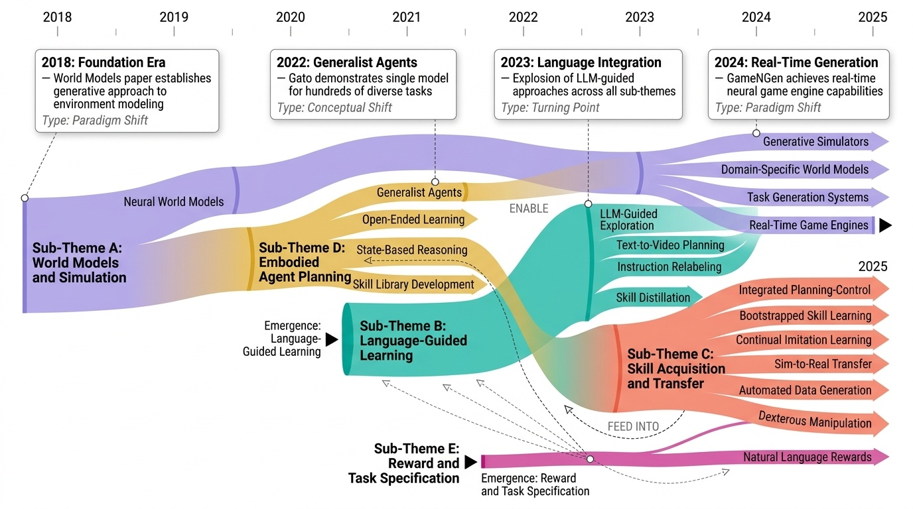
Category Overview
# Generative Task Planning Generative Task Planning 카테고리는 대규모 언어 모델(Large Language Model)과 생성형 AI 모델을 활용하여 로봇 및 embodied agent가 새로운 작업을 자동으로 계획하고 학습하는 기술을 다룬다. 이 분야의 핵심은 자연어 지시(text instruction)와 비디오, 시뮬레이션을 통해 복잡한 작업 계획을 생성하고, 이를 실제 환경에서 실행 가능하도록 변환하는 것이다 [1623][1604][1418]. 최근 연구들은 대규모 언어 모델을 강화학습(Reinforcement Learning) 프레임워크와 결합하여 보상 설계(reward shaping)와 정책 사전학습(policy pretraining)을 자동화하고 있다 [1583][1578][1418]. 또한 모방 학습(imitation learning)과 결합된 접근법들이 로봇 조작(robot manipulation) 작업의 연속적 학습을 가능하게 하며 [1462][1357], 확산 모델(diffusion models)과 같은 생성형 모델들이 실시간 시뮬레이션 엔진 역할을 수행하고 있다 [1360][1452]. 이러한 기술들은 자율주행(autonomous driving)부터 인간형 로봇(humanoid robot) 제어, 오픈엔디드 에이전트(open-ended agent) 개발에 이르기까지 광범위한 응용 분야를 창출하고 있다 [1400][1526][1623].
⚠ 갭: 실제 환경과 시뮬레이션 간의 간극을 줄이는 고충실도 생성 모델이 필요하다.
🏛 정책: 로봇의 자율학습 능력 확보를 위한 시뮬레이션 기술과 환경 구축에 투자해야 한다.
A Generalist Agent

Figure 1: A generalist agent. Gato can sense and act with different embodiments across a wide range of
 *Figure 1: A generalist agent. Gato can sense and act with different embodiments across a wide range of* Gato는 대규모 언어 모델의 접근 방식을 일반화하여 텍스트를 넘어 다양한 모달리티와 구체화(embodiment)를 처리할 수 있는 단일 신경망 기반의 범용 정책 에이전트이다. 동일한 가중치를 가진 하나의 모델로 Atari 게임, 이미지 캡셔닝, 대화, 로봇 제어 등 604개의 서로 다른 작업을 수행할 수 있다.
Gato는 대규모 언어 모델의 스케일링 원리를 다중 모달리티 제어 문제로 확장하여 단일 범용 에이전트의 가능성을 실증적으로 보여주는 획기적 연구이다. 기술적 구성은 상대적으로 단순하지만, 604개 작업 규모에서의 통합 및 실제 로봇 제어 성공은 높은 실무적 가치와 장기적 영향력을 가진다.
Bootstrap Your Own Skills: Learning to Solve New Tasks with Large Language Model Guidance

Figure 1: BOSS learns to execute a large set of useful, long-horizon skills with minimal supervision
 *Figure 1: BOSS learns to execute a large set of useful, long-horizon skills with minimal supervision* BOSS는 기본 primitive 스킬 세트로부터 LLM의 지도를 받아 스킬 체이닝을 통해 복잡한 장기 작업을 수행할 수 있는 스킬 라이브러리를 자동으로 구축하는 방법론이다. 최소한의 감독으로 환경과의 상호작용을 통해 의미 있는 스킬 조합을 학습한다.
BOSS는 LLM의 상식 지식과 강화학습의 환경 상호작용을 창의적으로 결합하여 최소 감독으로 장기 복잡 작업을 학습하는 문제의 실용적이고 확장 가능한 해결책을 제시한다. 실험 검증과 실제 로봇 시연을 통해 높은 신뢰성을 확보했으며, 로봇 학습 분야의 중요한 기여이다.
Dexterous Manipulation through Imitation Learning: A Survey

Fig. 1.
 *Fig. 1.* 본 논문은 Imitation Learning(IL)을 활용한 Dexterous Manipulation 방법들을 종합적으로 조사하는 서베이 논문으로, 전문가 시연을 통해 로봇이 인간 수준의 손재주를 습득하도록 하는 방식을 다룬다.
본 서베이는 IL 기반 dexterous manipulation 분야의 포괄적이고 실무적인 가이드를 제공하며, 최근 주요 기술 동향을 잘 정리했으나, 구체적인 기술적 깊이와 정량적 성능 비교는 제한적이다.
Diffusion Models Are Real-Time Game Engines

 *Figure 3: Method overview (see Section 3).* GameNGen은 diffusion model을 기반으로 한 신경망 게임 엔진으로, DOOM을 실시간(20 FPS)으로 실행하면서 사람과 구별하기 어려운 수준의 시각적 품질과 게임 상태 일관성을 유지한다.
GameNGen은 신경망 게임 엔진의 실현 가능성을 처음 강력히 입증한 획기적 논문으로, noise augmentation을 통한 auto-regressive drift 해결, 체계적 적응 방법론, 실시간 성능과 고품질 시각화의 동시 달성이 높은 기술적 기여도를 보인다.
GAIA-1: A Generative World Model for Autonomous Driving

Figure 1: GAIA-1 multimodal video generation. GAIA-1 can generate videos by performing future
 *Figure 2: Architecture of GAIA-1. First, we encode information from all input modalities (video, text,* GAIA-1은 비디오, 텍스트, 액션 입력을 활용하여 현실적인 운전 시나리오를 생성하는 생성형 월드 모델로, 자율주행 시스템의 미래 예측 및 훈련을 향상시킨다.
GAIA-1은 월드 모델과 생성형 비디오 모델의 상보적 강점을 창의적으로 결합하여 자율주행을 위한 고충실도 시뮬레이션과 미래 예측을 동시에 달성하는 혁신적 접근법으로, 자율주행 기술의 훈련 및 검증을 획기적으로 가속화할 가능성을 제시한다.
GenSim: Generating Robotic Simulation Tasks via Large Language Models

Figure 1: Task gallery of over 100 tasks generated by GPT4. GenSim leverages a LLM code
 *Figure 2: GenSim is an LLM framework to scale up simulation task diversity for robotic policy* GenSim은 LLM의 코드 생성 능력을 활용하여 로봇 시뮬레이션 작업을 자동으로 생성하는 프레임워크로, 기존 10개의 수작업 작업을 100개 이상으로 확장하여 작업 수준의 일반화를 달성한다.
GenSim은 LLM의 코드 생성 능력을 로봇 시뮬레이션에 창의적으로 적용하여 작업 수준 다양성을 획기적으로 확대하고, 실증적으로 정책 일반화와 sim-to-real 전이 성능을 크게 향상시킨 혁신적인 연구이다. 다만 복잡한 환경과 더 다양한 실제 로봇에서의 일반화 검증이 필요하다.
Guiding Pretraining in Reinforcement Learning with Large Language Models

Figure 1: ELLM uses a pretrained large language model
 *Figure 1: ELLM uses a pretrained large language model* ELLM은 대규모 언어모델(LLM)을 활용하여 RL 에이전트의 탐색을 인간의 상식적 지식으로 안내하는 방법을 제안한다. 현재 상태에 기반해 LLM이 제시하는 목표 달성을 보상함으로써 의미 있는 행동 학습을 유도한다.
ELLM은 내재적 동기 탐색의 근본적 문제인 '무관한 신규성 추구'를 대규모 언어모델의 상식 지식으로 창의적으로 해결한 연구이다. 실험 결과가 제한적이고 계산 비용 이슈가 있지만, LLM을 RL 탐색에 통합하는 novel한 접근과 실질적 성능 향상은 이 분야에 중요한 기여를 한다.
Learning Interactive Real-World Simulators

Figure 1: A universal simulator (UniSim). The simulator of the real-world learns from broad data with diverse
 *Figure 1: A universal simulator (UniSim). The simulator of the real-world learns from broad data with diverse* 인터넷 데이터로부터 학습된 generative model을 기반으로 인간, 로봇 등의 상호작용에 대한 시각적 결과를 시뮬레이션하는 universal simulator (UniSim)를 제안한다. 다양한 데이터셋을 통합하여 언어 지시, 로봇 제어, 인간 활동 등 다양한 모달리티의 행동을 입력받아 일관성 있는 비디오를 생성한다.
본 논문은 이질적인 다중 데이터셋을 unified 인터페이스로 통합하여 interactive real-world simulator를 구축한 의미 있는 작업으로, video diffusion model을 활용한 기술적 구현과 다양한 응용 가능성을 보여준다. 다만 현실성 검증의 정량성과 실제 로봇 환경에서의 광범위한 검증이 추가되면 더욱 강력한 기여가 될 수 있다.
Learning Universal Policies via Text-Guided Video Generation

Figure 1: Text-Conditional Video Generation as Universal Policies. Text-conditional video generations
 *Figure 1: Text-Conditional Video Generation as Universal Policies. Text-conditional video generations* 텍스트 조건부 video generation을 사용하여 다양한 환경에서 작동하는 범용 정책을 학습하는 방법을 제안하며, 현재 이미지와 텍스트 목표 설명으로부터 미래 프레임 시퀀스를 생성한 후 inverse dynamics model로 액션을 추출한다.
본 논문은 video generation을 통한 범용 정책 학습이라는 창의적인 접근으로 환경 다양성과 reward 설계 문제를 우아하게 해결하며, 조합적 일반화와 인터넷 규모 지식 전이를 통해 강화학습 분야에 상당한 기여를 한다.
LOTUS: Continual Imitation Learning for Robot Manipulation Through Unsupervised Skill Discovery

Fig. 1: Method Overview. LOTUS is a continual imitation learning
 *Fig. 1: Method Overview. LOTUS is a continual imitation learning* LOTUS는 물리 로봇이 인간 시연으로부터 계속 새로운 조작 과제를 학습하도록 하는 지속적 모방 학습 알고리즘으로, open-vocabulary vision model을 이용한 비지도 기술 발견과 메타-컨트롤러 기반의 기술 합성을 통해 시각 기반 조작을 수행한다.
LOTUS는 지속적 모방학습에서 동적 기술 발견과 계층적 합성을 통해 실제 로봇이 효율적으로 평생 학습할 수 있도록 하는 혁신적 접근법으로, 견고한 실험 검증과 11% 이상의 성능 향상을 통해 그 효과성을 입증한다.
MineDojo: Building Open-Ended Embodied Agents with Internet-Scale Knowledge

Figure 1: MINEDOJO is a novel framework for developing open-ended, generally capable agents
 *Figure 1: MINEDOJO is a novel framework for developing open-ended, generally capable agents* MineDojo는 Minecraft 게임을 기반으로 수천 개의 개방형 작업, 인터넷 규모의 멀티모달 지식베이스(YouTube 영상, Wiki, Reddit), 그리고 사전학습된 비디오-언어 모델을 보상함수로 활용하는 에이전트 학습 알고리즘을 통합하여 일반화 능력을 갖춘 embodied agent를 개발하는 프레임워크이다.
MineDojo는 개방형 환경, 인터넷 규모 지식베이스, 대규모 사전학습 모델을 통합하여 일반화된 embodied agent 연구의 완성도 높은 프레임워크를 제공하며, 전체 코드와 데이터를 공개함으로써 커뮤니티 기여도 우수하다. 다만 다른 도메인 전이 가능성 검증과 더 복잡한 작업에서의 성능 확장이 향후 과제이다.
Plan-Seq-Learn: Language Model Guided RL for Solving Long Horizon Robotics Tasks

 *Figure 2: Method overview. PSL decomposes tasks into a list of regions and stage termination conditions* Plan-Seq-Learn (PSL)은 LLM의 고수준 계획, motion planning의 시퀀싱, RL의 저수준 제어 학습을 통합하여 사전 정의된 스킬 라이브러리 없이 장시간 로봇 작업을 해결한다.
PSL은 LLM, motion planning, RL의 상호 보완적 강점을 창의적으로 통합하여 사전 정의된 스킬 없이 장시간 로봇 작업을 효율적으로 해결하는 실질적이고 강력한 방법을 제시한다. 광범위한 실험과 명확한 설명으로 높은 가치의 기여를 입증한다.
Real-World Humanoid Locomotion with Reinforcement Learning

Figure 1: Deployment to outdoor environments. We deploy our model to a number of outdoor
 *Figure 1: Deployment to outdoor environments. We deploy our model to a number of outdoor* Causal transformer 기반의 학습 정책을 대규모 모델프리 강화학습으로 시뮬레이션에서 훈련하고 실제 휴머노이드 로봇에 제로샷으로 배포하여 다양한 실외 환경에서 안정적인 보행을 달성했다.
Causal transformer 기반의 강화학습 정책을 실제 humanoid 로봇에 성공적으로 배포한 중요한 사례로, 학습 기반 제어의 실용성과 일반화 능력을 보여준다. 아키텍처 선택에 대한 체계적 검증과 다양한 실세계 환경에서의 광범위한 실험을 통해 높은 기술적·실용적 가치를 제시한다.
RoboGen: Towards Unleashing Infinite Data for Automated Robot Learning via Generative Simulation

Figure 1: 25 example tasks generated and corresponding skills learned by RoboGen. Readers are encouraged to visit our pr
 *Figure 1: 25 example tasks generated and corresponding skills learned by RoboGen. Readers are encouraged to visit our pr* RoboGen은 생성형 모델을 활용하여 로봇이 자동으로 다양한 작업, 장면, 학습 감독을 생성하고 이를 통해 규모 있는 로봇 기술 학습을 가능하게 하는 자동화 파이프라인이다.
RoboGen은 foundation 모델의 한계를 인식하면서도 그 강점을 창의적으로 활용하여 로봇 스킬 학습의 자동화와 규모 확대라는 의미 있는 문제를 해결한 논문이다. 완전 자동화된 파이프라인과 다양한 작업 생성이라는 성과는 주목할 만하나, 현실 환경으로의 적용 검증이 필요하다.
Scaling Up and Distilling Down: Language-Guided Robot Skill Acquisition

Figure 1: Language-guided Skill Acquisition enables scalable robot learning. In the data generation stage, a LLM takes
 *Figure 1: Language-guided Skill Acquisition enables scalable robot learning. In the data generation stage, a LLM takes* LLM 기반 고수준 계획과 sampling-based robot planner를 활용하여 언어-레이블 로봇 데이터 생성을 확장하고, 이를 diffusion policy를 통해 다중 작업 언어-조건 visuo-motor 정책으로 증류하는 로봇 스킬 획득 프레임워크를 제시한다.
본 논문은 LLM 기반 계획과 sampling-based planning을 결합한 자동 로봇 데이터 생성과 multi-task diffusion policy 학습의 novel한 통합 프레임워크를 제시하며, 33.2% 성능 향상과 함께 로봇 스킬 습득의 확장 가능성을 입증한다. 다중 작업 벤치마크와 함께 로봇 학습 분야에 의미 있는 기여를 하고 있다.
SPRINT: Scalable Policy Pre-Training via Language Instruction Relabeling

Fig. 1: SPRINT is a scalable approach for pre-training robot policies with a rich repertoire of skills while minimizing
 *Fig. 1: SPRINT is a scalable approach for pre-training robot policies with a rich repertoire of skills while minimizing * SPRINT는 대규모 언어 모델(LLM)을 활용한 instruction relabeling과 offline RL 기반 cross-trajectory skill chaining을 통해 로봇 정책 사전학습을 위한 인간 주석 비용을 크게 줄이는 확장 가능한 접근법이다.
SPRINT는 LLM과 offline RL을 창의적으로 결합하여 로봇 정책 사전학습의 인간 주석 비용을 획기적으로 감소시키는 실질적이고 확장 가능한 방법을 제시한다. 실험 결과도 우수하나, 생성된 instruction의 품질 보증과 다양한 도메인에서의 검증이 추가되면 더욱 강력한 기여가 될 것이다.
Statler: State-Maintaining Language Models for Embodied Reasoning

Fig. 1: Our Statler framework enables robots to carry out complex tasks specified in natural language that require reaso
 *Fig. 1: Our Statler framework enables robots to carry out complex tasks specified in natural language that require reaso* Statler는 로봇 계획 작업에서 LLM이 세계 상태를 명시적으로 유지하고 추적하도록 하는 모델 기반 프레임워크로, 상태 기반 의사결정을 통해 장기 계획 능력을 향상시킨다.
Statler는 LLM 기반 로봇 계획에 모델 기반 접근을 도입한 참신한 프레임워크로, 간단하면서도 효과적인 설계로 장기 계획 문제에서 강력한 성능 향상을 보여준다. 다만 실제 로봇 환경에서의 검증과 복잡 도메인 적응성에 대한 추가 연구가 필요하다.
Text2Reward: Reward Shaping with Language Models for Reinforcement Learning

Figure 1: An overview of TEXT2REWARD of three stages: Expert Abstraction provides an abstraction
 *Figure 1: An overview of TEXT2REWARD of three stages: Expert Abstraction provides an abstraction* LLM을 활용하여 자연어로 기술된 목표로부터 자동으로 dense reward function을 생성하고 형성하는 data-free 프레임워크 Text2Reward를 제시한다. 생성된 reward code는 해석 가능하고 실행 가능한 프로그램 형태로, 기존의 inverse RL이나 sparse reward 기반 방법들보다 넓은 범위의 작업을 지원한다.
본 논문은 LLM 기반 reward code 자동 생성으로 RL의 오랜 challenge인 reward design을 혁신적으로 해결하며, Pythonic 추상화와 code execution feedback을 통해 높은 해석성과 신뢰성을 달성했다. 광범위한 로봇 벤치마크와 실제 로봇 배포로 실용성을 입증하고 human-in-the-loop 파이프라인으로 실무 적용 가능성을 보여주는 ICLR 2024의 우수 논문이다.
Video Language Planning

Figure 1: Video Language Planning uses forward tree search via vision-language models and text-to-video
 *Figure 1: Video Language Planning uses forward tree search via vision-language models and text-to-video* Vision-Language Model과 Text-to-Video Model을 결합하여 트리 서치를 통해 장기 수평선 로봇 작업을 위한 상세한 비디오 계획을 생성하는 Video Language Planning(VLP) 알고리즘을 제시한다.
본 논문은 대규모 사전학습 모델의 상호보완적 강점을 영리하게 통합하여 실제 로봇 시스템에서 획기적인 성능 향상을 달성한 혁신적 연구이며, 계획 문제에 대한 현대적 재검토를 제시한다.
Voyager: An Open-Ended Embodied Agent with Large Language Models

Figure 1: VOYAGER discovers new Minecraft items and skills continually by self-driven exploration,
 *Figure 2: VOYAGER consists of three key components: an automatic curriculum for open-ended* Voyager는 GPT-4를 활용한 첫 번째 구체화된 평생 학습 에이전트로, Minecraft에서 자동 커리큘럼, 지속 가능한 스킬 라이브러리, 반복적 프롬프팅 메커니즘을 통해 인간의 개입 없이 지속적으로 탐험하고 새로운 기술을 획득한다.
Voyager는 LLM 기반 에이전트의 평생 학습 능력을 획기적으로 입증하는 첫 번째 시스템으로, 자동 커리큘럼, 벡터 기반 스킬 라이브러리, 반복적 프롬프팅의 조합을 통해 기존 기법을 대폭 능가하는 성과를 달성했으며, 오픈소스 공개로 커뮤니티 기여도 높다.
World Models

 *Figure 3. In this work, we build probabilistic generative models of* 환경의 생성형 신경망 world model을 비지도학습으로 학습한 후, 추출된 특징으로 간단한 policy를 훈련하여 강화학습 문제를 해결하는 방법을 제시한다. 심지어 world model이 생성한 상상의 환경에서 훈련한 policy를 실제 환경에 전이 가능함을 보인다.
이 논문은 reinforcement learning과 생성 모델을 우아하게 결합하여 효율적인 policy 학습을 달성했으며, world model 기반 접근법의 실용성을 명확히 입증한 영향력 있는 작업이다. 모듈화된 설계와 dream training 개념은 이후 연구에 큰 영감을 주었다.
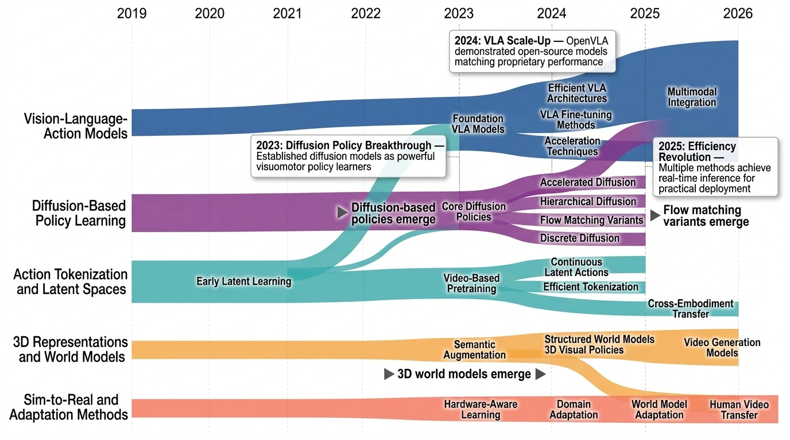
Category Overview
# Imitation and Diffusion Learning 카테고리 개요 Imitation and Diffusion Learning 카테고리는 로봇의 비전-언어-행동(Vision-Language-Action, VLA) 모델과 확산(Diffusion) 기반 정책 학습을 통합하는 67편의 연구를 다룬다. 이 분야는 인간의 시연(Demonstration)으로부터 로봇이 복잡한 조작 작업을 학습하는 방법론을 중심으로, 행동 토큰화(Action Tokenization), 잠재 공간(Latent Space) 표현, 그리고 3D 월드 모델(World Model) 구축을 포함한다. [1362], [1363]과 같은 확산 정책 학습 연구는 연속적인 행동 분포를 효과적으로 모델링하며, [1296], [1336], [1358] 등의 VLA 파운데이션 모델들은 대규모 사전학습을 통해 다양한 로봇 작업에 일반화 가능한 능력을 제공한다. Sim-to-Real 적응(Adaptation) 및 시뮬레이션 환경에서의 학습 효율성 향상 연구 [1293], [1355]는 실제 로봇 배포의 실용성을 높이며, [1330], [1331]과 같은 행동 수열 기반 학습 방법들은 자기지도(Self-supervised) 신호를 통해 라벨 의존성을 감소시킨다. 이 카테고리의 연구들은 로봇 매니퓰레이션 분야에서 스케일 가능하고 샘플 효율적인 학습 패러다임을 구현하는 것을 목표로 한다.
- Vision-Language-Action Models: Vision-Language-Action Models (VLA)는 시각(Vision), 언어(Language), 행동(Action)을 통합하는 기초 모델(Foundation Model)로서, 로봇 제어 및 구체화된 AI(Embodied AI) 분야의 혁신적 접근법입니다. [1296]의 실용적 VLA 기초 모델부터 [1358]의 확산 전문가(Diffusion Expert) 플러그인 방식까지, 다양한 아키텍처가 제안되고 있습니다. 이러한 모델들은 대규모 로봇 학습 데이터셋([1323])과 일관성 강화 학습(Consistency Learning) 기법([1327])을 활용하여 로봇의 의도 이해 및 정확한 행동 생성 능력을 향상시킵니다. 또한 양자화(Quantization) 기술([1320])과 강화 미세조정(Reinforced Fine-tuning)([1338]) 방법론은 모델의 효율성과 성능을 동시에 개선하고 있습니다. 자기수정(Self-Correction) 메커니즘([1342])과 같은 고급 기법들은 VLA 모델이 복잡한 작업에서 점진적으로 성능을 개선하도록 합니다. 이 분야의 연구들은 다중 모달(Multimodal) 정보를 활용한 로봇 지능화의 새로운 표준을 제시하고 있습니다.
- Action Tokenization and Latent Spaces: Action Tokenization and Latent Spaces는 로봇 학습에서 고차원의 연속적 행동(continuous action)을 이산적이고 효율적인 표현으로 변환하는 기술을 다룹니다. 이 접근법은 비디오나 플레이 데이터로부터 의미있는 행동 임베딩(action embedding)을 학습하여 정책 학습(policy learning)의 효율성을 높입니다. [1330]의 CLAM과 [1331]의 CLASS는 연속적 잠재 행동 모델(latent action models)을 통해 행동 표현을 개선하고, [1392]의 FAST는 비전-언어-행동 모델(vision-language-action models)에서 효율적인 토큰화를 제안합니다. 또한 [1448]의 연구는 비디오로부터 잠재 행동을 사전학습(pretraining)하고, [1481]의 Motus는 통합된 잠재 행동 월드 모델(latent action world model)을 구축하여 로봇 제어의 일반화 성능을 향상시킵니다. 이러한 기술들은 모방 학습(imitation learning)과 확산 학습(diffusion learning)의 효과성을 크게 증대시키는 핵심 요소입니다.
- Diffusion-Based Policy Learning: Diffusion-Based Policy Learning은 확산 모델(diffusion model)을 기반으로 로봇 정책을 학습하는 방법론으로, 최근 모방 학습(imitation learning) 분야에서 주목받고 있습니다. 이 접근 방식은 시각운동 정책(visuomotor policy)의 학습에서 행동 확산(action diffusion)을 활용하여 높은 정확도와 안정성을 달성합니다[1362]. 주요 연구들은 확산 모델의 순차적 생성 과정을 개선하기 위해 계층적 구조(hierarchical structure)를 도입하거나[1419], 트랜스포머 아키텍처(transformer architecture)와 결합하여 효율성을 높이는 등 다양한 방향으로 발전하고 있습니다[1363]. 또한 이산 확산(discrete diffusion)을 활용한 비전-언어 행동 모델(vision-language action model)이나 혼합 전문가 구조(mixture of experts)를 통한 확산 정책 최적화도 핵심 연구 주제입니다[1366]. 단일 데모로부터 학습하는 원샷 모방(one-shot imitation)과 정책 가속화(policy acceleration)까지 다양한 응용이 탐구되면서, 확산 기반 정책 학습은 로봇 조작(robot manipulation) 및 일반적인 로봇 제어 문제 해결을 위한 유망한 패러다임으로 자리 잡고 있습니다[1352].
- 3D Representations and World Models: 3D 표현(3D Representations)과 월드 모델(World Models)은 모방 학습(Imitation Learning)과 확산 학습(Diffusion Learning)에서 로봇이 3차원 환경을 이해하고 미래를 예측하는 핵심 기술입니다. [1288]의 3D 확산 정책(3D Diffusion Policy)과 [1289]의 3D FlowMatch 액터는 3D 비전-모터 정책(Visuomotor Policy)을 학습하여 단일 및 이중 팔 로봇의 제어를 일반화하는 방법을 제시합니다. [1355]와 [1371]의 DreamDojo는 대규모 인간 시연(Human Demonstration) 데이터로부터 범용 로봇 월드 모델을 구축하여 로봇이 환경 역학을 이해하도록 합니다. [1406]의 Genie Envisioner와 [1449]의 학습된 지각 전방향 동역학 모델(Learned Perceptive Forward Dynamics Model)은 로봇의 안전하고 플랫폼 독립적인 학습을 가능하게 합니다. [1565]의 의미론적 상상 경험(Semantically Imagined Experience)과 [1581]의 구조화된 월드 모델(Structured World Models)은 로봇이 인간 비디오로부터 학습한 3D 표현을 활용하여 확장 가능한 로봇 학습을 실현합니다.
- Sim-to-Real and Adaptation Methods: Sim-to-Real과 Adaptation Methods는 시뮬레이션 환경에서 학습한 정책을 실제 로봇에 적용하는 과정에서 발생하는 도메인 갭(domain gap)을 해결하기 위한 기술들을 다룬다. [1293]에서는 Real2Sim2Real 파이프라인을 통해 실제 환경의 데이터를 시뮬레이션으로 변환하고 다시 실제 환경에 적용하는 분산 처리(distributional treatment) 방식을 제안한다. [1368]과 [1488]은 확산 정책(diffusion policy)을 기반으로 월드 모델(world model)과 네비게이션 작업에 적용하여 시뮬레이션에서의 학습 효율성을 높이면서 실제 로봇 환경으로의 전이를 개선한다. [1450]은 저비용 하드웨어를 활용한 양팔 조작(bimanual manipulation) 학습을 통해 시뮬레이션-실제 환경 간 갭을 줄이는 실질적인 방법을 제시한다. 이러한 방법들은 로봇 학습의 샘플 효율성을 향상시키고 실제 배포 가능성을 높이는 데 중요한 역할을 한다.
- Imitation and Diffusion Learning: # Imitation and Diffusion Learning (1편) 모방학습(Imitation Learning)과 확산학습(Diffusion Learning)은 로봇이 인간의 행동으로부터 직접 학습하는 강력한 방법론입니다. 이러한 접근 방식은 복잡한 환경에서 로봇의 정책(Policy)을 효과적으로 학습할 수 있게 합니다. [1515]에서 제시된 Phantom은 실제 로봇 없이 인간 비디오 데이터만으로 로봇을 훈련할 수 있는 혁신적인 방법을 제안합니다. 이는 비용이 많이 드는 로봇 데이터 수집의 부담을 크게 줄이면서도 현실적인 로봇 제어(Robot Control)를 학습하는 것을 가능하게 합니다. 확산 모델(Diffusion Model)을 기반으로 한 이러한 기법들은 인간의 시연(Demonstration)을 통해 로봇의 행동 생성 능력을 향상시키는 데 중요한 역할을 합니다. 결과적으로 모방학습과 확산학습은 로봇 공학에서 데이터 효율성(Data Efficiency)과 일반화 능력(Generalization)을 동시에 개선하는 핵심 기술이 되고 있습니다.
⚠ 갭: 실시간 제어를 위한 추론 속도와 정확성의 균형을 맞추는 기술이 부족하다.
🏛 정책: 차세대 로봇 제어 알고리즘의 실용화를 위한 하드웨어-소프트웨어 통합 연구가 필요하다.
3D Diffusion Policy: Generalizable Visuomotor Policy Learning via Simple 3D Representations

Fig. 1: 3D Diffusion Policy (DP3) is a visual imitation learning algorithm that marries 3D visual representations with d
 *Fig. 2: Overview of 3D Diffusion Policy (DP3). Above: In the training phase, DP3 simultaneously trains its perception mo* 3D Diffusion Policy (DP3)는 점군(point cloud) 기반의 3D 시각 표현을 diffusion policy와 결합하여 로봇 모방 학습에서 적은 데이터로 높은 일반화 성능을 달성하는 방법을 제안한다.
DP3는 개념적으로 단순하면서도 3D 표현과 diffusion policy의 시너지를 효과적으로 활용하여 적은 데이터로 높은 성능과 일반화를 달성한 실용적인 방법이며, 광범위한 평가를 통해 로봇 시각 모방 학습에서 3D 표현의 중요성을 설득력 있게 입증한다.
3D FlowMatch Actor: Unified 3D Policy for Single- and Dual-Arm Manipulation

Figure 1: Top: 3DFA is a flow-matching policy built atop 3D Diffuser Actor [12]. It encodes the
 *Figure 1: Top: 3DFA is a flow-matching policy built atop 3D Diffuser Actor [12]. It encodes the* 3D FlowMatch Actor (3DFA)는 flow matching을 사용한 trajectory prediction과 3D pretrained visual representation을 결합하여 단일 팔 및 양팔 로봇 조작을 위한 통합 정책을 제시하며, 이전 3D diffusion 기반 정책 대비 30배 이상 빠른 학습과 추론을 달성한다.
3DFA는 flow matching을 로봇 정책에 적용하여 획기적 효율성 개선을 달성하고, 양팔 조작에서 새로운 state-of-the-art를 수립하며, 광범위한 실세계 평가와 ablation을 통해 실용적 로봇 정책의 모범적 사례를 제시하는 고도로 영향력 있는 연구이다.
DreamDojo: A Generalist Robot World Model from Large-Scale Human Videos

Figure 1: DreamDojo overview. DreamDojo acquires comprehensive physical knowledge from large-scale
 *Figure 1: DreamDojo overview. DreamDojo acquires comprehensive physical knowledge from large-scale* 44k시간의 대규모 인간 영상으로 사전학습하고 continuous latent actions를 도입하여, 접촉이 많은 로봇 작업에 대한 generalist world model인 DreamDojo를 제시한다.
대규모 인간 영상을 활용한 foundation world model 구축이라는 혁신적 접근과 continuous latent actions라는 우아한 솔루션을 제시하여 로봇 학습의 데이터 효율성 문제를 크게 개선했으나, 실제 로봇 배포 및 제어 실험의 충분한 검증이 필요하다.
DreamDojo: A Generalist Robot World Model from Large-Scale Human Videos

Figure 1: DreamDojo overview. DreamDojo acquires comprehensive physical knowledge from large-scale
 *Figure 1: DreamDojo overview. DreamDojo acquires comprehensive physical knowledge from large-scale* 44k시간의 대규모 인간 비디오에서 학습한 기초 로봇 세계 모델 DreamDojo를 제시하며, continuous latent actions를 통해 라벨 부족 문제를 해결하고 실시간 추론이 가능한 distillation 파이프라인을 제안한다.
DreamDojo는 대규모 인간 비디오 데이터와 continuous latent actions를 통한 혁신적인 접근으로 일반화된 로봇 세계 모델의 새로운 기준을 제시하며, 실시간 성능 달성과 다양한 응용 가능성으로 로봇 학습 분야에 실질적인 영향을 미칠 수 있는 중요한 기여다.
Genie Envisioner: A Unified World Foundation Platform for Robotic Manipulation

Figure 1: Overview of the Genie Envisioner World Foundation Platform. Genie Envisioner is a unified world
 *Figure 1: Overview of the Genie Envisioner World Foundation Platform. Genie Envisioner is a unified world* Genie Envisioner는 video diffusion model 기반의 통합 로봇 조작 플랫폼으로, 정책 학습, 평가, 시뮬레이션을 단일 비디오 생성 프레임워크 내에서 통합한다.
Genie Envisioner는 로봇 조작을 위한 통합 플랫폼으로서 vision-centric 설계와 구조화된 평가 벤치마크를 통해 기존 분산된 파이프라인을 효과적으로 통합하며, 크로스 embodiment 일반화와 확장 가능한 시뮬레이션은 실용적 중요성을 보여주나, 대규모 데이터 의존성과 제한된 다양성 평가가 보완되어야 한다.
Learned Perceptive Forward Dynamics Model for Safe and Platform-aware Robotic Navigation

Fig. 1: Demonstration of the proposed perceptive Forward Dynamics Model for robust navigation in complex environments. T
 *Fig. 1: Demonstration of the proposed perceptive Forward Dynamics Model for robust navigation in complex environments. T* 본 논문은 시뮬레이션과 실세계 데이터로 학습한 지각형 Forward Dynamics Model (FDM)을 제안하여, 복잡한 지형에서 사족 로봇의 안전한 네비게이션을 실현한다. 이 FDM을 MPPI 플래닝 프레임워크에 통합하여 복잡한 비용 함수 튜닝 없이 안전한 경로 계획을 가능하게 한다.
본 논문은 거친 지형에서 사족 로봇의 안전한 네비게이션을 위해 지각형 FDM을 제안한 의미 있는 연구로, 하이브리드 학습 전략과 MPPI 통합을 통해 비용 함수 튜닝을 제거하고 영점 적응성을 제공한다. 실측 개선(41% 위치 추정, 27% 성공률)과 공개 구현이 큰 강점이나, 실세계 검증 범위 확대와 다양한 플랫폼 적용 가능성 입증이 향후 필요하다.
Scaling Robot Learning with Semantically Imagined Experience

Figure 1: We propose using text-guided diffusion models for data augmentation within the sphere
 *Figure 1: We propose using text-guided diffusion models for data augmentation within the sphere* ROSIE는 text-to-image diffusion 모델을 이용한 inpainting을 통해 기존 로봇 조작 데이터를 의미론적으로 증강하여, 새로운 물체와 환경에 대한 로봇의 일반화 능력을 향상시키는 방법을 제안한다.
ROSIE는 최신 text-to-image diffusion 모델을 로봇 학습에 창의적으로 적용하여 고비용의 실제 데이터 수집 없이 의미론적으로 다양한 학습 데이터를 생성하는 실용적인 방법을 제시했다. 광범위한 실험을 통해 새로운 물체 일반화, 배경/방해물 강건성, 고수준 작업 향상을 입증했으며, 로봇 학습 커뮤니티에 높은 영향을 미칠 가능성이 있다.
Structured World Models from Human Videos

 *Fig. 2: Overview of SWIM. We first pre-train the world model on a large set of human videos. We finetune this on many ro* 본 논문은 대규모 인간 비디오 데이터로 사전학습한 구조화된 world model을 로봇의 조작 작업에 미세조정하여, 30분 이내의 실제 상호작용으로 복잡한 조작 기술을 학습할 수 있는 SWIM 프레임워크를 제안한다.
본 논문은 형태학적으로 불변인 구조화 행동 공간이라는 창의적인 아이디어로 대규모 인간 비디오 데이터를 실제 로봇 학습에 성공적으로 연결하였으며, 광범위한 실험을 통해 샘플 효율성과 일반화 성능을 모두 입증하여 로봇 조작 학습 분야에 의미 있는 기여를 하였다.
A Distributional Treatment of Real2Sim2Real for Object-Centric Agent Adaptation in Vision-Driven Deformable Linear Object Manipulation

Fig. 1.
 *Fig. 1.* Deformable Linear Object(DLO) 조작을 위해 likelihood-free inference로 물리 파라미터의 사후분포를 추정하고, 이를 domain randomisation에 활용하여 시뮬레이션에서 학습한 정책을 실제 환경에 zero-shot으로 배포하는 end-to-end Real2Sim2Real 프레임워크를 제시한다.
본 논문은 LFI 기반 파라미터 추정과 domain randomisation, model-free RL을 정교하게 통합하여 vision-based DLO 조작의 Real2Sim2Real 문제를 해결하는 novel하고 기술적으로 견고한 접근을 제시하며, zero-shot deployment의 실증을 통해 실용적 가치를 입증한다.
DiWA: Diffusion Policy Adaptation with World Models

Figure 1: (a) Standard diffusion policies trained via imitation learning are limited by offline data. (b) DPPO [17]
 *Figure 1: (a) Standard diffusion policies trained via imitation learning are limited by offline data. (b) DPPO [17]* DiWA는 학습된 world model을 활용하여 diffusion 기반 로봇 정책을 오프라인으로 미세조정하는 프레임워크로, RL을 통해 상상 속 롤아웃에서 정책을 개선한다.
DiWA는 world model을 활용한 offlineRL로 diffusion policy 미세조정의 샘플 효율성을 획기적으로 개선한 혁신적 연구로, 실제 로봇 학습의 실무적 도전 과제를 해결하는 의미 있는 기여이다.
Learning Fine-Grained Bimanual Manipulation with Low-Cost Hardware

Fig. 1: ALOHA
 *Fig. 1: ALOHA* 저비용 하드웨어로 세밀한 양팔 조작 작업을 학습하기 위해 텔레오퍼레이션 시스템과 Action Chunking with Transformers (ACT) 알고리즘을 결합한 시스템을 제시한다.
이 논문은 저비용 하드웨어와 혁신적인 imitation learning 알고리즘의 결합으로 로보틱 조작의 민주화에 기여하는 중요한 작업이며, Action Chunking with Transformers는 오류 축적 문제를 우아하게 해결하는 독창적 방법론을 제시한다.
NavDP: Learning Sim-to-Real Navigation Diffusion Policy with Privileged Information Guidance

Fig. 1: NavDP is solely trained with simulation data but can achieve zero-shot sim-to-real transfer to different types o
 *Fig. 1: NavDP is solely trained with simulation data but can achieve zero-shot sim-to-real transfer to different types o* NavDP는 시뮬레이션에서만 학습한 unified transformer 기반 diffusion policy로, privileged information을 활용한 trajectory generation과 critic value prediction을 통해 zero-shot sim-to-real transfer를 달성한다.
NavDP는 시뮬레이션의 privileged information을 효과적으로 활용하는 unified transformer 아키텍처와 대규모 효율적 데이터 엔진으로 navigation 분야에서 significant advance를 달성했으며, zero-shot sim-to-real transfer와 cross-embodiment 일반화 측면에서 강력한 empirical 결과를 보여준다.
A Pragmatic VLA Foundation Model

Figure 1. Overview of LingBot-VLA. We scale dual-arm robot data collected in the real world for pre-training. LingBot-VL
 *Figure 1. Overview of LingBot-VLA. We scale dual-arm robot data collected in the real world for pre-training. LingBot-VL* LingBot-VLA는 약 20,000시간의 실제 로봇 데이터로 학습한 Vision-Language-Action 기초 모델로, 효율적인 학습과 다중 플랫폼 일반화 능력을 갖춘다.
LingBot-VLA는 실제 로봇 학습의 스케일링 거동을 최초로 실증하고 대규모 다양한 데이터와 효율적 훈련 인프라를 통해 실용적이고 일반화 가능한 VLA 기초 모델을 제시하며, 오픈 소스 공개로 로봇 학습 커뮤니티에 현저한 기여를 한다.
BitVLA: 1-bit Vision-Language-Action Models for Robotics Manipulation

Fig. 1: We introduce BitVLA, the first fully native 1-bit vision-language-action (VLA) model for robotic manipulation, i
 *Fig. 1: We introduce BitVLA, the first fully native 1-bit vision-language-action (VLA) model for robotic manipulation, i* 로봇 조작을 위한 완전한 1-bit Vision-Language-Action 모델인 BitVLA를 제안하여 11.0배의 메모리 감소와 4.4배의 지연 시간 단축을 달성하면서도 full-precision 기준 모델과 비슷한 성능을 유지한다.
BitVLA는 로봇 조작용 VLA 모델의 극단적 양자화의 첫 성공적 사례로, Quantize-then-Distill이라는 혁신적 훈련 전략을 통해 11배 메모리 감소와 4.4배 속도 향상을 달성하면서도 성능을 유지하여 엣지 로봇 배포의 실질적 경로를 제시한다.
BridgeData V2: A Dataset for Robot Learning at Scale

Figure 1 (BridgeData V2) We propose a large-scale robotic manipulation dataset containing 60,096
 *Figure 1 (BridgeData V2) We propose a large-scale robotic manipulation dataset containing 60,096* 저비용 공개 로봇으로 24개 환경에서 수집한 60,096개 궤적으로 이루어진 대규모 로봇 조작 데이터셋 BridgeData V2를 제안하며, 다양한 imitation learning 및 offline RL 방법들과의 호환성을 검증한다.
BridgeData V2는 기존 로봇 데이터셋의 한계를 해결하는 대규모 다양한 벤치마크로서, 공개 저비용 로봇과 다양한 환경·기술·조건화 방식을 통해 범용성과 재현 가능성을 모두 확보하였다. 6가지 방법론에 대한 포괄적 평가와 스케일링 분석은 로봇 학습 연구의 데이터-중심 접근법의 중요성을 강하게 입증하며, 공개 자원으로서 학계에 상당한 기여를 할 것으로 판단된다.
CEED-VLA: Consistency Vision-Language-Action Model with Early-Exit Decoding

Figure 1: Acceleration effect of CEED-VLA on OpenVLA and LLaVA-VLA. Left: Comparison
 *Figure 1: Acceleration effect of CEED-VLA on OpenVLA and LLaVA-VLA. Left: Comparison* Vision-Language-Action (VLA) 모델의 추론 속도를 향상시키기 위해 consistency distillation과 early-exit decoding을 결합한 CEED-VLA를 제안하며, 4배 이상의 가속화를 달성한다.
CEED-VLA는 consistency distillation과 early-exit decoding을 결합하여 VLA 추론을 획기적으로 가속화하며, 실제 로봇 배포에서 4배 이상의 속도 개선을 달성하면서도 조작 성능을 유지하는 실용적이고 일반화 가능한 해결책을 제시한다.
CogACT: A Foundational Vision-Language-Action Model for Synergizing Cognition and Action in Robotic Manipulation

Figure 1. (a) Success rate (%) comparison of our model against RT-1 [7], RT-1-X [48], RT-2-X [48], Octo [62], and OpenVL
 *Figure 1. (a) Success rate (%) comparison of our model against RT-1 [7], RT-1-X [48], RT-2-X [48], Octo [62], and OpenVL* CogACT는 Vision-Language-Model을 기반으로 하되 cognition과 action을 분리하여 specializing된 diffusion action transformer 모듈을 통해 로봇 조작의 성능을 대폭 향상시킨 VLA 모델이다.
CogACT는 VLM과 diffusion action transformer의 effective synergy를 통해 로봇 조작 성능에서 significant advancement를 달성한 well-motivated 연구이며, componentized 아키텍처와 체계적인 실험을 통해 높은 원창성과 실용적 가치를 보여준다.
ConRFT: A Reinforced Fine-tuning Method for VLA Models via Consistency Policy

Fig. 1: Overview of ConRFT. This figure illustrates the architecture of our reinforced fine-tuning approach for a pre-tr
 *Fig. 1: Overview of ConRFT. This figure illustrates the architecture of our reinforced fine-tuning approach for a pre-tr* ConRFT는 Vision-Language-Action 모델의 강화학습 기반 미세조정 방법으로, 오프라인 단계에서 행동 복제와 Q-러닝을 통합하고 온라인 단계에서 consistency policy를 통해 실제 로봇 조작 작업에서 높은 성공률을 달성한다.
ConRFT는 제한된 시연 데이터와 안전 제약이 있는 실제 로봇 환경에서 VLA 모델의 효율적인 미세조정을 위한 실용적이고 혁신적인 솔루션을 제시하며, 높은 성공률과 샘플 효율성으로 로봇 공학에 의미 있는 기여를 한다.
CorrectNav: Self-Correction Flywheel Empowers Vision-Language-Action Navigation Model

Figure 1: Diverse Capabilities of CorrectNav. The model takes only monocular RGB video and language instructions as inpu
 *Figure 1: Diverse Capabilities of CorrectNav. The model takes only monocular RGB video and language instructions as inpu* Vision-and-Language Navigation 모델의 오류 복구 능력을 강화하기 위해 Self-correction Flywheel이라는 새로운 포스트트레이닝 패러다임을 제안하여 R2R-CE와 RxR-CE 벤치마크에서 최고 성능을 달성했다.
Self-correction Flywheel이라는 혁신적인 포스트트레이닝 패러다임으로 VLN 모델의 오류 복구 능력을 근본적으로 개선하고, 실증적 성과와 실제 로봇 검증을 통해 실용성을 입증했으며, 추가 모듈 없이 훈련만으로 구현 가능한 효율적 설계로 큰 기여를 제시한다.
DexVLA: Vision-Language Model with Plug-In Diffusion Expert for General Robot Control

Figure 1: Dexterous skills in diverse tasks and scenarios. Our proposed DexVLA method enables generalized
 *Figure 2: DexVLA architecture and embodied curriculum learning. Our model employs a three-stage* DexVLA는 billion 규모의 diffusion-based action expert를 plug-in 형태로 vision-language model에 통합하고, 3단계 embodied curriculum learning 전략을 통해 다양한 로봇 형태에서 복잡한 long-horizon task를 수행할 수 있는 VLA 프레임워크를 제안한다.
DexVLA는 diffusion-based action expert의 plug-in 설계와 embodied curriculum learning 전략으로 VLA의 효율성과 일반화 능력을 크게 향상시킨 작업이다. 특히 external high-level policy 없이 복잡한 long-horizon task를 직접 수행할 수 있다는 점과 제한된 데이터로 다양한 로봇에 적응할 수 있다는 점이 현실적 가치가 높으나, 공정한 비교 실험과 더 광범위한 task 검증이 필요하다.
DualVLA: Building a Generalizable Embodied Agent via Partial Decoupling of Reasoning and Action

Figure 1. DUALVLA first constructs a sparse, information-dense embodied reasoning dataset by combining video event predi
 *Figure 1. DUALVLA first constructs a sparse, information-dense embodied reasoning dataset by combining video event predi* DualVLA는 Vision-Language-Action 모델에서 추론 능력을 추가할 때 발생하는 행동 성능 저하(action degeneration)를 해결하기 위해, 이중층 데이터 프루닝과 이중 교사 적응형 증류 전략을 통해 추론과 행동을 부분적으로 분리하는 접근법을 제시한다.
본 논문은 Vision-Language-Action 모델의 실질적인 문제인 action degeneration을 명확히 정의하고, 이를 해결하기 위한 이중층 프루닝과 이중 교사 증류 전략을 제시함으로써 추론 능력과 조작 능력의 균형을 효과적으로 달성하였다. 특히 VLA 평가를 위한 다차원적 프레임워크 제시는 향후 embodied AI 연구의 평가 표준으로서 중요한 기여를 한다.
EgoScale: Scaling Dexterous Manipulation with Diverse Egocentric Human Data

Figure 1: EgoScale: Two-stage human-to-robot learning framework. A flow-based Vision-Language-Action
 *Figure 1: EgoScale: Two-stage human-to-robot learning framework. A flow-based Vision-Language-Action* 20,854시간의 대규모 이고센트릭 인간 비디오 데이터로 VLA 모델을 사전학습한 후 소량의 정렬된 인간-로봇 중간학습 데이터로 미세조정하여 22-DoF 손가락 조작 로봇에서 54% 성공률 향상을 달성했다.
본 논문은 대규모 이고센트릭 인간 데이터의 스케일링 법칙을 최초로 입증하고 이를 고자유도 손가락 조작에 효과적으로 적용한 중요한 기여를 한다. 명확한 실험 설계와 강력한 실증 결과(54% 성공률 향상, 일회성 전이)는 인간 데이터 기반 로봇 학습의 실행 가능성을 확실히 보여주지만, 포즈 추정 노이즈, 중간학습 데이터 수집 비용, 태스크/플랫폼 다양성 제한이 실제 배포 확대를 위해 해결해야 할 과제로 남아있다.
FLaRe: Achieving Masterful and Adaptive Robot Policies with Large-Scale Reinforcement Learning Fine-Tuning

Fig. 1: FLaRe is a simple but effective approach for
 *Fig. 1: FLaRe is a simple but effective approach for* FLaRe는 대규모 다중 작업 Behavior Cloning으로 사전학습된 로봇 정책을 Reinforcement Learning으로 효과적으로 미세조정하는 프레임워크로, 그래디언트 안정화 기법을 통해 성능 정체를 극복한다.
FLaRe는 대규모 로봇 정책 미세조정의 실질적 문제들을 명확히 진단하고 체계적인 설계 선택으로 해결하여, 시뮬레이션과 실제 로봇 모두에서 획기적인 성능 향상을 달성했다. 특히 그래디언트 안정화 기법과 대규모 RL 훈련의 성공적 적용은 로봇 기초 모델 분야의 중요한 진전을 나타낸다.
GR-2: A Generative Video-Language-Action Model with Web-Scale Knowledge for Robot Manipulation

Figure 1: Overview. GR-2 undegoes two stages of training: video generation pre-training and robot data
 *Figure 1: Overview. GR-2 undegoes two stages of training: video generation pre-training and robot data* GR-2는 38백만 개의 비디오 클립으로 대규모 사전학습한 후 로봇 궤적으로 미세조정하는 generative video-language-action 모델로, 100개 이상의 조작 작업에서 97.7% 평균 성공률을 달성하고 미보기 시나리오에 뛰어난 일반화를 보인다.
GR-2는 대규모 비디오 사전학습과 로봇 데이터 미세조정을 효과적으로 결합하여 로봇 조작의 일반화 능력을 획기적으로 향상시킨 논문이다. 100개 이상의 작업을 소수의 궤적으로 학습하고 미보기 시나리오에 강력한 성능을 보여 실제 로봇 응용에 높은 잠재력을 입증한다.
GR-RL: Going Dexterous and Precise for Long-Horizon Robotic Manipulation

Figure 1 GR-RL performs long-horizon, dexterous, and high-precision manipulation, in the task of shoe lacing, by
 *Figure 1 GR-RL performs long-horizon, dexterous, and high-precision manipulation, in the task of shoe lacing, by* GR-RL은 일반적인 vision-language-action (VLA) 정책을 다단계 학습 파이프라인(데이터 필터링, 형태 대칭 증강, 온라인 RL)을 통해 장기 복잡 조작을 위한 고정밀 전문가 정책으로 변환하는 로봇 학습 프레임워크이다.
GR-RL은 인간 시연의 부분최적성과 학습-배포 불일치라는 실질적 문제를 체계적으로 해결하는 실용적인 다단계 파이프라인을 제시하며, 신발끈 꿰기와 같은 극도로 정밀한 조작 과제를 성공시킴으로써 로봇 기초 모델의 전문화 방향을 제시하는 중요한 기여를 한다.
Human2Robot: Learning Robot Actions from Paired Human-Robot Videos

Figure 1: HUMAN2ROBOT: An human-video-conditioned
 *Figure 1: HUMAN2ROBOT: An human-video-conditioned* VR 원격조종으로 수집한 정밀하게 정렬된 인간-로봇 비디오 쌍 데이터셋 H&R과 이를 활용한 Human2Robot 프레임워크를 제시하여, Video Prediction Model을 통해 인간 동작으로부터 로봇 동작을 프레임 수준에서 학습하고 미학습 태스크에 일반화한다.
VR 원격조종을 통한 정밀한 데이터 수집과 conditional video generation 패러다임의 결합으로 인간-로봇 학습의 근본적 한계를 해결한 영향력 있는 연구이다. 다만 embodiment gap 문제의 미해결과 평가 범위의 제한이 실제 적용성을 다소 제약한다.
InternVLA-A1: Unifying Understanding, Generation and Action for Robotic Manipulation

Figure 1. InternVLA-A1 unifies scene understanding, visual foresight generation, and action execution
 *Figure 1. InternVLA-A1 unifies scene understanding, visual foresight generation, and action execution* InternVLA-A1은 Mixture-of-Transformers 아키텍처를 통해 의미 이해, 시각적 예측, 행동 실행을 통합하여 로봇 조작 성능을 향상시키는 Vision-Language-Action 모델이다. 실세계 로봇 데이터, 합성 시뮬레이션 데이터, 인간 비디오를 포함한 692M 프레임의 이질적 데이터로 사전학습되어 동적 조작 작업에서 26.7% 성능 향상을 달성한다.
InternVLA-A1은 의미 이해와 동적 예측을 통합하는 혁신적 아키텍처와 이질적 데이터 source의 효과적 활용으로 로봇 조작의 일반화 문제를 크게 향상시켰다. 특히 동적 환경에서의 26.7% 성능 향상은 실세계 응용의 중요한 진전을 보여주며, VLA 분야의 주요 기여이다.
MimicPlay: Long-Horizon Imitation Learning by Watching Human Play

Figure 1: Human is able to complete a long-horizon task much faster than a teleoperated robot. This
 *Figure 1: Human is able to complete a long-horizon task much faster than a teleoperated robot. This* MimicPlay는 저비용의 인간 플레이 데이터에서 고수준 계획을 학습하고 소량의 원격조종 데이터에서 저수준 제어 정책을 학습하는 계층적 모방 학습 프레임워크로, 장기 조작 작업의 데이터 효율성을 대폭 향상시킨다.
MimicPlay는 데이터 수집 비용이라는 모방 학습의 근본적 문제를 창의적으로 해결하면서 실제 로봇 작업에서 우수한 성능을 입증한 의미있는 연구이다. 인간과 로봇 데이터의 상보적 활용이라는 새로운 패러다임은 로봇 학습의 확장성을 크게 향상시킬 수 있는 잠재력을 보여준다.
OpenVLA: An Open-Source Vision-Language-Action Model

Figure 1: We present OpenVLA, a 7B-parameter open-source vision-language-action model (VLA), trained
 *Figure 1: We present OpenVLA, a 7B-parameter open-source vision-language-action model (VLA), trained* OpenVLA는 970k개의 로봇 시연 데이터로 학습된 7B 파라미터의 오픈소스 Vision-Language-Action 모델로, 폐쇄형 모델들보다 우수한 성능을 보이면서 효율적인 미세조정과 배포를 지원한다.
OpenVLA는 폐쇄형 대규모 VLA 모델을 능가하는 성능을 더 작은 파라미터로 달성하면서 완전한 오픈소스 공개와 효율적 미세조정 방법을 제시하여 로봇 분야의 파운데이션 모델 생태계 구축에 중요한 기여를 한다.
R3M: A Universal Visual Representation for Robot Manipulation

Figure 1: Pre-Training Reusable Representations for Robot Manipulation (R3M): We pre-train a visual
 *Figure 1: Pre-Training Reusable Representations for Robot Manipulation (R3M): We pre-train a visual* Ego4D 인간 비디오 데이터셋에서 pre-train한 R3M 시각 표현을 제안하여, 로봇 조작 작업의 data-efficient 학습을 가능하게 한다.
R3M은 인간 비디오 pre-training을 통해 로봇 조작의 data-efficient 학습을 달성한 중요한 실증 연구로, 실제로 다운로드 가능한 artifact를 제공함으로써 로봇 학습 커뮤니티의 standard tool 역할 가능성이 높다. 다만 실제 로봇 검증의 확장성과 표현 해석가능성 개선이 향후 과제이다.
RLinf-VLA: A Unified and Efficient Framework for Reinforcement Learning of Vision-Language-Action Models

Fig. 1:
 *Fig. 1:* RLinf-VLA는 Vision-Language-Action 모델의 강화학습 훈련을 위한 통합되고 효율적인 프레임워크로, 다양한 VLA 아키텍처, RL 알고리즘, 시뮬레이터를 지원하며 GPU 할당 최적화를 통해 2.27배 속도 향상을 달성한다.
RLinf-VLA는 VLA 강화학습 연구의 단편화 문제를 해결하는 포괄적 통합 프레임워크이며, GPU 할당 최적화를 통한 실질적 효율성 개선과 강력한 실험 결과로 구체화 인텔리전스 연구의 주요 기초 시설로서의 가치를 입증한다.
SARA-RT: Scaling up Robotics Transformers with Self-Adaptive Robust Attention

Fig. 1: Robotics Transformer policies obtained via Self-Adaptive Robust Attention (SARA) in action for three different m
 *Fig. 1: Robotics Transformer policies obtained via Self-Adaptive Robust Attention (SARA) in action for three different m* SARA-RT는 Robotics Transformer를 on-robot 배포에 적합하도록 선형 주의(linear attention)로 변환하는 up-training 방법을 제시하여, quadratic 복잡도의 모델을 high quality 유지하면서 효율화한다.
SARA-RT는 Robotics Transformer의 on-robot 배포라는 중요한 실제 문제를 우아하고 효과적으로 해결하며, up-training과 Gaussian 전처리라는 간단하지만 혁신적인 방법을 제시한다. 다만, 구체적인 성능 벤치마크와 광범위한 평가가 보강되면 더욱 강력한 contribution이 될 것이다.
Scaling Proprioceptive-Visual Learning with Heterogeneous Pre-trained Transformers

Figure 1: The Heterogeneous Pre-training concept.
 *Figure 1: The Heterogeneous Pre-training concept.* HPT(Heterogeneous Pre-trained Transformers)는 embodiment-specific tokenizer(stem)와 shared transformer trunk를 통해 서로 다른 로봇 embodiment와 task에서 수집한 대규모 이종 데이터에서 사전 학습하여 일반화된 정책 표현을 학습하는 방법을 제안한다.
HPT는 로봇 학습의 heterogeneity 문제를 체계적으로 해결하기 위해 multimodal alignment 개념을 처음으로 적용하고, 52개 dataset 규모의 대규모 사전 학습으로 실증했다는 점에서 높은 기여도를 지니며, open-source 공개로 커뮤니티 영향력도 클 것으로 예상된다.
SpecPrune-VLA: Accelerating Vision-Language-Action Models via Action-Aware Self-Speculative Pruning

 *Figure 2. Overview of SpecPrune-VLA. We prune the visual tokens with global and local information with a lightweight act* SpecPrune-VLA는 Vision-Language-Action 모델의 LLM 추론을 가속화하기 위해 시간-공간 일관성을 활용한 액션-인식 자체-추측 토큰 프루닝 기법을 제안한다. 두 단계 프루닝(액션 레벨 정적 프루닝과 레이어 레벨 동적 프루닝)과 액션-인식 컨트롤러를 통해 최대 1.70배 속도 향상을 달성한다.
SpecPrune-VLA는 VLA 모델의 spatial-temporal consistency를 체계적으로 분석하고 이를 활용한 새로운 프루닝 방법을 제안하여 실질적인 속도 향상과 성능 유지를 동시에 달성했다. Training-free 방식의 일반성과 명확한 실험 검증이 강점이며, VLA 모델 최적화의 중요한 진전을 나타낸다.
TinyVLA: Towards Fast, Data-Efficient Vision-Language-Action Models for Robotic Manipulation
TinyVLA는 경량의 vision-language 모델과 diffusion policy decoder를 결합하여 대규모 로봇 데이터 사전학습 없이도 빠른 추론 속도와 높은 데이터 효율성을 달성하는 로봇 조작용 VLA 모델이다.
TinyVLA는 경량 VLM과 diffusion policy의 창의적 결합을 통해 추론 속도와 데이터 효율성이라는 실제 로봇 배포의 핵심 문제를 효과적으로 해결하며, 광범위한 시뮬레이션 및 실제 로봇 실험을 통해 우수한 성능을 입증한 우수한 연구이다.
Unleashing Large-Scale Video Generative Pre-training for Visual Robot Manipulation

Figure 1: Overview of GR-1. GR-1 is first pre-trained on the task of video prediction with a large-
 *Figure 1: Overview of GR-1. GR-1 is first pre-trained on the task of video prediction with a large-* GR-1은 대규모 비디오 생성 사전학습을 활용하여 멀티태스크 언어-조건부 시각 로봇 조작을 학습하는 GPT-스타일 transformer 모델이다. 로봇은 언어 지시, 관찰 이미지, 로봇 상태를 입력받아 로봇 액션과 미래 이미지를 end-to-end 방식으로 예측한다.
GR-1은 대규모 비디오 생성 사전학습을 로봇 조작에 적용하여 뛰어난 성능과 일반화 능력을 보인 의미 있는 연구이다. Unified GPT-스타일 아키텍처의 단순성과 CALVIN 벤치마크에서의 우수한 성과, 그리고 실제 로봇에서의 검증이 강점이며, 로봇 학습에서 생성 모델의 가능성을 처음으로 체계적으로 입증했다는 점에서 가치 있다.
Vision-Language Foundation Models as Effective Robot Imitators

Figure 1: Comparison among RoboFlamingo and existing vision-language manipulation solutions.
 *Figure 1: Comparison among RoboFlamingo and existing vision-language manipulation solutions.* RoboFlamingo는 공개 소스 VLM인 OpenFlamingo를 기반으로 하여 로봇 조작 정책을 구축하는 프레임워크로, 시각-언어 이해와 의사결정을 분리하고 최소한의 미세조정으로 높은 성능을 달성한다.
RoboFlamingo는 공개 소스 VLM을 활용하여 저비용이면서도 높은 성능의 로봇 조작 정책을 구현할 수 있는 효과적인 방법을 제시하며, 시각-언어 이해와 정책 학습의 분리라는 명확한 설계 철학으로 로봇 공학의 민주화에 기여한다.
VLA-Adapter: An Effective Paradigm for Tiny-Scale Vision-Language-Action Model

Figure 1: Characteristics of VLA-Adapter. “↓” is that smaller
 *Figure 1: Characteristics of VLA-Adapter. “↓” is that smaller* VLA-Adapter는 경량 백본(0.5B 파라미터)을 사용하여 로봇 데이터 사전학습 없이 최첨단 Vision-Language-Action 모델을 학습할 수 있는 새로운 패러다임을 제시한다. Bridge Attention을 통해 비전-언어 표현을 행동 공간에 효과적으로 연결한다.
VLA-Adapter는 경량 백본으로도 최첨단 성능을 달성할 수 있음을 보여주며, VL-A 브릿징의 본질에 대한 체계적 분석을 통해 VLA 설계의 실질적 지침을 제공한다. 빠른 학습 시간과 낮은 계산 비용으로 로봇 공학의 접근성을 크게 높이는 중요한 기여이다.
VLA-Cache: Efficient Vision-Language-Action Manipulation via Adaptive Token Caching

Figure 1: During the inference of the VLA model, static
 *Figure 1: During the inference of the VLA model, static* VLA-Cache는 로봇 조작 작업에서 인접한 프레임 간의 시간적 중복성을 활용하여 정적 시각 토큰의 KV 표현을 캐싱하고 재사용함으로써 Vision-Language-Action 모델의 추론을 가속화하는 학습 불필요 방법이다.
VLA-Cache는 로봇 조작의 시간적 특성을 창의적으로 활용하여 학습 불필요한 상태에서 실질적 추론 가속을 달성한 실용적이고 우수한 연구이다. 작업 관련성 필터링과 layer-adaptive 전략의 정교함과 광범위한 실증이 높은 가치를 제공한다.
VLA-RFT: Vision-Language-Action Reinforcement Fine-tuning with Verified Rewards in World Simulators

Figure 1: The Framework of VLA-RFT. A world model functions as a simulator that processes
 *Figure 1: The Framework of VLA-RFT. A world model functions as a simulator that processes* VLA-RFT는 데이터 기반 world model을 시뮬레이터로 활용하여 vision-language-action 모델을 reinforcement learning으로 효율적으로 fine-tuning하는 프레임워크이다. 검증된 reward를 기반으로 GRPO 최적화를 수행하여 400 단계 이하의 fine-tuning으로 strong supervised baseline을 초과하는 성능을 달성한다.
VLA-RFT는 world model 기반 reinforcement fine-tuning을 통해 효율성, 성능, robustness를 동시에 달성하는 실용적이고 창의적인 접근법을 제시한다. 극도로 제한된 fine-tuning 단계로 strong baseline을 초과하고 perturbed 환경에서 일관된 성능을 유지하는 점에서 높은 가치가 있으나, 실제 로봇 환경에서의 검증과 장기 horizon task에 대한 분석이 필요하다.
VLA-RL: Towards Masterful and General Robotic Manipulation with Scalable Reinforcement Learning

Figure 1: Previous VLAs focus on imitation learning that exploits the offline demonstrations, while VLA-RL ex-
 *Figure 1: Previous VLAs focus on imitation learning that exploits the offline demonstrations, while VLA-RL ex-* 본 논문은 사전학습된 Vision-Language-Action(VLA) 모델을 강화학습(RL)으로 개선하여 로봇 조작 작업의 분포 외(OOD) 시나리오 대응력을 향상시키는 VLA-RL 프레임워크를 제시한다. 궤적 수준의 RL 공식화와 robotic process reward model을 통해 LIBERO 벤치마크에서 OpenVLA-7B의 성능을 4.5% 향상시킨다.
본 논문은 LLM RL의 성공 사례를 로봇 도메인으로 창의적으로 확장하여 대규모 VLA 모델의 온라인 학습을 가능하게 하는 체계적인 프레임워크를 제시한다. LIBERO에서의 의미 있는 성능 향상과 테스트 타임 스케일링 증거는 로봇 학습의 새로운 방향을 제시하지만, 실물 로봇 검증이 필요하다.
WholeBodyVLA: Towards Unified Latent VLA for Whole-Body Loco-Manipulation Control

Figure 1: Introducing WholeBodyVLA, a humanoid system that operates on Agibot X2 robot and
 *Figure 1: Introducing WholeBodyVLA, a humanoid system that operates on Agibot X2 robot and* WholeBodyVLA는 Vision-Language-Action 프레임워크로 humanoid 로봇의 대규모 공간에서 end-to-end 전신 조작-이동(loco-manipulation) 제어를 가능하게 한다. Unified latent learning으로 저비용 영상에서 학습하고 LMO RL policy로 정확한 이동 실행을 보장한다.
WholeBodyVLA는 humanoid loco-manipulation의 오랜 과제를 action-free 영상 학습과 맞춤형 RL policy로 창의적으로 해결한 강력한 기여이다. 실제 로봇에서의 입증과 21.3% 성능 향상이 실질적 가치를 증명하나, 단일 플랫폼 검증과 이산 명령 제약은 향후 개선 대상이다.
Any-point Trajectory Modeling for Policy Learning

Fig. 1: Given a task instruction and the initial positions of any set of points in an image frame, our Any-point Traject
 *Fig. 1: Given a task instruction and the initial positions of any set of points in an image frame, our Any-point Traject* Any-point Trajectory Modeling (ATM)은 액션 라벨이 없는 비디오에서 임의의 점들의 미래 궤적을 예측하도록 사전 학습된 궤적 모델을 활용하여, 최소한의 액션-라벨 데이터로도 강건한 visuomotor 정책 학습을 가능하게 하는 프레임워크이다.
비디오 데이터를 정책 학습에 효과적으로 활용하는 새로운 접근법으로, 임의의 점 궤적이라는 단순하면서도 강력한 표현을 통해 높은 성능과 일반성을 동시에 달성했다. 광범위한 실험과 명확한 프레임워크로 로봇 학습 분야에 의미 있는 기여를 한다.
CLAM: Continuous Latent Action Models for Robot Learning from Unlabeled Demonstrations

Figure 1: Overview of CLAM. CLAM consists of a latent inverse dynamics model, fϕ, which in-
 *Figure 1: Overview of CLAM. CLAM consists of a latent inverse dynamics model, fϕ, which in-* CLAM은 라벨이 없는 관찰 데이터로부터 로봇 정책을 학습하기 위해 continuous latent action space를 사용하며, action decoder를 jointly training하여 실제 환경 액션으로의 grounding을 보장하는 방법을 제안한다.
CLAM은 continuous latent action space와 joint decoder training이라는 명확한 기술적 혁신으로 unlabeled 데이터 기반 로봇 정책 학습의 실질적 성능을 획기적으로 향상시키며, 비용이 많이 드는 expert 데이터 수집의 필요성을 크게 감소시키는 highly significant contribution을 제시한다.
CLASS: Contrastive Learning via Action Sequence Supervision for Robot Manipulation

Figure 1: Comparison between Behavior Cloning (BC) and Contrastive Learning via Action
 *Figure 1: Comparison between Behavior Cloning (BC) and Contrastive Learning via Action* CLASS는 행동 시퀀스 유사성을 기반으로 하는 supervised contrastive learning을 통해 로봇 조작 태스크에서 robust한 시각적 표현을 학습하는 방법이다. DTW로 측정된 action sequence 유사성을 약한 감독 신호로 활용하여 heterogeneous 데이터셋에서의 일반화 성능을 크게 향상시킨다.
CLASS는 action sequence 유사성을 기반으로 한 새로운 약한 감독 신호를 제안하여 로봇 조작에서 heterogeneous 시각 조건에 robust한 표현 학습을 효과적으로 달성한다. Comprehensive 평가와 실용적 성능 향상으로 로봇 학습 분야에 significant contribution을 제공하는 우수한 논문이다.
FAST: Efficient Action Tokenization for Vision-Language-Action Models

Fig. 1: We propose FAST, a simple yet effective approach
 *Fig. 2: Left: FAST tokenization enables training of autoregres-* Robot action tokenization을 위해 discrete cosine transform (DCT) 기반의 FAST 방식을 제안하여, 고주파 고정밀 로봇 제어 작업에서 autoregressive VLA를 효과적으로 학습할 수 있게 함.
고주파 로봇 제어 작업에서 autoregressive VLA의 실용성을 크게 높이는 우아하고 효과적인 tokenization 방법론을 제시함. DCT 기반 접근의 새로움, 광범위한 실험, 5배 빠른 학습과 동등한 성능 달성은 로봇 학습 커뮤니티에 즉각적인 임팩트를 줄 수 있는 우수한 논문임.
Latent Action Pretraining from Videos

 *Figure 2: Overview of Latent Action Pretraining. (1) Latent Action Quantization: We first learn discrete* 인터넷 규모의 라벨 없는 비디오에서 로봇 행동을 학습하기 위해 VQ-VAE 기반 잠재 행동 양자화와 Vision-Language-Action 모델 사전학습을 결합한 비지도 학습 방법을 제안한다.
로봇 학습의 주요 제약인 행동 레이블 의존성을 제거하는 혁신적 접근으로, 비지도 학습을 통해 인터넷 규모 데이터 활용을 가능하게 하며, 상태 기술 기술을 능가하는 실제 성능 향상을 입증한 매우 중요한 연구이다.
Learning Latent Plans from Play

Figure 1: Play-LMP: A single model that self-supervises control from play data, then generalizes to a wide
 *Figure 1: Play-LMP: A single model that self-supervises control from play data, then generalizes to a wide* 인간의 비지도 원격조종 플레이 데이터로부터 자기감독 학습을 통해 잠재 계획 공간에서 행동을 조직화하고 재사용하여 다양한 조작 작업을 수행할 수 있는 Play-LMP 방법을 제안한다.
플레이 데이터라는 새로운 감독 신호를 통해 로봇 학습의 확장성 문제를 혁신적으로 접근했으며, 이원 인코더 구조와 자기감독 학습의 결합은 다중양식 제어 문제를 우아하게 해결한다. 시뮬레이션 환경에서의 강력한 실증적 결과와 명확한 제시에도 불구하고, 실제 로봇 적용을 통한 검증이 실용적 영향력을 판단하는 데 중요할 것으로 보인다.
Masked Visual Pre-training for Motor Control

 *Figure 2. Masked visual pre-training for motor control. Left: We first pre-train visual representations using self-superv* 실제 이미지에서 자기감독학습(self-supervised learning)으로 시각 표현을 사전학습한 후, 동결된 인코더 위에서 강화학습으로 모터 제어 정책을 학습하는 방법을 제시하며, 지도학습 기반 인코더를 크게 능가한다.
본 논문은 자기감독학습 기반 시각 표현이 모터 제어에 매우 효과적임을 처음 체계적으로 보여주는 중요한 기여이며, 실제 이미지의 활용, 인코더 동결 패러다임, 벤치마크 제공을 통해 시각-기반 제어 연구를 크게 진전시킨다.
Motus: A Unified Latent Action World Model

Figure 1. Motus Architecture. Here, at . . . at+k are actions, zt . . . zt+k are latent actions, and τv and τa are the r
 *Figure 1. Motus Architecture. Here, at . . . at+k are actions, zt . . . zt+k are latent actions, and τv and τa are the r* Motus는 vision-language-action 모델, world 모델, inverse dynamics 모델, video generation 모델을 unified latent action world model로 통합하는 embodied agent 프레임워크이며, Mixture-of-Transformer 아키텍처와 optical flow 기반 latent action을 통해 대규모 이질적 데이터 학습을 가능하게 한다.
Motus는 분산된 embodied agent 아키텍처를 unified model로 통합하면서 optical flow 기반 latent action과 체계적인 multi-stage 학습으로 대규모 이질적 데이터 활용을 가능하게 한 혁신적 연구이며, 강력한 실험 성과와 함께 embodied AI의 통합 모델링에 대한 새로운 패러다임을 제시한다.
Real-Time Execution of Action Chunking Flow Policies

Figure 1: Top: Real-time chunking (RTC) enables the robot to perform highly dexterous and dynamic tasks,
 *Figure 2: An illustration of a typical bifurcation be-* Real-time chunking (RTC)은 diffusion 또는 flow 기반 VLA의 inference 시간에 action chunking 정책을 비동기적으로 실행하는 알고리즘으로, 현재 chunk 실행 중 다음 chunk를 생성하면서 inference 지연으로 인한 불연속성을 제거한다.
RTC는 modern VLA의 inference latency 문제를 실용적으로 해결하는 영리한 inference-time 알고리즘으로, flow matching의 구조를 창의적으로 활용하면서도 기존 모델에 대한 재학습을 요구하지 않아 즉시 적용 가능하다. 실제 로봇 작업에서의 우수한 성능과 latency robustness는 embodied AI 시스템의 실용화에 중요한 기여를 제시한다.
Unified Video Action Model

Fig. 1: Unified Video Action Model. (a) UVA features a joint video-action latent representation and decoupled video-acti
 *Fig. 1: Unified Video Action Model. (a) UVA features a joint video-action latent representation and decoupled video-acti* UVA는 비디오 생성과 액션 예측을 통합적으로 학습하는 모델로, 공유된 잠재 표현과 분리된 확산 헤드를 통해 높은 정확도와 빠른 추론 속도를 동시에 달성한다.
UVA는 비디오와 액션 학습의 오랜 트레이드오프를 통합 잠재 표현과 분리된 디코딩으로 효과적으로 해결하며, 마스크 훈련을 통한 다목적 활용으로 로봇 학습 프레임워크의 실용성을 크게 향상시킨다.
UniSkill: Imitating Human Videos via Cross-Embodiment Skill Representations

 *Figure 2: The overview of UniSkill. (a) Inverse Skill Dynamics (ISD) and Forward Skill Dynamics* UniSkill은 대규모의 라벨 없는 교차-구현(cross-embodiment) 비디오 데이터로부터 구현-무관한 스킬 표현을 학습하여, 인간 비디오 시연으로부터 추출한 스킬을 로봇 정책으로 직접 전이할 수 있는 프레임워크이다.
UniSkill은 데이터 정렬 제약을 제거하고 웹 규모 비디오를 활용한 cross-embodiment 스킬 학습의 새로운 패러다임을 제시하며, 실험적으로 인간-로봇 imitation의 가능성을 입증한 의미 있는 연구이다. 다만 평가 범위의 확대와 더 복잡한 작업에 대한 검증이 필요하다.
VQ-VLA: Improving Vision-Language-Action Models via Scaling Vector-Quantized Action Tokenizers

Figure 1. The VQ-VLA pipeline, consisting of two main stages: (1) training a general convolutional residual VQ-VAE and (
 *Figure 1. The VQ-VLA pipeline, consisting of two main stages: (1) training a general convolutional residual VQ-VAE and (* 100배 이상의 대규모 action trajectory 데이터셋을 활용하여 vector quantization 기반 action tokenizer를 학습하고, 이를 Vision-Language-Action 모델에 통합하여 추론 속도, 동작 부드러움, 장기 계획 능력을 향상시킨다.
본 논문은 action tokenization을 대규모 데이터셋으로 확장하는 실용적이고 효과적인 방법론을 제시하며, synthetic-real 데이터 간 minimal domain gap이라는 중요한 발견을 통해 scalable embodied intelligence 시스템 구현의 길을 열었다. 실험 결과와 이론적 근거가 충분하고 VLA 모델의 성능과 효율성을 동시에 향상시키는 점에서 높은 실용성과 학술적 가치를 지닌다.
Consistency Policy: Accelerated Visuomotor Policies via Consistency Distillation

Fig. 1: Both Diffusion and Consistency Policy work by sampling random
 *Fig. 1: Both Diffusion and Consistency Policy work by sampling random* Consistency Policy는 Diffusion Policy를 Consistency Distillation을 통해 단일 스텝으로 빠르게 추론할 수 있도록 가속화한 로보틱 비주얼모터 정책으로, 자원 제약이 있는 로봇 시스템에서 저지연 의사결정을 가능하게 한다.
이 논문은 이미지 생성 도메인의 Consistency Model을 로보틱 비주얼모터 정책에 처음 성공적으로 적용하여, 기존 Diffusion Policy의 높은 성능을 유지하면서 10배 이상의 추론 속도 향상을 달성한 중요한 기여이다. 자원 제약이 있는 로봇 시스템에서의 실용적 가치가 높고, 설계 선택에 대한 명확한 정당성과 실험 검증이 체계적이어서 로보틱 제어 분야에 큰 영향을 미칠 가능성이 높다.
DemoDiffusion: One-Shot Human Imitation using pre-trained Diffusion Policy

 *Fig. 2: Retargeted human hand trajectory to closed-loop robot action sequence, for the task T : “shut down the* DemoDiffusion은 단일 인간 시연으로부터 로봇이 조작 작업을 수행할 수 있도록 하는 방법으로, kinematic retargeting으로 얻은 궤적을 pre-trained diffusion policy를 이용해 개선한다.
DemoDiffusion은 pre-trained diffusion policy를 kinematic retargeting의 개선에 활용하는 우아한 접근법으로, 실제 환경에서 인간 시연만으로 로봇 조작을 가능하게 한다. 실세계 성능(83.8%)과 기존 방법 대비 우월성을 입증했으며, 실용적 배포 관점에서 높은 가치를 가진다.
Diffusion Policy: Visuomotor Policy Learning via Action Diffusion

Figure 1. Policy Representations. a) Explicit policy with different types of action representations. b) Implicit policy
 *Figure 1. Policy Representations. a) Explicit policy with different types of action representations. b) Implicit policy * Robot 조작 작업을 위한 visuomotor policy를 conditional denoising diffusion process로 표현하는 Diffusion Policy를 제안하며, 4개 벤치마크의 15개 작업에서 평균 46.9% 성능 향상을 달성했다.
Diffusion model의 강력한 생성 능력을 robot policy learning에 창의적으로 도입하여 multimodality, scalability, training stability 문제를 동시에 해결한 획기적 연구로, 광범위한 실험과 기술적 기여를 통해 robot learning 분야에 새로운 패러다임을 제시한다.
Diffusion Transformer Policy

Figure 1.
 *Figure 2. Illustrations of different robot policy architectures. (a) is the common robot transformer architecture with d* Diffusion Transformer Policy는 큰 멀티모달 diffusion transformer를 사용하여 연속 action sequence를 직접 denoising함으로써, 작은 action head 대신 transformer의 scaling 능력을 활용하는 generalist robot policy이다.
Diffusion Transformer Policy는 transformer 기반 diffusion 아키텍처로 기존 generalist robot policy의 action space 처리 한계를 효과적으로 극복하며, 여러 벤치마크에서 SOTA 성능과 강력한 generalization을 입증한 의미 있는 기여이다.
Discrete Diffusion VLA: Bringing Discrete Diffusion to Action Decoding in Vision-Language-Action Policies

Figure 1: Paradigm comparison. Continuous diffusion over action chunks (left) versus discrete
 *Figure 1: Paradigm comparison. Continuous diffusion over action chunks (left) versus discrete* Vision-Language-Action (VLA) 모델에 discrete diffusion을 적용하여 action token을 적응적으로 디코딩하는 unified transformer 정책을 제시한다. 이를 통해 자동회귀 방식의 순서 제약을 극복하고 분리된 decoder 구조의 문제를 해결한다.
본 논문은 discrete diffusion을 VLA에 처음 적용하여 unified transformer 구조로 vision, language, action을 통합하는 혁신적인 접근을 제시하며, 여러 로봇 플랫폼에서 강력한 성과를 입증하고 향후 대규모 VLA 연구의 기초를 마련하는 중요한 기여를 한다.
Efficient Diffusion Transformer Policies with Mixture of Expert Denoisers for Multitask Learning

Figure 1: The proposed MoDE architecture (left) uses a transformer with causal masking, where each
 *Figure 1: The proposed MoDE architecture (left) uses a transformer with causal masking, where each* MoDE는 Mixture-of-Experts 아키텍처를 Diffusion Policy에 적용하여 noise-conditioned routing과 noise-conditioned self-attention을 통해 매개변수는 40% 감소시키면서 90% 적은 FLOPs로 더 높은 성능을 달성하는 효율적인 Imitation Learning 정책이다.
MoDE는 noise-conditioned routing이라는 창의적인 아이디어로 Diffusion Policy의 계산 효율성을 획기적으로 개선하면서도 성능을 향상시킨 강력한 기여이다. 광범위한 실험과 ablation study를 통해 검증되었으나, 이론적 기초 강화와 더 다양한 도메인에서의 평가가 필요하다.
H$^3$DP: Triply-Hierarchical Diffusion Policy for Visuomotor Learning

Figure 1: H3DP can not only achieve superior performance across 44 tasks on 5 simulation bench-
 *Figure 2: Overview of H3DP. H3DP integrates three hierarchical design principles across the* H³DP는 RGB-D 입력의 depth-aware layering, 다중 스케일 visual representation, 그리고 hierarchically conditioned diffusion process를 통합하여 visuomotor policy learning에서 시각 인지와 행동 생성 간의 coupling을 강화하는 방법론이다.
H³DP는 visuomotor policy learning의 critical coupling 문제를 명확하게 식별하고 human visual cortex의 계층적 처리에서 영감을 받아 입력부터 행동 생성까지 일관된 계층적 구조를 구축한 혁신적 접근법이다. 광범위한 실험을 통해 상당한 성능 개선을 입증했으나, 본문이 발췌본으로 일부 기술적 세부사항이 불명확하고 실제 로봇 실험의 규모가 다소 제한적이라는 점은 개선 여지가 있다.
Hierarchical Diffusion Policy: manipulation trajectory generation via contact guidance

Fig. 1: Inference Process of Hierarchical Diffusion Policy.
 *Fig. 1: Inference Process of Hierarchical Diffusion Policy.* 로봇 조작 작업에서 diffusion model 기반의 계층적 정책을 제안하며, 상위 정책은 접촉점을 예측하고 하위 정책은 접촉점으로 유도된 동작 수열을 생성하여 접촉이 풍부한 작업에서의 성능을 향상시킨다.
로봇 조작의 본질인 접촉을 명시적으로 모델링하여 계층적 diffusion policy를 제안한 혁신적인 연구로, snapshot gradient optimization 등의 기술적 기여와 함께 20.8% 성능 향상을 달성했으며, 해석성과 제어성 측면에서도 유의미한 진전을 이루었다.
One-Step Diffusion Policy: Fast Visuomotor Policies via Diffusion Distillation

Figure 1: Comparison of Diffusion Policy and One-Step Diffusion Policy (OneDP). We demon-
 *Figure 1: Comparison of Diffusion Policy and One-Step Diffusion Policy (OneDP). We demon-* One-Step Diffusion Policy (OneDP)는 사전 학습된 diffusion policy의 지식을 단일 단계 action generator로 distill하여 로봇 제어의 추론 속도를 42배 향상시킨다. KL divergence 최소화를 통해 원본 policy 분포와의 정렬을 보장하면서도 2%-10%의 추가 학습 비용만 필요하다.
One-Step Diffusion Policy는 diffusion 기반 로봇 제어의 추론 속도 문제를 우아하게 해결하는 혁신적 접근법이다. 실험 결과가 강력하고 방법론이 명확하며 실제 로봇 애플리케이션의 가능성을 크게 확대한 중요한 연구다.
Reactive Diffusion Policy: Slow-Fast Visual-Tactile Policy Learning for Contact-Rich Manipulation

Fig. 1: TactAR is a low-cost and versatile teleoperation system which can provide real-time tactile / force feedback via
 *Fig. 1: TactAR is a low-cost and versatile teleoperation system which can provide real-time tactile / force feedback via* 본 논문은 접촉 기반 조작 작업을 위해 AR 기반 촉각 피드백 텔레작동 시스템 TactAR과 slow-fast 계층 구조의 Reactive Diffusion Policy (RDP) 알고리즘을 제안하여, 고주파 촉각 피드백 기반 폐루프 제어와 복잡한 궤적 모델링을 통합한다.
본 논문은 AR 기반 저비용 촉각 피드백 텔레작동 시스템과 slow-fast 계층 구조의 반응형 확산 정책을 제시하여 접촉 기반 조작에서 실시간 촉각 피드백 폐루프 제어와 복잡한 궤적 모델링을 효과적으로 통합하였으며, 광범위한 실험과 교차 센서 검증을 통해 로봇 조작 학습의 중요한 진전을 이루었다.
Streaming Flow Policy: Simplifying diffusion/flow-matching policies by treating action trajectories as flow trajectories

Figure 1: (a) Diffusion policy [1] and flow-matching policy [2] input a history of observations (not shown) to
 *Figure 1: (a) Diffusion policy [1] and flow-matching policy [2] input a history of observations (not shown) to* Action trajectory를 flow trajectory로 취급하여 diffusion/flow-matching 정책을 단순화하고, 흐름 샘플링 중 실시간으로 로봇에 action을 스트리밍할 수 있는 streaming flow policy를 제안한다.
본 논문은 action trajectory를 flow trajectory로 취급하는 근본적으로 새로운 관점을 제시하여 diffusion/flow policy의 계산 효율성과 반응성을 크게 개선한 논문이다. Streaming generation이라는 실용적 이점과 이론적 기반(flow matching)의 조화, 그리고 로봇 제어의 특성을 활용한 설계가 돋보이는 우수한 연구다.
VITA: Vision-to-Action Flow Matching Policy

Figure 1: A comparison between VITA and conventional flow matching and diffusion policies. Unlike
 *Figure 1: A comparison between VITA and conventional flow matching and diffusion policies. Unlike* VITA는 시각 표현에서 잠재 행동으로 직접 흐르는 noise-free flow matching 정책으로, 기존의 반복적인 시각 조건화 모듈을 제거하여 추론 속도와 메모리 효율성을 획기적으로 향상시킨다.
VITA는 flow matching의 이론적 자유도를 영리하게 활용하여 visuomotor 정책의 효율성과 성능을 동시에 달성한 의미 있는 기여이며, noise-free framework와 flow latent decoding은 독창적인 기술적 혁신으로서 로봇 제어 분야의 실용성을 크게 향상시킨다.
Phantom: Training Robots Without Robots Using Only Human Videos

Fig. 1: Overview of learning from human videos. Our method enables training robot policies without collecting any robot
 *Fig. 1: Overview of learning from human videos. Our method enables training robot policies without collecting any robot * 로봇 하드웨어 없이 인간 비디오 데모만으로 로봇 정책을 학습하는 Phantom 방법을 제안하며, 데이터 편집 기법을 통해 인간-로봇 간의 embodiment gap을 극복하고 zero-shot 배포를 달성한다.
본 연구는 로봇 데이터 의존성을 완전히 제거하면서도 실용적인 성과를 달성했으며, 데이터 편집 기법의 창의적 적용으로 로봇 학습의 확장성을 혁신적으로 개선한 중요한 기여다. 다만 pinch grasp 제한과 hand pose estimation에 대한 의존성이 실제 적용의 폭을 제한한다.
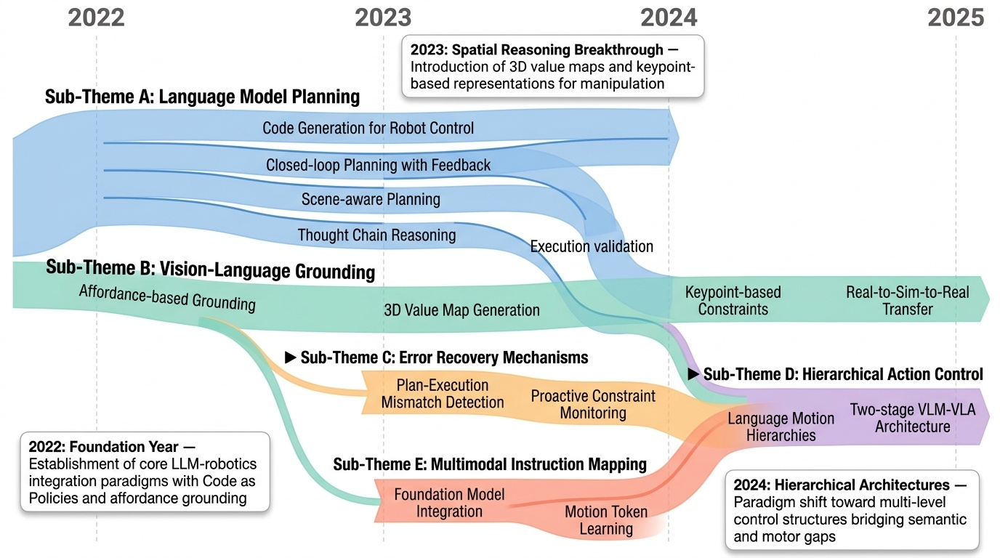
Category Overview
이 카테고리는 로봇이 자연언어 명령어(natural language instructions)를 이해하고 실제 물리적 환경에서 실행하는 기술을 다룬다. 대규모 언어모델(Large Language Model, LLM)과 비전 시스템을 결합하여 로봇의 지각-판단-행동(perception-decision-action) 파이프라인을 구성하는 연구들이 주를 이룬다[1334][1369][1434]. 계층적 추상화(hierarchical abstraction)를 통해 고수준의 의도(high-level intent)를 저수준의 제어 신호(low-level control signal)로 변환하는 방법들이 제시되며[1556][1422], 시각 기반 표현학습과 공간-시간 추론(spatio-temporal reasoning)을 활용한 조작 학습(manipulation learning) 기법들도 포함된다[1529][1505]. 실제 환경 적응(real-world adaptation)을 위해 시뮬레이션-현실 전이(sim-to-real transfer)와 오류 복구 메커니즘(error recovery mechanism)을 통합한 접근법들도 제안되고 있다[1297][1370]. 이러한 연구들은 일반화 가능한 지능형 로봇 시스템(embodied AI agent) 개발의 핵심 기술을 형성하고 있다.
⚠ 갭: 모호하거나 불완전한 인간 지시에 대한 강건성과 대화적 명확화 능력이 부족하다.
🏛 정책: 인간-로봇 상호작용의 자연스러움과 안전성을 보장하는 인터페이스 표준화가 필요하다.
A Real-to-Sim-to-Real Approach to Robotic Manipulation with VLM-Generated Iterative Keypoint Rewards

Fig. 1: Capabilities of Our Framework. IKER is designed to han-
 *Fig. 2: Framework Overview. Iterative Keypoint Reward (IKER) is a visually grounded reward generated by Vision-Language * VLM을 활용하여 RGB-D 관찰과 자연어 지시로부터 keypoint 기반 reward 함수(IKER)를 동적으로 생성하고, real-to-sim-to-real 루프를 통해 로봇 조작 정책을 학습 및 배포하는 프레임워크이다.
이 논문은 VLM의 시각적 이해와 RL의 최적화를 real-to-sim-to-real 루프로 통합하여 개방형 환경에서의 적응적 다단계 로봇 조작을 달성하는 창의적이고 실용적인 접근법을 제시한다. 반복적 reward 개선과 환경 피드백 기반 동적 계획이 핵심 강점이며, 다양한 실제 작업 시연을 통해 효과성을 입증했다.
CANVAS: Commonsense-Aware Navigation System for Intuitive Human-Robot Interaction

Fig. 1: Humans often give abstract navigation directions using simple instruction, relying on the recipient’s commonsens
 *Fig. 1: Humans often give abstract navigation directions using simple instruction, relying on the recipient’s commonsens* CANVAS는 모호하거나 잡음이 있는 인간의 언어 및 시각적 지시(스케치, 텍스트)를 다중모드 입력으로 받아 상식적 이해를 바탕으로 로봇이 인간의 기대에 맞게 네비게이션을 수행하도록 하는 임베딩 러닝 기반 프레임워크이다.
CANVAS는 추상적이고 잡음이 있는 인간 지시를 상식 기반으로 해석하여 로봇 네비게이션을 수행하는 혁신적인 프레임워크이며, 대규모 COMMAND 데이터셋과 함께 강력한 성능(특히 어려운 환경에서 67% vs 0%), 그리고 우수한 Sim2Real 전이(69%)를 입증함으로써 인간-로봇 상호작용의 자연성 향상과 현실 적용 가능성을 효과적으로 제시한다.
Code as Policies: Language Model Programs for Embodied Control

Fig. 1: Given examples (via few-shot prompting), robots can use code-writing
 *Fig. 1: Given examples (via few-shot prompting), robots can use code-writing* Large Language Model(LLM)을 활용하여 자연어 명령을 로봇 정책 코드로 직접 변환하는 "Code as Policies" 방식을 제안하며, few-shot prompting과 hierarchical code-gen을 통해 복잡한 로봇 행동을 실시간으로 생성한다.
이 논문은 LLM을 로봇 정책 생성에 직접 적용하는 창의적인 방식을 제시하며, hierarchical code-gen을 통한 성능 개선과 다양한 실제 로봇 플랫폼에서의 검증으로 강한 임팩트를 가진다. 다만 생성 코드의 안정성 검증과 실시간 성능 평가가 보완되면 더욱 완성도 높은 연구가 될 것이다.
Code-as-Monitor: Constraint-aware Visual Programming for Reactive and Proactive Robotic Failure Detection

Figure 1. For the task “Move the pan with lobster to the stove without losing the lobster”, (a) reactive failure detecti
 *Figure 2. Overview of Code-as-Monitor. Given task instructions and prior information, the Constraint Generator derives t* VLM을 활용하여 spatio-temporal constraint satisfaction 문제로 로봇 실패를 정식화하고, constraint elements를 추상화하여 VLM 생성 코드로 실시간 모니터링하는 Code-as-Monitor(CaM) 패러다임을 제안한다.
본 논문은 open-set 반응적/예방적 실패 감지를 처음으로 통합하는 Code-as-Monitor 패러다임을 제안하며, constraint elements라는 창의적 추상화로 VLM의 일반화 능력과 실시간 효율성의 상충을 해결한 우수한 기여이다. 다양한 환경과 로봇 플랫폼에서의 광범위한 검증과 명확한 프레임워크 설계로 높은 가치를 지닌다.
Do As I Can, Not As I Say: Grounding Language in Robotic Affordances

Figure 1: LLMs have not interacted with their environment and observed the outcome of their responses, and
 *Figure 1: LLMs have not interacted with their environment and observed the outcome of their responses, and* Large Language Models(LLM)의 의미론적 지식과 로봇의 실행 가능한 스킬을 결합하여, LLM을 affordance function으로 grounding함으로써 자연어 명령을 실제 로봇 행동으로 변환한다.
LLM과 로봇의 embodied skills을 결합하는 원칙적이고 효과적인 방법을 제시하며, 실세계 검증을 통해 자연어 기반 로봇 제어의 실용성을 입증한 영향력 높은 연구이다.
DoReMi: Grounding Language Model by Detecting and Recovering from Plan-Execution Misalignment

Fig. 1: Illustration of our motivation. Previous works use LLM to generate only high-level textual plans. Therefore, Low
 *Fig. 1: Illustration of our motivation. Previous works use LLM to generate only high-level textual plans. Therefore, Low* DoReMi는 LLM으로 고수준 계획과 실행 제약조건을 동시에 생성하고, VLM으로 실행 중 제약 위반을 지속적으로 감지하여 계획-실행 불일치를 즉시 탐지하고 복구하는 로봇 작업 프레임워크이다.
DoReMi는 LLM과 VLM을 창의적으로 결합하여 로봇 작업의 계획-실행 불일치 문제를 즉시 감지하고 복구하는 실용적인 프레임워크를 제시했으며, 명확한 동기, 체계적인 방법론, 견실한 실험을 통해 높은 학술적 가치와 로봇 제어 분야의 실질적 기여를 입증했다.
Hi Robot: Open-Ended Instruction Following with Hierarchical Vision-Language-Action Models

Figure 1: Open-ended instruction following. Hi Robot enables robots to follow multi-stage instructions, adapt to real-ti
 *Figure 1: Open-ended instruction following. Hi Robot enables robots to follow multi-stage instructions, adapt to real-ti* Hi Robot는 계층적 vision-language model 구조를 통해 로봇이 복잡한 자연어 지시사항과 실시간 피드백을 처리하여 개방형 과제를 수행할 수 있도록 하는 시스템이다. 고수준 VLM이 복잡한 프롬프트를 해석하여 원자적 명령어를 생성하고, VLA 정책이 이를 실행하는 두 단계 계층 구조를 제안한다.
Hi Robot은 계층적 VLM-VLA 구조와 합성 프롬프트 생성을 통해 로봇의 복잡한 지시 따르기와 실시간 피드백 통합 능력을 크게 향상시킨 중요한 기여이다. 다양한 플랫폼에서의 실험 검증과 기존 방법 대비 우수한 성능을 보여주지만, 합성 데이터의 품질, 저수준 정책의 한계, 계산 비용 등에 대한 개선이 필요하다.
Inner Monologue: Embodied Reasoning through Planning with Language Models

Figure 1: Inner Monologue enables grounded closed-loop feedback for robot planning with large language models
 *Figure 1: Inner Monologue enables grounded closed-loop feedback for robot planning with large language models* LLM을 로봇 제어에 활용할 때, 환경 피드백을 자연어로 주입하여 LLM이 '내적 독백(inner monologue)'을 형성하게 함으로써 폐루프 계획 및 추론을 가능하게 한다. 추가 학습 없이 프롬프팅만으로 복잡한 장기 조작 작업을 수행할 수 있음을 보여준다.
본 논문은 LLM 기반 로봇 계획에 폐루프 피드백을 자연어로 통합하는 창의적이고 실용적인 접근을 제시하며, 추가 학습 없이도 복잡한 실제 작업을 수행 가능함을 다수의 실험으로 입증했다. 다만 perception 피드백의 품질 의존성과 LLM의 고비용·지연 문제가 추후 개선 과제이다.
Instruct2Act: Mapping Multi-modality Instructions to Robotic Actions with Large Language Model

Figure 1:
 *Figure 1:* 본 논문은 Large Language Model(LLM)을 활용하여 자연언어 및 시각적 지시사항을 로봇 조작 작업의 순차적 행동으로 매핑하는 Instruct2Act 프레임워크를 제안한다. SAM과 CLIP 같은 기초 모델들을 API로 활용하여 인식, 계획, 행동 루프를 구현하는 Python 프로그램을 생성한다.
본 논문은 LLM과 시각 기초 모델을 효과적으로 결합하여 멀티모달 지시사항을 로봇 행동으로 매핑하는 실용적인 프레임워크를 제시하며, 학습 없는 제로샷 방식으로 우수한 성능을 달성했다는 점에서 의의가 있다. 다만 평가 범위가 제한적이고 오류 전파 메커니즘에 대한 분석이 보완되어야 할 것으로 판단된다.
Moto: Latent Motion Token as the Bridging Language for Learning Robot Manipulation from Videos

Figure 1. The overview of Moto, which utilizes Latent Motion Tokens as a bridging “language” for autoregressive pretrain
 *Figure 2. Overview of Moto’s three training stages: (1) The Latent Motion Tokenizer encodes key visual motions between v* 이 논문은 비디오에서 비지도 학습으로 latent motion token을 학습하여 로봇 조작 태스크를 위한 사전학습의 중간 표현으로 사용하고, Moto-GPT를 통해 motion token의 자동회귀 예측으로 motion prior를 학습한 후 co-fine-tuning으로 실제 로봇 제어로 전이하는 방법을 제안한다.
이 논문은 latent motion token을 통해 비디오 사전학습과 로봇 제어를 우아하게 연결하는 창의적인 접근을 제시하며, motion prior의 학습과 전이에 대한 명확한 검증을 제공한다. 데이터 효율성과 해석 가능성 측면에서 로봇 학습에 의미 있는 기여를 하지만, 실제 로봇 환경에서의 광범위한 검증과 다양한 조작 복잡도에 대한 일반화 능력 증명이 필요하다.
Open-vocabulary Queryable Scene Representations for Real World Planning

Fig. 1: NLMap + SayCan overview. We propose an open-vocabulary and
 *Fig. 1: NLMap + SayCan overview. We propose an open-vocabulary and* NLMap은 Visual Language Model을 기반으로 한 개방형 어휘의 쿼리 가능한 장면 표현을 제안하여, LLM 기반 로봇 플래너가 실제 환경의 객체를 인식하고 위치를 파악한 후 맥락-조건부 계획을 수립할 수 있도록 한다.
NLMap은 VLM 기반의 개방형 어휘 장면 표현을 LLM 플래너와 효과적으로 통합하여 로봇이 동적으로 환경 맥락을 인식하고 계획할 수 있도록 한 혁신적인 연구이며, 실제 로봇 실험에서도 기존 방법으로 불가능했던 작업들을 성공적으로 수행하여 실용적 가치를 입증했다.
ReKep: Spatio-Temporal Reasoning of Relational Keypoint Constraints for Robotic Manipulation

Figure 1: Relational Keypoint Constraints (ReKep) specify diverse manipulation behaviors as an opti-
 *Figure 1: Relational Keypoint Constraints (ReKep) specify diverse manipulation behaviors as an opti-* ReKep는 로봇 조작 작업을 3D 키포인트를 입력으로 하는 Python 함수 형태의 제약 조건으로 표현하며, 대규모 비전 모델과 비전-언어 모델을 활용하여 자동으로 이러한 제약을 생성하고 계층적 최적화로 실시간 로봇 제어를 실현한다.
ReKep은 keypoint 기반 제약 표현과 foundation model 기반 자동 생성을 결합하여 일반화 가능하고 실시간 실행 가능한 로봇 조작 시스템을 제시한다. 다양한 작업 실연과 두 가지 로봇 플랫폼 구현으로 실질적 가치를 입증하며, 작업별 데이터 없는 generalist 로봇 구현의 중요한 진전을 나타낸다.
RT-H: Action Hierarchies Using Language

Fig. 1: Given a task in language like “close the pistachio jar” and an image of the scene, RT-H utilizes a Vision Langua
 *Fig. 1: Given a task in language like “close the pistachio jar” and an image of the scene, RT-H utilizes a Vision Langua* RT-H는 로봇 모방 학습에서 언어 기반 행동 계층 구조를 제안하여, 고수준 작업 설명과 저수준 로봇 액션 사이의 중간 단계로 '언어 모션(language motion)'을 예측함으로써 다양한 작업 간 데이터 공유를 개선한다.
RT-H는 언어를 활용한 행동 계층 구조라는 우아한 아이디어를 통해 멀티태스크 로봇 학습의 데이터 효율성을 크게 향상시키며, 인간 개입의 새로운 패러다임까지 제시하여 실제 로봇 시스템에서의 적용 가능성이 높다.
ThinkBot: Embodied Instruction Following with Thought Chain Reasoning

 *Figure 2. The overall pipeline of ThinkBot, which consists of an instruction completer and an object localizer. The inst* ThinkBot은 희소한 인간 지시문에서 사고 체인 추론을 통해 누락된 행동 설명을 복구하여 embodied instruction following 작업을 수행하는 에이전트를 제안한다. 대규모 언어 모델 기반 instruction completer와 multimodal object localizer로 구성되어 일관된 지시문을 따라 복잡한 목표를 완수할 수 있다.
ThinkBot은 희소한 지시문의 일관성 문제를 사고 체인 추론으로 우아하게 해결하는 창의적인 접근법을 제시하며, ALFRED 벤치마크에서 우수한 실험 결과를 달성했다. 다만 실제 로봇 환경으로의 검증과 모듈 간 정보 통합 최적화가 향후 과제이다.
VoxPoser: Composable 3D Value Maps for Robotic Manipulation with Language Models

Figure 1: VOXPOSER extracts language-conditioned affordances and constraints from LLMs and grounds
 *Figure 1: VOXPOSER extracts language-conditioned affordances and constraints from LLMs and grounds* LLM의 affordance 추론 능력과 code-writing 능력을 활용하여 3D value map을 생성하고, 이를 model-based planning으로 로봇 trajectory 합성에 활용하는 zero-shot 로봇 조작 방법론.
VoxPoser는 LLM의 높은 수준 추론과 code 생성 능력을 3D 로봇 조작에 처음으로 효과적으로 연결한 혁신적 방법으로, zero-shot 일반화와 실제 로봇 적용 가능성을 보여주는 의미 있는 기여이다. 다만 affordance 정확성, 장기 계획, 계산 효율성 측면의 개선이 필요하다.
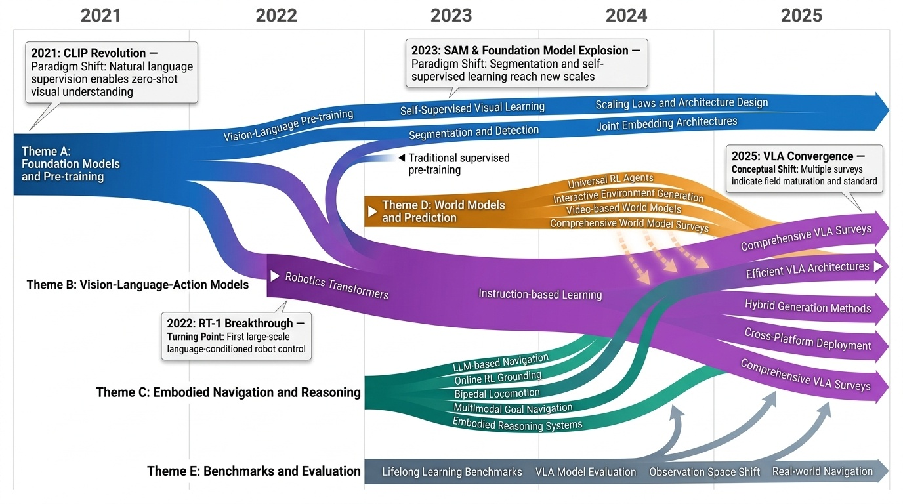
Category Overview
# Robot Learning Architectures 카테고리 개요 로봇 학습 아키텍처(Robot Learning Architectures)는 물리적 에이전트가 복잡한 환경에서 자율적으로 행동하도록 하는 기계학습 시스템의 설계 및 구현에 관한 분야이다. 이 카테고리는 Vision-Language-Action Models, Foundation Models and Pre-training, Embodied Navigation and Reasoning, World Models and Prediction, Benchmarks and Evaluation의 5개 하위 주제로 구성되어 있다. Vision-Language-Action(VLA) 모델은 시각 정보와 언어 이해를 결합하여 로봇의 행동을 직접 생성하는 통합 학습 프레임워크를 제시한다[1307], [1346], [1429]. 이러한 모델들은 자율주행[1300]과 멀티모달 대형 모델(Embodied Multimodal Large Models)[1388] 개발을 통해 실제 로봇 시스템에 적용되고 있다. Foundation Models과 Pre-training은 대규모 데이터로부터 학습된 기초 모델을 로봇 학습에 활용하는 접근법으로, CLIP 기반 시각 특징 학습[1454], [1415]과 강화된 embodied reasoning[1380]을 포함한다. 이러한 기초 모델들은 로봇공학 분야에 광범위한 변화를 가져오고 있으며[1397], 빠른 인식과 느린 추론을 통합하는 이중 시스템 구조[1391]로 발전하고 있다. Embodied Navigation and Reasoning은 로봇이 환경을 이해하고 탐색하며 추론하는 능력을 다룬다[1303], [1416]. World Models and Prediction 분야는 로봇이 미래 상태를 예측하고 환경의 동역학을 학습하는 메커니즘을 제공하며[1292], [1407], [1472], 생성적 인터랙티브 환경(Generative Interactive Environments)을 통해 시뮬레이션 환경에서의 학습을 가능하게 한다. Benchmarks and Evaluation은 로봇 학습 시스템의 성능을 객관적으로 평가하기 위한 표준화된 평가 지표와 데이터셋을 제공한다[1322], [1457]. 이산 연속 제어(Bipedal Locomotion)[1328]와 3D 흐름 기반 정책 학습[1395]에 대한 벤치마크는 로봇의 운동 제어 능력을 평가하는 데 중요한 역할을 한다.
- Vision-Language-Action Models: # Vision-Language-Action Models (시각-언어-행동 모델) Vision-Language-Action Models(시각-언어-행동 모델)은 시각 정보와 언어 이해를 결합하여 로봇이나 자율 주행 시스템이 실제 행동을 수행하도록 하는 통합 학습 아키텍처입니다. [1300]과 [1307]에서 다루듯이, 이러한 모델들은 멀티모달 입력을 처리하여 복잡한 환경에서의 의사결정과 제어를 가능하게 합니다. [1346]과 [1388]에서 보여주는 바와 같이, 최근 연구들은 데이터셋 확장과 대규모 언어 모델의 통합을 통해 모델의 일반화 성능을 향상시키고 있습니다. [1429]와 [1479]에서 제시하는 Diffusion 기반 접근법과 동적 계층 스킵(dynamic layer-skipping) 기술은 계산 효율성을 개선하면서도 높은 정확도를 유지합니다. [1495]와 같은 소규모 오픈소스 모델의 개발은 Vision-Language-Action 모델의 접근성을 확대하고 실제 로봇 응용에서의 활용성을 증대시키고 있습니다.
- Foundation Models and Pre-training: Foundation Models and Pre-training은 로봇 학습에 있어서 대규모 자기지도 학습(Self-Supervised Learning)과 전이학습(Transfer Learning)의 기반이 되는 기술 분야입니다. 이 분야의 연구들은 시각(Vision), 언어(Language), 멀티모달(Multimodal) 등 다양한 모달리티에서 강건한 특성(Robust Features)을 학습하는 방법들을 다룹니다. [1365]의 DINOv2와 [1454]의 자연어 지도학습 기반 시각 모델은 감독 없이도 전이 가능한 특성을 효과적으로 학습할 수 있음을 보여줍니다. [1397]과 [1511]과 같은 리뷰 논문들은 파운데이션 모델이 로봇 지각(Robot Perception), 제어(Control), 계획(Planning) 등 다양한 태스크에 어떻게 적용될 수 있는지 종합적으로 분석합니다. [1493]의 신경망 스케일링 법칙(Neural Scaling Laws) 연구는 모델 크기와 데이터, 계산량 간의 관계를 규명하여 효율적인 로봇 학습 시스템 설계를 가능하게 합니다.
- Embodied Navigation and Reasoning: Embodied Navigation and Reasoning은 로봇이 물리적 환경에서 자율적으로 이동하면서 추론 능력을 발휘하는 분야입니다. 이 하위 범주는 대규모 언어 모델(Large Language Models)의 발전과 심화 강화 학습(Deep Reinforcement Learning) 기법을 활용하여 로봇의 네비게이션 성능을 향상시키는 연구들을 포함합니다[1303][1328]. 특히 구현된 추론(Embodied Reasoning)과 상호작용 환경(Interactive Environments)에서의 기초화(Grounding) 문제는 로봇이 인지 능력을 실제 행동으로 전환하는 데 중요한 역할을 합니다[1380][1416]. 다중 모달 인식(Multimodal Perception)을 통해 로봇은 시각, 언어, 센서 데이터를 통합하여 목표 지향적 네비게이션(Goal-oriented Navigation)을 수행할 수 있습니다[1486]. 이러한 기술들의 통합은 가정용 로봇부터 산업용 로봇까지 다양한 실제 응용 분야에서 로봇의 자율성과 지능성을 높이는 데 기여하고 있습니다.
- World Models and Prediction: 세계 모델(World Models)과 예측은 로봇 학습 아키텍처에서 환경의 동역학을 이해하고 미래 상태를 예측하는 핵심 기술입니다. [1292]에서 제시된 바와 같이, 구현된 AI(Embodied AI)를 위한 종합적인 세계 모델 기술은 로봇이 물리적 환경과 상호작용하면서 학습하는 능력을 향상시킵니다. [1407]에서 소개된 생성형 상호작용 환경(Generative Interactive Environments)은 로봇이 다양한 시나리오에서 행동의 결과를 시뮬레이션하고 학습할 수 있게 합니다. [1472]에서 강조하는 바와 같이, 다양한 도메인에서 세계 모델을 습득하는 것은 로봇의 범용성과 적응력을 크게 향상시킵니다. 자기지도학습(Self-Supervised Learning) 기반의 비디오 모델인 V-JEPA 2 [1603]는 대규모 데이터에서 풍부한 시각 표현을 학습하여 로봇의 이해와 의사결정 능력을 강화합니다.
- Benchmarks and Evaluation: 로봇 학습 아키텍처 분야에서 벤치마크와 평가(Benchmarks and Evaluation)는 알고리즘의 성능을 객관적으로 측정하고 비교하기 위한 필수적인 요소입니다. BOSS(Benchmark for Observation Space Shift)는 장시간 수행되는 작업에서 관찰 공간의 변화에 대한 로봇의 강건성을 평가하는 기준을 제시하며[1322], LIBERO는 평생 학습(Lifelong Robot Learning) 환경에서 지식 전이(Knowledge Transfer) 능력을 벤치마킹합니다[1457]. OpenBench와 VLABench 같은 대규모 벤치마크들은 각각 의미론적 네비게이션(Semantic Navigation)과 언어 조건부 조작(Language-Conditioned Manipulation) 작업에 대한 표준화된 평가 기준을 제공함으로써, 로봇 학습 커뮤니티의 발전을 촉진합니다[1507][1621]. 이러한 벤치마크들은 서로 다른 방법론들 간의 공정한 비교를 가능하게 하며, 로봇 학습 연구의 진전을 측정하는 객관적인 척도로 기능합니다.
⚠ 갭: 다양한 로봇 플랫폼 간 호환성과 확장성을 보장하는 표준 아키텍처가 부족하다.
🏛 정책: 로봇 생태계의 상호운용성 확보를 위한 표준화와 개방형 플랫폼 구축이 필요하다.
A Comprehensive Survey on World Models for Embodied AI

Fig. 1. Structure of this survey. The figure classifies world models along three axes and illustrates representative met
 *Fig. 1. Structure of this survey. The figure classifies world models along three axes and illustrates representative met* Embodied AI를 위한 World Models에 대한 포괄적 조사로, Functionality, Temporal Modeling, Spatial Representation의 세 축 분류체계를 제안하여 환경 동역학을 캡처하고 예측하는 내부 시뮬레이터를 체계적으로 정리한다.
이 조사는 world models 분야의 산재된 문헌을 통합하는 체계적인 분류체계와 수학적 기초를 제시하여, embodied AI 연구의 방향성 제시와 평가 표준화에 기여할 잠재력이 높다. 다만 새로운 실험적 증거나 알고리즘 혁신이 없어 기여도가 구조화와 정리에 한정되며, 제시된 체계가 빠르게 변화하는 생성 모델 환경에서 장기적 유용성을 갖기 위해서는 후속 벤치마킹 및 메트릭 개발이 필수적이다.
Genie: Generative Interactive Environments

Figure 1 | A whole new world: Genie is capable of converting a variety of different prompts into
 *Figure 1 | A whole new world: Genie is capable of converting a variety of different prompts into* Genie는 인터넷 비디오로부터 완전히 비감독 방식으로 학습된 첫 번째 생성형 인터랙티브 환경으로, 텍스트, 이미지, 스케치 등 다양한 프롬프트로부터 프레임 단위로 제어 가능한 가상 세계를 생성할 수 있다.
Genie는 비감독 행동 학습과 인터랙티브 환경 생성의 새로운 패러다임을 제시하는 매우 혁신적인 연구로, Foundation Model 규모에서 프레임 단위 제어성을 달성하며 미래의 일반화된 에이전트 훈련을 위한 중요한 기초를 마련한다.
Mastering Diverse Domains through World Models

Figure 1: Benchmark summary. a, Using fixed hyperparameters across all domains, Dreamer
 *Figure 1: Benchmark summary. a, Using fixed hyperparameters across all domains, Dreamer* DreamerV3는 world model을 학습하여 고정된 하이퍼파라미터로 150개 이상의 다양한 도메인에서 전문화된 알고리즘을 능가하는 범용 RL 알고리즘이다. normalization, balancing, transformation 기반의 robustness 기법으로 도메인 간 안정적 학습을 실현한다.
DreamerV3는 world model 기반 RL의 robustness 문제를 해결하여 단일 설정으로 다중 도메인을 마스터하는 실질적 성과를 달성했다. 특히 Minecraft diamond 수집은 이 분야의 오랜 미해결 과제를 처음으로 정복한 것으로, RL의 실용적 적용 범위를 크게 확장한 중요한 기여다.
V-JEPA 2: Self-Supervised Video Models Enable Understanding, Prediction and Planning

Figure 1 V-JEPA 2 Overview. Leveraging 1M hours of internet-scale video and 1M images, we pretrain the V-JEPA 2
 *Figure 1 V-JEPA 2 Overview. Leveraging 1M hours of internet-scale video and 1M images, we pretrain the V-JEPA 2* V-JEPA 2는 1백만 시간 이상의 인터넷 규모 비디오로 사전학습한 자기지도학습 비디오 모델로, 비디오 이해·예측·로봇 계획을 모두 가능하게 한다.
V-JEPA 2는 인터넷 규모 자기지도학습과 최소한의 로봇 상호작용 데이터를 결합하여 비디오 이해, 예측, 실제 로봇 계획을 모두 달성한 획기적 연구로, 세계 모델 기반 일반 에이전트 개발의 새로운 방향을 제시한다.
A Survey on Vision-Language-Action Models for Autonomous Driving

Figure 1. Comparisons of autonomous driving paradigms. (a) End-to-end driving offers direct perception-to-control mappin
 *Figure 1. Comparisons of autonomous driving paradigms. (a) End-to-end driving offers direct perception-to-control mappin* 본 논문은 Vision-Language-Action (VLA) 모델을 자율주행에 적용하는 최초의 종합 서베이로, 20개 이상의 대표 모델을 분석하고 시각 인식, 자연어 이해, 제어를 통합하는 패러다임의 발전 과정을 추적한다.
본 논문은 VLA4AD 분야의 최초의 종합 서베이로서 아키텍처, 진화 과정, 모델 비교를 체계적으로 정리하고 개방 과제를 명확히 정의함으로써, 설명가능하고 견고한 자율주행 시스템 개발을 위한 중요한 참고 자료를 제공한다.
An Anatomy of Vision-Language-Action Models: From Modules to Milestones and Challenges

Fig. 1: The structure of this survey in a pyramid format. Section 2 lays
 *Fig. 1: The structure of this survey in a pyramid format. Section 2 lays* Vision-Language-Action (VLA) 모델의 구조와 발전을 체계적으로 분석하는 종합 서베이로, 기본 모듈부터 역사적 마일스톤을 거쳐 5가지 핵심 과제까지 단계적으로 설명한다.
이 서베이는 빠르게 성장하는 VLA 분야에서 기존 단편적 가이드의 한계를 극복하고, 초보자부터 전문가까지 포용할 수 있는 체계적 학습 경로와 심층적 문제 분석을 제공하여 필드의 리더맵 역할을 할 수 있는 가치 있는 자료이다.
Cross-Platform Scaling of Vision-Language-Action Models from Edge to Cloud GPUs

Fig. 1. Peak VRAM usage for each evaluated VLA model
 *Fig. 1. Peak VRAM usage for each evaluated VLA model* Vision-Language-Action (VLA) 모델의 성능을 엣지 디바이스부터 데이터센터 GPU까지 다양한 하드웨어 플랫폼에서 체계적으로 평가하여, 아키텍처와 하드웨어 제약 조건에 따른 정확도, 레이턴시, 처리량, 메모리 사용량의 확장 추이를 밝혀낸다.
본 논문은 VLA 모델의 크로스 플랫폼 성능 확장을 체계적으로 분석한 중요한 벤치마크 연구로, 로봇 배포 시나리오에 맞는 하드웨어 선택과 모델 최적화를 위한 실용적인 통찰력을 제공한다. 엣지 디바이스의 경쟁력을 입증함으로써 로봇 시스템 설계에 대한 새로운 관점을 제시한다.
Exploring Embodied Multimodal Large Models: Development, Datasets, and Future Directions

Figure 1: A timeline of research progress in the field of Embodied Perception, Navigation
 *Figure 1: A timeline of research progress in the field of Embodied Perception, Navigation* Embodied Multimodal Large Models (EMLMs)는 Large Language Models, Large Vision Models 등의 기초 모델들을 결합하여 지각, 인지, 행동을 물리적 환경에서 통합하는 체계적인 종합 리뷰이다. 본 논문은 300개 논문을 분석하여 EMLMs의 발전, 데이터셋, 및 미래 방향에 대한 첫 번째 체계적 분석을 제공한다.
본 리뷰는 EMLMs 분야의 첫 번째 체계적 종합 분석으로서, foundational models부터 embodied tasks까지 full-stack을 다루며 최신 연구 동향을 포괄적으로 정리했다. 명확한 구조와 풍부한 사례로 이 급속히 발전하는 분야의 현황과 미래 방향을 제시하는 매우 가치 있는 리뷰이다.
FlowPolicy: Enabling Fast and Robust 3D Flow-based Policy via Consistency Flow Matching for Robot Manipulation

Figure 1: Comparison of FlowPolicy with the state-of-the-
 *Figure 2: Overall pipeline. The top section visualizes FlowPolicy, where a straight-line flow enables the fastest data t* FlowPolicy는 Consistency Flow Matching을 기반으로 3D point cloud 조건에서 로봇 조작 정책을 단일 추론 단계로 생성하는 프레임워크로, 속도를 7배 향상시키면서 경쟁력 있는 성능을 유지한다.
FlowPolicy는 consistency flow matching을 로봇 조작에 처음 적용하여 단일 추론 단계로 7배 빠른 정책 생성을 달성하는 독창적인 접근법이며, 실시간 로봇 제어의 실용성 향상에 중요한 기여를 한다.
HybridVLA: Collaborative Diffusion and Autoregression in a Unified Vision-Language-Action Model

Figure 1: (a) Unlike recent diffusion-based VLA methods [12, 13, 14] that attach a separate diffusion
 *Figure 1: (a) Unlike recent diffusion-based VLA methods [12, 13, 14] that attach a separate diffusion* HybridVLA는 diffusion 기반 action 예측의 연속성과 autoregressive VLM의 추론 능력을 단일 LLM 내에서 통합하는 unified vision-language-action 모델이다. Collaborative training recipe와 adaptive action ensemble mechanism을 통해 두 생성 패러다임의 상호 강화를 실현한다.
HybridVLA는 diffusion과 autoregressive 기반 action 생성의 근본적 한계를 unified architecture와 collaborative training을 통해 우아하게 해결하며, 광범위한 실험과 state-of-the-art 성과를 통해 로봇 조작 분야에 실질적인 진전을 제시하는 견고한 논문이다.
MoLe-VLA: Dynamic Layer-skipping Vision Language Action Model via Mixture-of-Layers for Efficient Robot Manipulation

Figure 1. Overview of our proposed MoLe-VLA: Our proposed framework integrates dynamic layer activation, a novel Spatial
 *Figure 1. Overview of our proposed MoLe-VLA: Our proposed framework integrates dynamic layer activation, a novel Spatial* MoLe-VLA는 Mixture-of-Layers 아키텍처와 Spatial-Temporal Aware Router(STAR)를 통해 LLM의 불필요한 레이어를 동적으로 스킵하여 로봇 조작 작업의 계산 효율을 5.6배 향상시키면서 8% 성능 개선을 달성한다.
MoLe-VLA는 신경과학 이론과 효율적인 AI 기술을 혁신적으로 결합하여 로봇 제어의 계산-성능 트레이드오프 문제를 크게 개선한 우수한 연구이다. 공간-시간 인식 라우팅과 인지 기반 지식 증류의 설계가 독창적이며, 시뮬레이션과 실제 환경에서의 실증 결과가 설득력 있다.
NORA: A Small Open-Sourced Generalist Vision Language Action Model for Embodied Tasks

Figure 1: The overall architecture and inference flow of NORA.
 *Figure 1: The overall architecture and inference flow of NORA.* NORA는 3B 파라미터의 경량 Vision-Language-Action 모델로, 기존 7B 이상의 대규모 VLA 모델보다 계산 효율을 크게 개선하면서도 실시간 로봇 제어 성능을 유지한다.
NORA는 경량 VLA 모델의 실용적 필요성을 잘 해결한 의미 있는 기여로, 3B 파라미터로 대규모 모델 대비 우수한 성능을 달성하면서 실시간 로봇 제어를 가능하게 한다. 오픈 소스 공개로 후속 연구를 촉진할 것으로 예상된다.
RLRC: Reinforcement Learning-based Recovery for Compressed Vision-Language-Action Models

Fig. 1 : RLRC substantially compresses the VLA, leading to
 *Fig. 1 : RLRC substantially compresses the VLA, leading to* Vision-Language-Action 모델의 실제 배포를 위해 structured pruning, SFT/RL 기반 성능 복구, 그리고 양자화를 결합한 RLRC 압축 방법을 제안하여 8배의 메모리 감소와 2.3배의 처리량 향상을 달성한다.
RLRC는 VLA 압축을 위한 실용적이고 포괄적인 파이프라인을 제시하며, RL 기반 성능 복구라는 창의적 접근으로 기존 압축 방법을 능가한다. 자원 제약 로봇 환경에서의 VLA 배포 가능성을 크게 향상시킨다.
Robotic Skill Acquisition via Instruction Augmentation with Vision-Language Models

Fig. 1: DIAL consists of three steps: (1) Contrastive fine-tuning of a vision-language model (VLM) such as CLIP [39] on
 *Fig. 1: DIAL consists of three steps: (1) Contrastive fine-tuning of a vision-language model (VLM) such as CLIP [39] on * Vision-Language Model (CLIP)을 미세조정하여 주석이 없는 대규모 로봇 조작 데이터셋에 자동으로 자연어 명령어를 생성하고, 이를 통해 언어 조건부 정책을 학습하는 DIAL 방법을 제안한다.
VLM을 데이터 주석 도구로 활용하는 실용적이고 확장 가능한 방법을 제시하며, 1,300회 이상의 실제 로봇 평가를 통해 효과를 입증했다. 로봇 학습의 비용 효율성을 크게 향상시킬 수 있는 가치 있는 기여이다.
RT-1: Robotics Transformer for Real-World Control at Scale

Figure 1: A high-level overview of RT-1’s architecture, dataset, and evaluation.
 *Figure 1: A high-level overview of RT-1’s architecture, dataset, and evaluation.* Robotics Transformer (RT-1)는 대규모 다양한 실제 로봇 데이터(130k 에피소드, 700+ 태스크)를 학습하여 새로운 태스크와 환경에 대한 뛰어난 일반화 능력을 보이는 언어-조건부 로봇 제어 모델이다.
RT-1은 대규모 실제 로봇 데이터와 효율적인 Transformer 아키텍처를 결합하여 로봇 제어에서 전례 없는 규모의 다중 태스크 일반화를 달성한 획기적인 연구로, 실제 로봇 시스템에서의 강건하고 일반화 가능한 제어의 가능성을 명확히 입증했다.
RT-2: Vision-Language-Action Models Transfer Web Knowledge to Robotic Control

Figure 1 | RT-2 overview: we represent robot actions as another language, which can be cast into text tokens and
 *Figure 1 | RT-2 overview: we represent robot actions as another language, which can be cast into text tokens and* 인터넷 규모의 데이터로 학습한 vision-language 모델을 로봇 제어에 직접 통합하여 end-to-end 로봇 정책을 학습하는 RT-2 모델을 제안한다. 로봇 액션을 텍스트 토큰으로 표현하여 VLM의 사전학습 이점을 활용하면서도 저수준의 로봇 제어를 가능하게 한다.
RT-2는 웹 규모 vision-language 모델의 의미론적 지식을 로봇 제어에 직접 통합하는 우아하고 효과적인 방법을 제시하며, 광범위한 실험을 통해 미학습 객체 일반화와 의도한 추론 능력을 입증한다. 로봇 공학에서 대규모 사전학습 활용의 새로운 패러다임을 제안한 것으로 산업적, 학문적 기여도가 크다.
Vision-Language-Action (VLA) Models: Concepts, Progress, Applications and Challenges
Vision-Language-Action (VLA) 모델은 시각 인식, 자연어 이해, 구체화된 행동을 단일 계산 프레임워크에서 통합하는 혁신적인 AI 접근법을 제시한다. 이 종합 리뷰는 지난 3년간 발표된 80개 이상의 VLA 모델을 분석하여 개념, 진전, 응용, 도전을 체계적으로 정리한다.
이 논문은 rapidly evolving VLA 분야에 대한 첫 번째 포괄적 종합 리뷰로서, 개념부터 응용까지 체계적으로 정리하고 실제 도전과제와 미래 방향을 명확히 제시한다. embodied AI와 로봇 공학의 발전을 위한 중요한 기초 참고 자료로서 높은 가치를 가진다.
Vision-Language-Action Models for Robotics: A Review Towards Real-World Applications
Vision-Language-Action (VLA) 모델이 로봇이 다양한 작업을 수행하도록 하는 통합 학습 방식에 대한 포괄적 리뷰로, 소프트웨어와 하드웨어 통합을 포함한 실제 배포 가이드를 제시한다.
이 종합 리뷰는 VLA 연구 분야의 현황을 체계적으로 정리하고 실제 로봇 시스템 배포를 위한 실무 가이드를 제공하여, 로봇공학 커뮤니티가 VLA를 효과적으로 적용하는 데 큰 가치를 제공한다.
Advances in Embodied Navigation Using Large Language Models: A Survey

Fig. 1: This presentation exhibit a temporal map depicting the works of embodied navigation from 2022 to 2024, and we
 *Fig. 1: This presentation exhibit a temporal map depicting the works of embodied navigation from 2022 to 2024, and we* 이 논문은 Large Language Models (LLMs)과 embodied intelligence의 융합에 초점을 맞춰 LLM 기반 navigation 모델들의 최신 동향을 종합적으로 조사하고, 기존 모델과 데이터셋의 장단점을 분석한 서베이이다.
이 논문은 빠르게 성장하는 LLM 기반 embodied navigation 분야에 대한 첫 번째 체계적 서베이로서, 현재까지의 연구 성과를 명확히 분류하고 미래 방향을 제시하는 중요한 기여를 한다. 다만, 기술적 깊이와 실제 구현상의 도전과제에 대한 더욱 구체적인 분석이 보강된다면 실무자들에게 더욱 유용한 자료가 될 것이다.
Deep Reinforcement Learning for Bipedal Locomotion: A Brief Survey

Fig. 1: Representative bipedal and humanoid robots illustrat-
 *Fig. 2: Classification of DRL-based control schemes. The approaches are broadly categorised into two main paradigms: end* 본 논문은 bipedal robot의 locomotion을 위한 Deep Reinforcement Learning(DRL) 기반 프레임워크를 체계적으로 분류, 비교, 분석하는 survey이며, end-to-end와 hierarchical 제어 방식으로 구분하여 각 프레임워크의 구성, 강점, 한계를 평가한다.
본 survey는 DRL 기반 bipedal locomotion 분야의 fragmented 연구를 체계적으로 정리하고 unified framework을 향한 명확한 research agenda를 제시하는 가치 있는 종합 분석이다. End-to-end와 hierarchical 분류 체계, learning paradigm 비교, hybrid 아키텍처 평가는 이 분야의 종사자들에게 실질적인 guidance를 제공하며, 향후 generalisable bipedal locomotion 개발의 기초를 마련한다.
Embodied-R1: Reinforced Embodied Reasoning for General Robotic Manipulation

Figure 1 Overview of the Embodied-R1 framework and its zero-shot manipulation performance.
 *Figure 1 Overview of the Embodied-R1 framework and its zero-shot manipulation performance.* Embodied-R1은 '포인팅'을 통일된 embodiment-agnostic 중간 표현으로 정의하고, Reinforced Fine-tuning(RFT)으로 훈련된 3B VLM으로서 로봇 조작의 perception-action gap을 효과적으로 극복한다.
Embodied-R1은 포인팅이라는 명확한 중간 표현과 RFT 기반 훈련 방식으로 embodied AI의 오래된 perception-action gap 문제에 우아한 해결책을 제시하며, 실제 로봇에서의 강력한 zero-shot 성능으로 그 실질적 가치를 입증한다.
Grounding Large Language Models in Interactive Environments with Online Reinforcement Learning

Figure 1: The GLAM method: we use an LLM as agent policy in an interactive textual RL
 *Figure 1: The GLAM method: we use an LLM as agent policy in an interactive textual RL* 본 논문은 Large Language Model(LLM)을 대화형 환경에서 agent policy로 사용하며 online Reinforcement Learning으로 점진적으로 업데이트하여 functional grounding을 달성하는 GLAM 방법을 제안한다. 텍스트 기반 BabyAI 환경에서 LLM의 표본 효율성, 일반화 능력, online learning의 영향을 실증적으로 검증한다.
본 논문은 LLM을 interactive environment에서 online RL로 grounding하는 중요한 첫 시도로서, 체계적인 실험과 명확한 분석을 통해 LLM 기반 policy의 sample efficiency 및 일반화 능력을 입증한다. 다만 텍스트 기반 제한 환경과 단일 모델 계열 평가라는 제약이 있으나, 공개 도구(Lamorel)와 함께 RL 커뮤니티에 기여할 가치 있는 연구이다.
Multimodal Perception for Goal-oriented Navigation: A Survey

Fig. 1: Timeline of the historical development of navigation tasks and their representative approaches. Different colors
 *Fig. 1: Timeline of the historical development of navigation tasks and their representative approaches. Different colors* 이 논문은 자율 네비게이션을 위한 멀티모달 인식 기법들을 inference domain이라는 통합 관점에서 조직화하고 분석하는 포괄적인 서베이로, 약 200개의 관련 논문을 검토하여 시각, 언어, 음향 정보를 활용한 네비게이션 접근법들의 공통 원리와 차이를 체계적으로 제시한다.
이 논문은 inference domain이라는 혁신적인 분석 틀을 통해 여러 네비게이션 과제를 통합적으로 이해할 수 있게 한 종합적이고 잘 구성된 서베이로, 분야의 역사적 발전과 현재 상황을 명확하게 제시하며 멀티모달 AI 네비게이션 연구의 미래 방향을 제시하는 데 큰 가치가 있다.
BOSS: Benchmark for Observation Space Shift in Long-Horizon Task

Fig. 1. The example illustrates how Observation Space Shift (OSS) occurs
 *Fig. 1. The example illustrates how Observation Space Shift (OSS) occurs* 로봇의 시각 기반 장기 작업 수행 시, 선행 스킬의 실행으로 인한 관찰 공간 변화(Observation Space Shift, OSS)가 후속 스킬의 성능을 심각하게 저하시키는 문제를 식별하고, 이를 평가하기 위한 BOSS 벤치마크를 제안한다.
본 논문은 시각 기반 로봇 학습에서 간과되어온 OSS 문제를 명확히 정의하고 체계적인 벤치마크를 제공함으로써 장기 작업 수행의 근본적 과제를 드러낸다. 데이터 증강의 한계를 증명하고 알고리즘적 솔루션의 필요성을 강조하여 향후 연구의 명확한 방향을 제시하는 가치 있는 기여이다.
LIBERO: Benchmarking Knowledge Transfer for Lifelong Robot Learning

Figure 1: Top: LIBERO has four procedurally-generated task suites: LIBERO-SPATIAL, LIBERO-
 *Figure 1: Top: LIBERO has four procedurally-generated task suites: LIBERO-SPATIAL, LIBERO-* 로봇 조작 작업에서 선언적 지식과 절차적 지식의 전이를 함께 다루는 생애 주기 학습(LLDM)을 벤치마킹하기 위해 LIBERO 벤치마크를 제안한다. 130개의 절차적으로 생성된 작업과 고품질 시연 데이터를 제공하여 LLDM의 주요 5가지 연구 주제를 조사한다.
LIBERO는 로봇 조작에서의 생애 주기 학습을 체계적으로 연구하기 위한 중요한 벤치마크를 제공하며, 절차적으로 생성된 작업과 명확하게 정의된 5가지 연구 주제를 통해 LLDM의 여러 중요한 측면에 대한 인사이트를 제공한다.
OpenBench: A New Benchmark and Baseline for Semantic Navigation in Smart Logistics

Fig. 1.
 *Fig. 1.* 스마트 로지스틱스의 마지막 배송 구간을 위해 OpenStreetMap, LLM, VLM을 결합한 OPEN 시스템과 이를 평가하기 위한 새로운 벤치마크 OpenBench를 제안한다.
본 논문은 야외 마지막 배송이라는 실제 문제에 초점을 맞춘 새로운 벤치마크와 확장 가능한 기선 시스템을 제시하여 스마트 로지스틱스 분야에 실질적 기여를 한다. Foundation model과 고전 알고리즘의 효과적 결합으로 GPS-free 네비게이션의 실현 가능성을 보여주었으나, 실제 환경 적응성과 장기 운영 안정성에 대한 심층 분석이 보완되면 더욱 완성도 높은 연구가 될 수 있다.
VLABench: A Large-Scale Benchmark for Language-Conditioned Robotics Manipulation with Long-Horizon Reasoning Tasks

Figure 1. Overview of VLABench. VLABench is a large-scale language-conditioned manipulation benchmark to evaluate the co
 *Figure 1. Overview of VLABench. VLABench is a large-scale language-conditioned manipulation benchmark to evaluate the co* VLABench는 Vision-Language-Action 모델의 능력을 평가하기 위해 설계된 대규모 로봇 조작 벤치마크로, 자연어 지시, 상식 이전, 장기 추론이 필요한 100개의 과제를 제공한다.
VLABench는 foundation model 기반의 로봇 조작 연구를 평가하기 위한 첫 번째 포괄적 벤치마크로서, 자연언어 지시, 상식 이전, 장기 추론 등 기존 벤치마크가 간과했던 중요한 차원들을 체계적으로 도입했다. 현 SOTA 모델들의 한계를 명확히 드러냄으로써 향후 VLA 및 embodied AI 연구 방향 설정에 중요한 역할을 할 것으로 예상된다.
DINOv2: Learning Robust Visual Features without Supervision

 *Figure 2: Evolution of performance when scaling in parameters. We show performance on eight* 자기지도학습(self-supervised learning)을 대규모 큐레이션 데이터와 1B 파라미터 ViT 모델로 학습하여 텍스트 감독 없이도 다양한 비전 작업에서 통용되는 고급 시각 특성을 생성하는 DINOv2 모델을 제안한다.
DINOv2는 자기지도학습으로 foundation 모델 수준의 범용 시각 특성을 생성 가능함을 체계적인 데이터 큐레이션과 확장 최적화로 입증한 획기적 연구이며, 광범위한 벤치마크 검증과 모델 공개로 실용적 영향력이 매우 높다.
Fast-in-Slow: A Dual-System Foundation Model Unifying Fast Manipulation within Slow Reasoning

Figure 1: Overview of FiS-VLA. (a) Unlike previous dual-system VLA methods [1, 2] that attach a
 *Figure 1: Overview of FiS-VLA. (a) Unlike previous dual-system VLA methods [1, 2] that attach a* Fast-in-Slow (FiS)는 VLM 기반의 System 2 내부에 System 1 실행 모듈을 매개변수 공유로 통합한 통합 dual-system VLA 모델로, 고속 제어와 추론 능력을 동시에 달성한다.
FiS-VLA는 dual-system VLA의 구조적 한계를 혁신적으로 해결하고 높은 제어 빈도와 추론 능력을 동시에 달성한 중요한 기여이며, 매개변수 공유를 통한 통합 설계와 이질적 입력/주파수의 체계적 활용이 로봇 조작 분야에 큰 영향을 미칠 것으로 예상된다.
Foundation Model Driven Robotics: A Comprehensive Review

Fig. 1.
 *Fig. 1.* 이 논문은 LLM과 VLM 같은 foundation model들이 로봇공학에 미치는 변혁적 영향을 체계적으로 분석하는 종합 리뷰로, 시뮬레이션, 실제 환경 실행, sim-to-real transfer, 적응형 로봇 등 다양한 응용 분야를 통합적으로 평가한다.
이 논문은 foundation model 기반 로봇공학의 현황을 가장 포괄적으로 정리한 종합 리뷰로, 기존의 단편적 기능 중심 평가를 넘어 시스템 수준의 통합과 실제 환경 적용 가능성을 균형있게 분석한다. 의미론적 강점과 embodiment 약점을 명확히 구분하여 미래 연구의 방향성을 제시한 점이 주요 기여이다.
Grounding DINO: Marrying DINO with Grounded Pre-Training for Open-Set Object Detection
 *Fig. 3: The framework of Grounding DINO. We present the overall framework, a feature* Grounding DINO는 Transformer 기반 detector DINO와 grounded pre-training을 결합하여 언어 입력(카테고리명 또는 referring expressions)으로 임의의 객체를 탐지하는 open-set object detector를 제시한다. 핵심은 언어와 비전 모달리티를 세 단계(feature enhancer, language-guided query selection, cross-modality decoder)에서 긴밀히 융합하는 것이다.
Grounding DINO는 Transformer 기반 detector의 structural advantage를 활용하여 세 단계 모두에서 tight language-vision fusion을 구현함으로써, open-set object detection의 새로운 SOTA를 수립했다. 포괄적인 벤치마크 평가와 실용적 응용 사례를 통해 높은 연구 가치를 입증한다.
Learning Transferable Visual Models From Natural Language Supervision

Figure 1. Summary of our approach. While standard image models jointly train an image feature extractor and a linear cla
 *Figure 1. Summary of our approach. While standard image models jointly train an image feature extractor and a linear cla* 400만 개의 (이미지, 텍스트) 쌍 데이터셋에서 이미지-텍스트 대조 학습(contrastive learning)을 통해 전이 가능한 시각 모델을 학습하고, 자연언어를 이용한 zero-shot 전이로 30개 이상의 다양한 컴퓨터 비전 작업에서 경쟁력 있는 성능을 달성한다.
CLIP은 대규모 자연언어 지도학습을 통해 zero-shot 전이 성능의 새로운 기준을 제시하며, 간단한 contrastive 학습 목표의 확장성을 입증함으로써 다양한 비전 작업에 대한 범용 시각 모델의 가능성을 열었다.
MC-JEPA: A Joint-Embedding Predictive Architecture for Self-Supervised Learning of Motion and Content Features

Figure 1: Multi-task self-supervised learning of content and motion features. MC-JEPA com-
 *Figure 1: Multi-task self-supervised learning of content and motion features. MC-JEPA com-* MC-JEPA는 광학 흐름 추정과 콘텐츠 특성 학습을 단일 공유 인코더 내에서 결합하는 자기 지도 학습 방법으로, 두 목표가 서로 상호 이득을 주어 모션 정보를 포함하는 콘텐츠 특성을 학습한다.
MC-JEPA는 자기 지도 학습에서 광학 흐름과 콘텐츠 학습을 통합하는 창의적이고 기술적으로 견고한 방법으로, 다양한 시각 작업에서 단일 인코더로 우수한 성능을 달성하는 의미 있는 기여를 한다.
Neural Scaling Laws in Robotics

Fig. 1: Growth of Robotics (a) and Scaling Laws (b) research
 *Fig. 3: Scaling laws in robotics: (a, c, e) show scaling across* 로봇공학 분야에서 신경망 스케일링 법칙을 처음으로 체계적으로 정량화한 메타분석 연구로, 327개 논문을 분석하여 데이터 크기, 모델 크기, 계산 자원이 로봇 작업 성능에 미치는 영향을 규명했다.
로봇공학에서 신경망 스케일링 법칙을 최초로 체계적으로 정량화하여 미래 일반 목적 로봇 시스템 개발의 이론적 기초를 제공하는 중요한 메타분석 연구이다. 다만 현실적인 로봇 데이터 수집 한계와 작업 성공 기준의 다양성으로 인한 메타분석의 한계는 개선이 필요하다.
PaLI-X: On Scaling up a Multilingual Vision and Language Model

Figure 1: [Left] Comparing PaLI-X against PaLI on image-captioning and VQA benchmarks. [Right]
 *Figure 1: [Left] Comparing PaLI-X against PaLI on image-captioning and VQA benchmarks. [Right]* PaLI-X는 시각 및 언어 컴포넌트를 균형있게 확장한 다국어 비전-언어 모델로, 25개 이상의 벤치마크에서 새로운 최첨단 성능을 달성하며 복잡한 계산과 다국어 객체 검출 같은 새로운 능력을 보여준다.
PaLI-X는 균형잡힌 초대형 비전-언어 모델 확장을 통해 광범위한 작업에서 최첨단 성능을 달성하고 새로운 emergence capability를 보여주는 매우 의미 있는 연구이다. 단, 모델 규모로 인한 실무 적용의 제약과 emergence 메커니즘에 대한 심층 분석이 추가되면 더욱 우수한 논문이 될 것이다.
Prismatic VLMs: Investigating the Design Space of Visually-Conditioned Language Models

Figure 1. Prismatic VLMs.
 *Figure 1. Prismatic VLMs.* Through rigorous experiments ex-* Visually-Conditioned Language Models (VLMs)의 설계 공간을 체계적으로 탐색하여 핵심 설계 결정이 모델 성능에 미치는 영향을 분석하고, 표준화된 평가 스위트와 최적화된 학습 코드, 그리고 InstructBLIP과 LLaVa v1.5를 능가하는 Prismatic VLMs를 제시한다.
이 논문은 VLM의 설계 공간을 체계적으로 탐색하는 첫 포괄적 연구로, 표준화된 평가 프레임워크와 최적화된 학습 코드, 그리고 우수한 성능의 모델을 제시함으로써 VLM 개발의 기초를 다진다. 공개된 리소스와 명확한 인사이트는 후속 연구를 크게 가속화할 수 있는 중요한 기여이다.
Segment Anything

Figure 1: We aim to build a foundation model for segmentation by introducing three interconnected components: a prompt-
 *Figure 1: We aim to build a foundation model for segmentation by introducing three interconnected components: a prompt-* 이미지 분할을 위한 기초 모델 SAM(Segment Anything Model)과 11M 이미지의 1B 마스크로 구성된 SA-1B 데이터셋을 소개하며, 프롬프트 기반의 제로샷 전이 학습이 가능한 범용 분할 시스템을 제시한다.
Segment Anything는 foundation model의 개념을 이미지 분할에 성공적으로 적용한 획기적인 연구로, 혁신적인 데이터 엔진과 효율적인 모델 설계를 통해 1B 규모 데이터셋과 강력한 제로샷 일반화 능력을 달성했으며, 공개 공개를 통해 컴퓨터 비전 분야에 광범위한 실제적 영향을 미치는 중요한 기여다.
Self-Supervised Learning from Images with a Joint-Embedding Predictive Architecture

Figure 1. ImageNet Linear Evaluation. The I-JEPA method
 *Figure 3. I-JEPA. The Image-based Joint-Embedding Predictive* I-JEPA는 손으로 만든 데이터 증강 없이 이미지의 문맥 블록으로부터 대상 블록의 표현을 예측하여 의미론적 이미지 표현을 학습하는 Joint-Embedding Predictive Architecture 기반의 자기 지도 학습 방법이다.
I-JEPA는 표현 공간에서의 예측이라는 창의적 아이디어로 손으로 만든 증강을 제거하면서도 높은 의미론적 표현을 학습하고, 뛰어난 계산 효율성으로 자기 지도 학습의 실용성을 크게 향상시킨 중요한 기여이다.
Sigmoid Loss for Language Image Pre-Training

Figure 1: Efficient loss implementation demonstrated via a mock setup with 3 devices and a global batch size of 12. There
 *Figure 1: Efficient loss implementation demonstrated via a mock setup with 3 devices and a global batch size of 12. There* Language-Image Pre-training을 위해 softmax 정규화 대신 pairwise sigmoid loss를 제안하며, 이는 배치 크기와 무관하게 작동하여 메모리 효율성을 개선하고 작은 배치 크기에서 더 나은 성능을 달성한다.
Sigmoid loss를 통해 language-image pre-training의 효율성과 확장성을 동시에 개선한 우수한 연구로, 실무적 접근 가능성을 크게 높이며 배치 크기의 영향에 대한 중요한 통찰을 제공한다.
Toward General-Purpose Robots via Foundation Models: A Survey and Meta-Analysis

Figure 1: In this paper, we present a survey toward building general-purpose robots via foundation models. We mainly cat
 *Figure 1: In this paper, we present a survey toward building general-purpose robots via foundation models. We mainly cat* 이 논문은 NLP와 CV 분야의 foundation models를 로봇 공학에 적용하여 범용 로봇 시스템 개발을 가능하게 하는 방법을 탐구하는 종합 설문조사이며, 기존 vision/language foundation models의 활용과 robotics-specific foundation models의 설계를 다룬다.
이 논문은 로봇 공학에 foundation models를 적용하는 현황을 최초로 포괄적으로 정리한 중요한 설문조사로, 체계적인 택소노미와 명확한 도전 과제 분석을 제공하며, 향후 범용 로봇 개발을 위한 연구 로드맵을 제시한다.
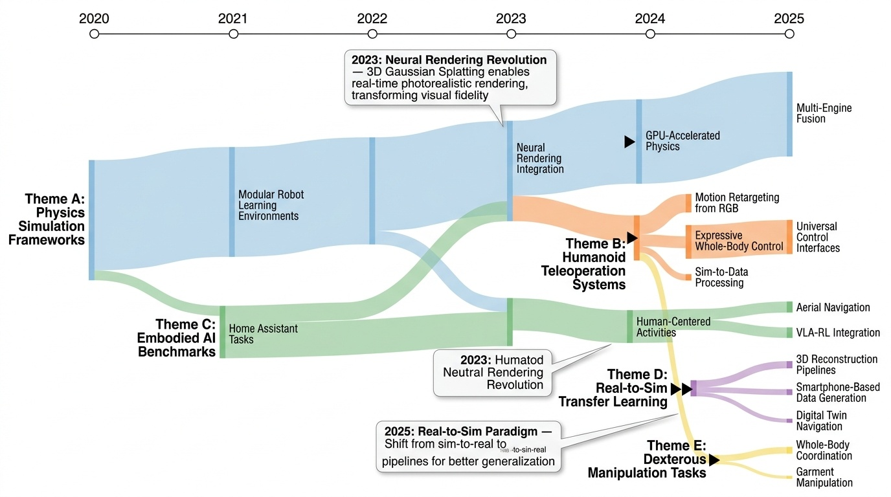
Category Overview
로봇 시뮬레이션과 원격 조작(Robot Simulation and Teleoperation) 분야는 실제 환경에서의 로봇 학습과 제어를 효율적으로 수행하기 위한 핵심 기술들을 다룬다. 이 카테고리는 고충실도 시뮬레이션 환경 구축[1299][1430][1469][1544], 물리 기반 모델링[1299][1483], 그리고 인간 중심의 텔레오퍼레이션 기술[1451][1498][1526]을 포함하는 다양한 연구 주제를 포함한다. 특히 휴머노이드 로봇의 전신 제어와 모방 학습[1390][1426][1484]은 인간의 동작을 로봇에 직접 전이하는 혁신적인 접근 방식을 보여준다. 또한 실감 있는 시각 렌더링[1290], 조작 과제 벤치마킹[1317][1355], 그리고 현실-시뮬레이션 갭을 줄이기 위한 데이터 생성 기법[1523][1527] 등이 연구되고 있다. 이러한 기술들은 로봇이 복잡한 조작 작업(manipulation)과 네비게이션(navigation) 능력을 습득하는 데 필수적이며, 궁극적으로 실제 환경에서의 구현 가능성을 높인다.
⚠ 갭: 실제 환경의 복잡성과 불확실성을 충실히 재현하는 시뮬레이션 기술이 부족하다.
🏛 정책: 로봇 기술 개발 비용 절감과 안전성 확보를 위한 고도화된 시뮬레이션 인프라 구축이 필요하다.
BEHAVIOR Robot Suite: Streamlining Real-World Whole-Body Manipulation for Everyday Household Activities

Figure 1: Everyday household activities enabled by BEHAVIOR ROBOT SUITE (BRS), show-
 *Figure 1: Everyday household activities enabled by BEHAVIOR ROBOT SUITE (BRS), show-* BEHAVIOR Robot Suite (BRS)는 가정용 일상 작업을 수행하기 위한 양팔 협력, 안정적 네비게이션, 광범위한 말단 장치 도달성을 갖춘 전신 조작 로봇을 위한 통합 프레임워크를 제시한다. JoyLo 원격 조작 인터페이스와 WB-VIMA 시각운동 정책 학습 알고리즘을 통해 실세계 가정 작업 수행을 가능하게 한다.
BEHAVIOR Robot Suite는 가정용 일상 작업을 위한 전신 조작 로봇의 완전한 생태계를 제시하는 포괄적 연구로, JoyLo의 창의적인 저비용 설계와 WB-VIMA의 계층적 자동회귀 정책 학습이 결합되어 실세계 가정 로봇의 실질적 진전을 이룬다. 특히 하드웨어, 데이터 수집, 알고리즘을 완전히 오픈소스화함으로써 커뮤니티 확산 가능성이 높으며, 다중 도메인의 체계적 통합을 통해 로봇 학습 연구에 의미 있는 기여를 한다.
3D Gaussian Splatting for Real-Time Radiance Field Rendering

Fig. 1. Our method achieves real-time rendering of radiance fields with quality that equals the previous method with the
 *Fig. 1. Our method achieves real-time rendering of radiance fields with quality that equals the previous method with the* 3D Gaussian Splatting은 3D 가우시안 표현과 실시간 렌더링 알고리즘을 결합하여 고품질의 novel-view synthesis를 1080p 해상도에서 30fps 이상으로 달성하는 방법이다.
3D Gaussian Splatting은 radiance field 렌더링에서 품질과 속도의 근본적 트레이드오프를 해결하는 획기적 방법으로, 실시간 고품질 novel-view synthesis를 처음으로 실현한 매우 중요한 기여이다.
A Survey of Robotic Navigation and Manipulation with Physics Simulators in the Era of Embodied AI

Fig. 1. Timeline illustrating the evolution of navigation (top) and manipulation (bottom) research in Embodied AI from
 *Fig. 2. A taxonomy of this survey, focusing on two main tasks of Embodied AI: Navigation and Manipulation. We discuss th* 본 논문은 Embodied AI 시대에 로봇의 네비게이션과 조작 작업을 위한 Physics Simulator의 역할을 종합적으로 분석하고, sim-to-real 전이의 간극을 좁히기 위한 시뮬레이터 속성, 벤치마크, 평가 지표 및 최신 방법론을 제시한다.
본 논문은 Embodied AI 시대의 navigation과 manipulation 연구를 포괄적으로 정리한 시의적절한 설문조사로, 현대적 simulator 기술과 최신 방법론(world model, geometric equivariance, VLA)을 체계적으로 분석하여 연구자들의 도구 선택과 방법론 설계에 실질적 가이드를 제공한다.
BEHAVIOR-1K: A Human-Centered, Embodied AI Benchmark with 1,000 Everyday Activities and Realistic Simulation

Figure 1: Developing a Human-Centered Benchmark for Embodied AI. Left: human preference score over
 *Figure 1: Developing a Human-Centered Benchmark for Embodied AI. Left: human preference score over* BEHAVIOR-1K는 1,461명의 일반인 조사를 통해 도출한 1,000개의 일상 활동을 정의하고, 이를 realistic physics simulation과 rendering을 지원하는 OMNIGIBSON 환경에서 실행할 수 있는 embodied AI 벤치마크이다.
BEHAVIOR-1K는 human-grounded survey, 대규모 diverse activities, realistic physics simulation을 통합하여 embodied AI 연구의 새로운 표준을 제시한 획기적인 벤치마크이다. 실제 인간 필요에 기반한 설계와 unprecedented scale의 다양성은 로봇 학습 커뮤니티에 significant impact을 미칠 것으로 예상된다.
DexGarmentLab: Dexterous Garment Manipulation Environment with Generalizable Policy

Figure 1: Overview. DexGarmentLab includes three major components: Environment, Automated
 *Figure 1: Overview. DexGarmentLab includes three major components: Environment, Automated* 의류 조작을 위한 첫 번째 양손 기민한 손가락 조작 환경 DexGarmentLab을 제시하고, 단일 전문가 시연으로부터 자동 데이터 생성 및 Hierarchical gArment-manipuLation pOlicy (HALO)를 통해 다양한 의류 형상과 변형에 대한 일반화를 달성한다.
DexGarmentLab은 양손 기민한 의류 조작이라는 도전적인 영역에서 첫 번째 종합적 환경과 알고리즘을 제시하며, 자동화된 데이터 수집과 HALO 정책을 통해 실질적인 일반화 성과를 달성한 매우 우수한 연구이다.
Expressive Whole-Body Control for Humanoid Robots

Fig. 1: Our Robot demonstrates diverse and expressive whole-body movements in different scenarios. Top Row: The robot is
 *Fig. 2: Overview of our framework. Our framework is able to train on data from various sources such as static human moti* 인간형 로봇이 인간의 모션 캡처 데이터를 학습하여 표현력 있는 전신 움직임을 수행하도록 강화학습 기반의 제어 정책을 제안하며, 상체는 참조 모션을 모방하되 하체는 속도 명령만 따르도록 제약을 완화하여 실제 로봇에서의 동작을 가능하게 함.
본 논문은 인간 모션 캡처 데이터를 실제 인간형 로봇에 효과적으로 적용하는 창의적인 문제 분해 방식과 차등적 제약 설계로, 학습 기반 인간형 로봇 제어 분야에서 처음으로 다양한 표현력 있는 동작을 실현함. 명확한 동기, 실제 로봇 검증, 그리고 우수한 성과에도 불구하고 기술적 신규성이 개별 컴포넌트 수준에서는 제한적이며, 하체 표현력과 다양한 작업 확장에 대한 연구가 필요함.
Habitat 2.0: Training Home Assistants to Rearrange their Habitat

Figure 1: A mobile manipulator (Fetch robot) simulated in Habitat 2.0 performing rearrangement tasks in a
 *Figure 1: A mobile manipulator (Fetch robot) simulated in Habitat 2.0 performing rearrangement tasks in a* Habitat 2.0는 가정용 로봇의 물체 재배치 작업을 학습하기 위한 고성능 물리 시뮬레이션 플랫폼이며, ReplicaCAD 데이터셋, 최적화된 시뮬레이터, Home Assistant Benchmark를 제공한다.
Habitat 2.0은 embodied AI 연구를 위한 완전한 인프라(데이터, 시뮬레이터, 벤치마크)를 제공하며, 100배 성능 향상으로 대규모 실험을 가능하게 하고, RL vs SPA 비교를 통해 이동 조작 문제에 대한 실질적 통찰을 제시한다.
HumanPlus: Humanoid Shadowing and Imitation from Humans

Figure 1: Stanford HumanPlus Robot. We present a full-stack system for humanoid robots to learn motion and
 *Figure 1: Stanford HumanPlus Robot. We present a full-stack system for humanoid robots to learn motion and* 휴머노이드 로봇이 인간의 모션 데이터와 RGB 카메라만으로 실시간 shadowing 및 자율 skill 학습을 수행하는 풀스택 시스템을 제시한다.
이 논문은 RGB 카메라 기반 실시간 shadowing과 효율적 imitation learning을 통합하여 휴머노이드 로봇의 자율 skill 습득을 실현한 실질적 기여를 보여준다. 기존 고가 teleoperation 시스템 대체와 대규모 인간 데이터 활용이라는 측면에서 휴머노이드 개발의 새로운 방향을 제시한다.
iGibson 1.0: a Simulation Environment for Interactive Tasks in Large Realistic Scenes

Fig. 1: Robot performs an interactive task in iGibson 1.0. It operates
 *Fig. 1: Robot performs an interactive task in iGibson 1.0. It operates* iGibson 1.0은 15개의 완전히 상호작용 가능한 현실적 실내 장면(108개 방)을 포함하는 로봇 시뮬레이션 환경으로, 대규모 장면에서 조작과 네비게이션을 포함한 대화형 작업을 학습할 수 있게 한다.
iGibson 1.0은 대규모 현실적 환경에서 완전한 물리 기반 상호작용을 지원하는 획기적인 로봇 시뮬레이션 플랫폼으로, 조작, 모바일 조작, 네비게이션 등 다양한 embodied AI 작업 연구를 가능하게 한다. 풍부한 도구 지원과 오픈소스 공개를 통해 로봇공학 커뮤니티에 큰 영향을 미칠 것으로 기대된다.
Learning Human-to-Humanoid Real-Time Whole-Body Teleoperation
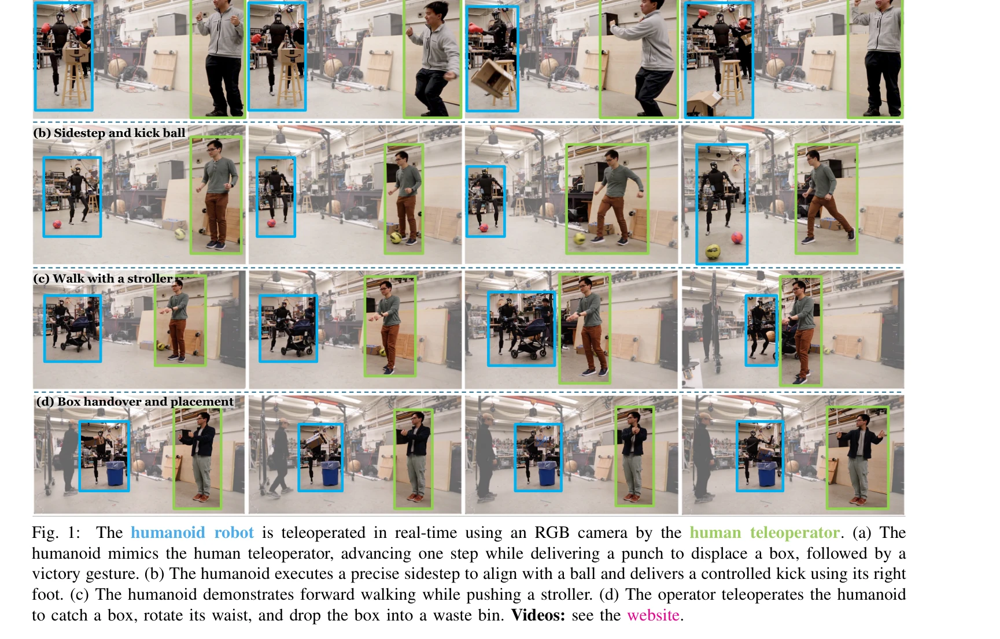
Fig. 1:
 *Fig. 4: Overview of H2O: (a) Retargeting (Section IV): H2O first aligns the SMPL body model to a humanoid’s structure* RGB 카메라만 사용하여 강화학습 기반의 실시간 휴머노이드 로봇 전신 원격조작 시스템(H2O)을 제시하며, 대규모 인간 동작 데이터셋을 휴머노이드에 맞게 변환하는 'sim-to-data' 프로세스를 제안한다.
본 논문은 RL 기반 실시간 전신 휴머노이드 원격조작의 첫 성공적 구현으로, 'sim-to-data' 필터링 프로세스와 강건한 sim-to-real 전이 기법을 통해 RGB 카메라만으로 복잡한 동적 동작을 추적한다. 휴머노이드 로봇 제어의 중요한 이정표이며, 자율 로봇 학습을 위한 대규모 데이터 수집 기반을 마련하는 의미 있는 기여이다.
ManiSkill3: GPU Parallelized Robotics Simulation and Rendering for Generalizable Embodied AI

Fig. 1: Multiple distinct task categories are displayed, ranging from room-scale tasks to humanoid interactions and draw
 *Fig. 1: Multiple distinct task categories are displayed, ranging from room-scale tasks to humanoid interactions and draw* ManiSkill3는 GPU 병렬화된 로봇 시뮬레이션 및 렌더링 프레임워크로, 접촉이 풍부한 물리 엔진과 다양한 조작 작업을 지원하여 시뮬레이션 속도를 10-1000배 향상시킨다.
ManiSkill3는 이질적 GPU 병렬 시뮬레이션과 고속 병렬 렌더링을 결합한 로봇 학습 플랫폼으로, 기존 시뮬레이터의 속도와 메모리 효율성 한계를 획기적으로 개선하고 12개 작업 카테고리와 대규모 시연 데이터셋을 제공하여 로봇 일반화 조작 학습에 중요한 기여를 한다.
MuBlE: MuJoCo and Blender simulation Environment and Benchmark for Task Planning in Robot Manipulation

Fig. 1.
 *Fig. 2.* MuBlE는 MuJoCo 물리 엔진과 Blender 렌더러를 결합한 로봇 조작 시뮬레이션 환경으로, 현실적인 시각 관찰과 정확한 물리 모델링을 동시에 제공하여 장기 과제 계획을 지원한다. SHOP-VRB2 벤치마크와 함께 시각-물리 속성을 모두 고려하는 다단계 추론 작업 평가를 가능하게 한다.
MuBlE는 로봇 조작 연구의 중요한 격차를 해결하여 고품질 렌더링과 정확한 물리를 동시에 제공하며, SHOP-VRB2 벤치마크는 폐쇄 루프 추론에 필요한 멀티모달 데이터를 제공한다. Sim-to-real 검증과 실제 로봇 실험을 통해 실질적 가치를 입증하며 오픈소스 공개로 연구 커뮤니티에 기여한다.
HumanPlus: Humanoid Shadowing and Imitation from Humans

Figure 1: Stanford HumanPlus Robot. We present a full-stack system for humanoid robots to learn motion and
 *Figure 1: Stanford HumanPlus Robot. We present a full-stack system for humanoid robots to learn motion and* 인간 데이터로부터 휴머노이드 로봇이 모션과 자율 기술을 학습할 수 있는 풀스택 시스템을 제시하며, RGB 카메라를 통한 실시간 shadowing과 behavior cloning 기반 imitation learning을 결합한다.
HumanPlus는 휴머노이드 로봇이 인간 데이터로부터 효율적으로 학습할 수 있는 실용적인 풀스택 시스템을 구현함으로써, 로봇 학습의 데이터 부족 문제를 해결하고 자율 휴머노이드 개발에 대한 새로운 경로를 제시한다. 특히 RGB 기반 shadowing과 imitation learning의 결합은 높은 기술적 완성도와 실제 적용 가능성을 보여주며, 휴머노이드 분야에서 의미 있는 기여를 한다.
MuJoCo Playground

Fig. 1:
 *Fig. 1:* MuJoCo Playground는 MJX 기반의 오픈소스 로봇 학습 프레임워크로, GPU에서 빠른 정책 훈련과 다양한 로봇 플랫폼으로의 제로샷 sim-to-real 전이를 가능하게 한다.
MuJoCo Playground는 MJX와 Madrona를 결합한 혁신적인 기술과 6개 로봇 플랫폼에서의 광범위한 sim-to-real 검증을 통해, 로봇 학습의 접근성과 효율성을 획기적으로 향상시킨 중요한 기여다.
OmniH2O: Universal and Dexterous Human-to-Humanoid Whole-Body Teleoperation and Learning

Figure 1: (a) OmniH2O enables teleoperating a full-size humanoid robot (Unitree H1) to complete tasks that
 *Figure 1: (a) OmniH2O enables teleoperating a full-size humanoid robot (Unitree H1) to complete tasks that* OmniH2O는 kinematic pose를 통일된 제어 인터페이스로 사용하여 VR, 카메라, 음성 등 다양한 입력을 통해 휴머노이드 로봇을 원격 조종하고 자율적으로 동작하도록 하는 학습 기반 시스템이다.
OmniH2O는 kinematic pose 기반 통합 인터페이스와 teacher-student 파이프라인을 통해 접근성 높은 휴머노이드 원격 조종 및 자율 제어를 실현한 중요한 기여이며, 첫 휴머노이드 전신 데이터셋 공개로 후속 연구의 기초를 제공한다.
Openfly: A comprehensive platform for aerial vision-language navigation

Figure 1: Overview of OpenFly. This work consists of (1) the integration of 4 rendering engines, significantly
 *Figure 1: Overview of OpenFly. This work consists of (1) the integration of 4 rendering engines, significantly* OpenFly는 항공 Vision-Language Navigation을 위한 종합 플랫폼으로, 4개 렌더링 엔진, 자동화된 데이터 생성 툴체인, 100k 궤적의 대규모 데이터셋, 그리고 keyframe-aware VLN 모델을 제공한다.
OpenFly는 항공 VLN 연구의 데이터 부족 문제를 획기적으로 해결한 종합 플랫폼으로, 다중 렌더링 엔진 통합, 완전 자동화 파이프라인, 100k 규모 벤치마크를 통해 embodied AI 분야에 중요한 기여를 한다. 제안된 keyframe-aware 모델도 항공 VLN의 특수성을 반영한 효과적인 접근법이다.
Re$^3$Sim: Generating High-Fidelity Simulation Data via 3D-Photorealistic Real-to-Sim for Robotic Manipulation

Figure 1: Illustration of RE3SIM. a) RE3SIM allows zero-shot policy transfer on various tasks. b) The system pipeline to
 *Figure 1: Illustration of RE3SIM. a) RE3SIM allows zero-shot policy transfer on various tasks. b) The system pipeline to* RE3SIM은 3D 재구성과 신경 렌더링 기술을 활용하여 실제 환경을 고충실도로 복제한 후, 물리 기반 시뮬레이터 내에서 로봇 조작 정책을 학습하는 real-to-sim-to-real 파이프라인이다. 순수 시뮬레이션 데이터만으로 평균 58% 이상의 성공률로 zero-shot sim-to-real 전이를 달성한다.
RE3SIM은 3D 재구성과 신경 렌더링을 효과적으로 결합하여 sim-to-real 갭을 크게 줄이는 실용적인 시스템으로, 최소한의 인간 개입으로 대규모 고품질 시뮬레이션 데이터를 생성할 수 있는 점에서 로봇 학습 분야에 중요한 기여를 한다.
Learning Human-to-Humanoid Real-Time Whole-Body Teleoperation

Fig. 1:
 *Fig. 1:* RGB 카메라만을 이용하여 reinforcement learning 기반의 실시간 전신 텔레오퍼레이션을 humanoid 로봇에서 구현하는 H2O 프레임워크를 제시한다. 대규모 인간 동작 데이터셋을 sim-to-data 프로세스로 정제하여 시뮬레이션에서 학습한 후 제로샷 sim-to-real 전이로 실제 로봇에서 동작시킨다.
이 논문은 실시간 전신 humanoid 텔레오퍼레이션을 최초로 RL로 구현하며, 새로운 sim-to-data 프로세스와 careful한 sim-to-real 설계를 통해 복잡한 동적 동작들을 성공적으로 수행한 중요한 기여다. RGB 카메라 기반의 간단한 입력 방식은 실용적 가치가 높으나, 다양한 플랫폼 일반화와 더욱 극단적인 동작에 대한 확장은 향후 과제로 남아있다.
Real2Render2Real: Scaling Robot Data Without Dynamics Simulation or Robot Hardware

Figure 1: Real2Render2Real generating robot training data for the task of “Put the Mug on the Coffee Maker”.
 *Figure 1: Real2Render2Real generating robot training data for the task of “Put the Mug on the Coffee Maker”.* Real2Render2Real (R2R2R)은 스마트폰으로 촬영한 3D 객체 스캔과 단일 인간 시연 영상으로부터 동역학 시뮬레이션이나 로봇 하드웨어 없이 대규모 로봇 훈련 데이터를 생성하는 파이프라인이다.
R2R2R은 동역학 시뮬레이션과 로봇 하드웨어라는 두 가지 주요 병목을 제거하여 스마트폰 입력만으로 대규모 로봇 훈련 데이터를 생성하는 획기적인 방법을 제시한다. 단일 인간 시연으로 150배 데이터의 성능을 달성한다는 실증적 결과와 VLA/모방 학습 호환성은 로봇 학습 확장의 실질적 경로를 제시하는 중요한 기여이다.
robosuite: A Modular Simulation Framework and Benchmark for Robot Learning

Figure 1: Procedurally generated robotic environments with robosuite APIs
 *Figure 2: System diagram of robosuite modules. An actor (e.g. a Policy or* robosuite는 MuJoCo 물리 엔진을 기반으로 하는 모듈식 로봇 시뮬레이션 프레임워크로, 로봇 학습 연구를 위한 벤치마크 환경과 재현 가능한 실험 환경을 제공한다.
robosuite는 로봇 학습 커뮤니티를 위한 포괄적이고 잘 설계된 오픈소스 프레임워크로, 모듈식 아키텍처와 표준화된 벤치마크를 통해 재현 가능한 연구를 촉진하며 AI-로보틱스 교차 분야의 진입 장벽을 현저히 낮춘다.
SimpleVLA-RL: Scaling VLA Training via Reinforcement Learning

Figure 1 | Overview of SimpleVLA-RL. SimpleVLA-RL is an efficient RL framework for VLA that im-
 *Figure 1 | Overview of SimpleVLA-RL. SimpleVLA-RL is an efficient RL framework for VLA that im-* SimpleVLA-RL은 Vision-Language-Action 모델의 학습을 강화학습(RL)을 통해 확장하는 효율적인 프레임워크로, 데이터 부족 문제를 해결하고 실제 로봇 작업에서 SFT를 능가하는 성능을 달성한다.
SimpleVLA-RL은 RL을 VLA 학습에 효과적으로 적용하여 데이터 부족 문제를 해결하고 실제 로봇 성능을 향상시킨 중요한 기여이며, "pushcut" 현상의 발견은 새로운 연구 방향을 제시한다. 다만 계산 비용과 실제 환경 검증의 확대가 향후 과제이다.
OmniH2O: Universal and Dexterous Human-to-Humanoid Whole-Body Teleoperation and Learning

Figure 1: (a) OmniH2O enables teleoperating a full-size humanoid robot (Unitree H1) to complete tasks that
 *Figure 1: (a) OmniH2O enables teleoperating a full-size humanoid robot (Unitree H1) to complete tasks that* OmniH2O는 kinematic pose를 통일된 인터페이스로 사용하여 VR, RGB 카메라, 음성 명령 등 다양한 입력 방식으로 전신 humanoid를 조종하고, RL 기반 sim-to-real 파이프라인으로 자율 제어도 가능하게 하는 학습 기반 시스템이다.
OmniH2O는 통일된 kinematic pose 인터페이스와 강건한 sim-to-real 파이프라인을 통해 humanoid 전신 제어의 실질적 발전을 이루었으며, 첫 공개 전신 loco-manipulation 데이터셋과 함께 다양한 실제 작업 데모를 제시하여 humanoid 로봇 분야에 높은 기여 가치를 가진다.
VR-Robo: A Real-to-Sim-to-Real Framework for Visual Robot Navigation and Locomotion

Fig. 1: Our VR-Robo introduces a unified real-to-sim-to-
 *Fig. 1: Our VR-Robo introduces a unified real-to-sim-to-* 3D Gaussian Splatting을 활용하여 실제 환경을 포토리얼리스틱한 디지털 트윈으로 재구성하고, 이를 시뮬레이션에 통합하여 RL 기반 시각 네비게이션 정책을 학습한 후 실제 로봇에 무영점 전이하는 Real-to-Sim-to-Real 프레임워크를 제시한다.
RGB 기반 시각 네비게이션과 로컬로모션의 sim-to-real 갭을 포토리얼리즘과 물리 상호작용의 결합으로 효과적으로 해결하며, 실제 로봇 배포에서의 무영점 전이를 달성한 실용적이고 창의적인 접근법이다.
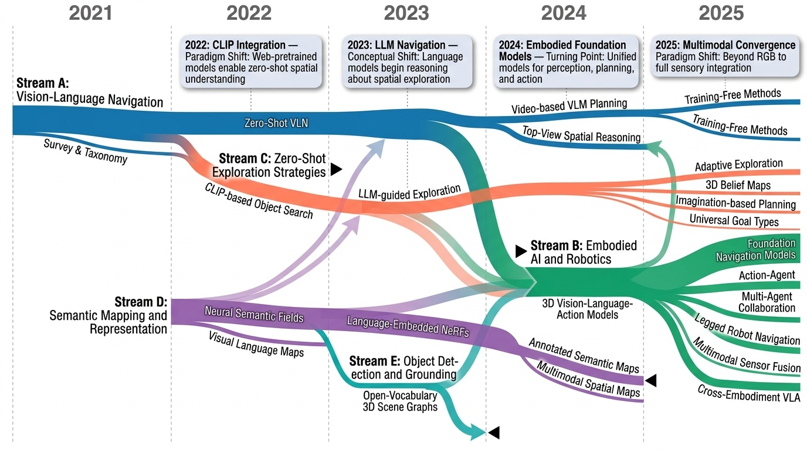
Category Overview
Spatial Navigation and Mapping 카테고리는 로봇이 미지의 환경을 탐색하고 지도를 작성하며 목표 위치로 이동하는 기술을 다루는 28편의 논문으로 구성되어 있다. Vision-Language Model(VLM)과 3D 비전 기술을 활용한 의미론적 장면 이해 및 개방형 어휘 객체 네비게이션이 주요 연구 방향이다[1291][1378][1443]. 공간 표현 방식으로는 3D Voxel 기반 신념 지도(Belief Map)[1319], 주석이 달린 의미론적 메모리 표현[1470], 그리고 Radiance Field 기반의 언어 임베딩[1456] 등 다양한 접근법이 제시되고 있다. 효율적인 탐색 전략[1311][1396]과 다중 모달 센서 융합[1485][1487]을 통해 로봇의 네비게이션 성능을 향상시키는 연구도 활발하며, 언어 지시사항 기반의 훈련 자유형 비전-언어-네비게이션[1402]과 비디오 예측 기반의 동적 계획[1489] 같은 혁신적인 방법론들이 제안되고 있다. 이러한 기술들은 로봇의 자율 주행성과 환경 적응력을 크게 향상시켜 실제 응용 환경에서의 실질적 활용을 가능하게 한다.
⚠ 갭: 동적이고 혼잡한 실제 환경에서의 강건한 장기 네비게이션 능력이 제한적이다.
🏛 정책: 서비스 로봇의 실용화를 위한 실내외 통합 네비게이션 기술과 인프라 표준화가 필요하다.
3D-VLA: A 3D Vision-Language-Action Generative World Model

Figure 1. Examples from our 3D Embodied Instruction Tuning Dataset.
 *Figure 2. Overview of our 3D-VLA pipeline. The left part shows our goal-generation capability. Our model can imagine the* 3D-VLA는 3D 인식, 추론, 행동을 생성형 월드 모델로 통합하는 embodied foundation model이며, 3D LLM 위에 interaction token과 diffusion model을 결합하여 로봇의 목표 이미지/포인트 클라우드 생성과 행동 예측을 수행한다.
3D-VLA는 embodied AI의 새로운 패러다임을 제시하며, 3D 인식과 월드 모델 기반 행동 생성을 통합한 점에서 혁신적이다. 대규모 3D embodied 데이터셋 구축과 multimodal goal generation 능력은 로봇 조작 분야에 상당한 기여를 할 수 있으나, 실제 로봇 환경에서의 검증이 필요하다.
ApexNav: An Adaptive Exploration Strategy for Zero-Shot Object Navigation with Target-centric Semantic Fusion

Fig. 1: Real-world Demonstration of ApexNav. We test ApexNav on various
 *Fig. 2: System Architecture of ApexNav. Before the episode, an LLM offline generates a similar object list. The agent bu* ApexNav는 의미론적 정보의 환경 분포를 분석하여 강한 의미론적 신호가 있을 때는 의미 기반 탐색을, 약할 때는 기하학 기반 탐색으로 적응적으로 전환하고, target-centric semantic fusion을 통해 노이즈가 있는 탐지에도 강건한 zero-shot object navigation 프레임워크이다.
ApexNav는 의미론적 신호와 기하학적 정보의 효율적 트레이드오프를 통해 zero-shot object navigation의 효율성과 신뢰도를 모두 향상시킨 우수한 연구이다. 실환경 검증과 강력한 벤치마크 성능, 체계적인 ablation study를 통해 각 컴포넌트의 효과를 명확히 입증했으나, 적응형 전환 기준의 명확화와 더 광범위한 실환경 실험이 필요하다.
BeliefMapNav: 3D Voxel-Based Belief Map for Zero-Shot Object Navigation

 *Figure 2: BeliefMapNav pipeline: The agent initializes with a 360° rotation. During exploration,* 본 논문은 3D voxel 기반 belief map을 활용하여 zero-shot object navigation에서 LLM의 의미론적 추론과 계층적 공간 정보를 통합함으로써 로봇이 사전 학습이나 사전 구축 맵 없이 자연어로 지정된 대상을 미지의 환경에서 찾을 수 있도록 한다.
본 논문은 3D voxel-based belief map을 통해 LLM 의미론과 공간 구조를 효과적으로 통합하고 확률 기반 경로 계획으로 zero-shot object navigation 성능을 대폭 향상시킨 우수한 기여이다. 다만 실제 로봇 배치 시 계산 복잡도와 LLM 오류에 대한 강건성 검토가 필요하다.
CLIP-Fields: Weakly Supervised Semantic Fields for Robotic Memory

Fig. 1: Our approach, CLIP-Fields, integrates multiple views of a
 *Fig. 1: Our approach, CLIP-Fields, integrates multiple views of a* CLIP-Fields는 공간 좌표를 CLIP, Detic, Sentence-BERT 등 웹 사전학습 모델의 의미론적 임베딩으로 매핑하는 암묵적 신경 필드로, 직접 인간 감독 없이 로봇의 3D 의미론적 메모리로 작동한다.
CLIP-Fields는 웹 사전학습 모델을 활용한 약한 감독 학습으로 인간 주석을 완전히 제거하면서도 개방 어휘 기반 3D 의미론적 메모리를 구축하는 혁신적 접근법이다. 로봇 응용의 실용성과 적은 데이터로도 우수한 성능을 보여주는 점에서 매우 중요한 기여이나, 실제 로봇 환경에서의 대규모 평가 및 동적 장면 처리는 향후 과제이다.
Context-Aware Entity Grounding with Open-Vocabulary 3D Scene Graphs

Figure 1: This is an illustration of the proposed pipeline. The system inputs are the positional input Pu, user input Lu
 *Figure 1: This is an illustration of the proposed pipeline. The system inputs are the positional input Pu, user input Lu* Open-Vocabulary 3D Scene Graph (OVSG)는 자유형식 텍스트 쿼리를 통해 객체, 에이전트, 영역 등 다양한 엔티티를 문맥 인식적으로 localize하는 프레임워크이다. 기존의 고정된 시맨틱 레이블 기반 방식과 달리, 미리 정의되지 않은 카테고리와 관계도 처리할 수 있다.
OVSG는 open-vocabulary 능력을 3D scene graph에 통합하여 로봇이 자연스러운 문맥 기반 지시를 이해할 수 있도록 한 의미 있는 기여이다. 실제 로봇 실험과 새로운 데이터셋을 통해 실용성을 입증했으나, scene reconstruction 정확도와 확장성 측면에서 개선의 여지가 있다.
CoWs on Pasture: Baselines and Benchmarks for Language-Driven Zero-Shot Object Navigation

Figure 1. The PASTURE benchmark for L-ZSON. Text speci-
 *Figure 2. CLIP on Wheels (CoW) overview. A CoW uses a* 로봇이 자연언어 설명만으로 임의의 물체를 찾을 수 있도록 CLIP 기반의 학습 없는 네비게이션 방법 CoW를 제안하고, 이를 평가하기 위한 Pasture 벤치마크를 소개한다.
이 논문은 현실적인 로봇 응용을 위해 학습 없는 언어 기반 객체 네비게이션을 체계적으로 연구하며, 새로운 벤치마크와 광범위한 실증 분석을 통해 open-vocabulary 모델의 네비게이션 적응 가능성을 명확히 보여준다. 베이스라인의 단순성과 강력한 성능, 그리고 종합적인 평가 프레임워크는 향후 연구의 중요한 기준을 제시한다.
DivScene: Towards Open-Vocabulary Object Navigation with Large Vision Language Models in Diverse Scenes

 *Figure 2: Data collection process. On the left, we show the process of collecting scenes. We prompt GPT-4o to* Large Vision-Language Models (LVLMs)의 embodied 환경 이해와 네비게이션 능력을 탐구하기 위해 81개 장면 유형과 5,707개 객체 범주를 포함하는 대규모 데이터셋 DivScene을 제시하고, CoT 설명을 통한 fine-tuning으로 GPT-4o를 20% 이상 상회하는 성능 달성.
이 논문은 open-vocabulary object navigation 작업을 처음 체계적으로 정의하고 기존의 100배 이상 다양한 객체를 포함하는 대규모 벤치마크를 제시하여 높은 학술적 기여도를 가짐. LVLM의 embodied AI 능력을 평가하기 위한 중요한 자산을 제공하며, BFS 기반 이모테이션 러닝과 CoT 설명의 조합으로 실용적이고 효율적인 학습 방법을 제시한 점이 탁월함.
Embodied Navigation Foundation Model

Figure 1: We provide an illustration of architecture (left) alongside real-world experiment results (right). The
 *Figure 1: We provide an illustration of architecture (left) alongside real-world experiment results (right). The* NavFoM은 8백만 개의 네비게이션 샘플로 학습된 크로스-구현체·크로스-태스크 기반 네비게이션 모델로, 다양한 로봇 플랫폼과 네비게이션 작업에서 미세 조정 없이 최첨단 성능을 달성한다.
NavFoM은 신체화된 AI 분야에서 크로스-구현체·크로스-태스크 네비게이션을 처음으로 통합적으로 해결한 대규모 기초 모델로, TVI 토큰과 BATS 전략의 혁신적 설계로 다양한 로봇 플랫폼과 네비게이션 작업에서 미세 조정 없이 강력한 일반화 능력을 입증하였다.
ForesightNav: Learning Scene Imagination for Efficient Exploration

Figure 1. ForesightNav proposes Imagination aided exploration
 *Figure 1. ForesightNav proposes Imagination aided exploration* ForesightNav는 로봇이 인간처럼 상상력을 활용하여 미탐사 지역의 점유 및 의미정보를 예측하고, 이를 기반으로 효율적인 장기 네비게이션 목표를 선택하는 탐색 전략을 제안한다.
ForesightNav는 인간의 상상력 메커니즘을 로봇 탐색에 통합하는 개념적으로 신선한 접근으로, 실험 결과 탐색 효율성 개선을 보여주나 실제 로봇 환경 검증이 필요하다.
GauDP: Reinventing Multi-Agent Collaboration through Gaussian-Image Synergy in Diffusion Policies

Figure 1: Both local and global context are essential in multi-agent collaboration. Comparison of
 *Figure 1: Both local and global context are essential in multi-agent collaboration. Comparison of* GauDP는 다중 에이전트 협업 로봇 시스템에서 RGB 이미지로부터 3D Gaussian 필드를 구성하여 전역 일관성과 국소적 정밀성을 동시에 확보하는 새로운 표현 방식을 제안한다. 각 에이전트가 공유된 3D Gaussian 표현에서 과제 관련 특성을 동적으로 쿼리하여 협조와 개별 제어를 동시에 달성한다.
GauDP는 3D Gaussian Splatting을 창의적으로 활용하여 다중 에이전트 로봇 협업의 근본적 도전에 효과적으로 대응하는 혁신적 방법이다. 강력한 실험 결과와 명확한 동기 부여에도 불구하고, 실제 환경 검증의 부재와 기술적 구현 세부사항의 불충분한 설명이 한계로 지적된다.
GC-VLN: Instruction as Graph Constraints for Training-free Vision-and-Language Navigation

Figure 1:
 *Figure 2: Framework of GC-VLN. We construct a constraint library, containing all the spatial rela-* GC-VLN은 자연언어 지시를 그래프 제약 최적화 문제로 재구성하여 연속 환경에서 학습 없이 작동하는 비전-언어 네비게이션 프레임워크를 제안한다. 공간 제약 라이브러리와 제약 솔버를 통해 zero-shot 환경 적응을 실현한다.
GC-VLN은 VLN-CE에서 처음으로 완전한 training-free 접근을 달성한 혁신적 연구로, constraint 기반 최적화 프레임워크의 창의성과 실세계 검증을 통한 실용성이 우수하다. 다만 계산 복잡도 분석과 대규모 실제 환경 실험 확대로 한층 강화될 수 있다.
L3MVN: Leveraging Large Language Models for Visual Target Navigation

Fig. 1: Visual target navigation example. The robot explores
 *Fig. 2: The architecture of the target navigation framework. The framework takes RGB-D images as input to generate a* 대형 언어모델(LLM)을 활용하여 의미적 맵과 프론티어 선택을 통해 미지의 환경에서 시각적 목표 항법을 수행하는 프레임워크를 제안한다. Zero-shot과 feed-forward 두 가지 패러다임으로 상식적 추론을 이용한 효율적 탐색을 달성한다.
LLM의 상식적 지식을 의미적 탐색에 활용하는 창의적인 접근으로 학습 비용을 크게 절감하면서도 우수한 일반화 성능을 달성했다. Zero-shot 학습 능력과 실제 로봇 실험을 통해 실용성을 입증한 의미 있는 연구이나, 실시간 성능과 다양한 환경에서의 확장성 검증이 필요하다.
LERF: Language Embedded Radiance Fields

Figure 1: Language Embedded Radiance Fields (LERF). LERF grounds CLIP representations in a dense, multi-scale 3D field. A
 *Figure 1: Language Embedded Radiance Fields (LERF). LERF grounds CLIP representations in a dense, multi-scale 3D field. A* LERF는 CLIP 임베딩을 NeRF에 정합하여 자연어로 3D 장면을 쿼리할 수 있도록 하는 방법이다. 다중 스케일 언어 필드를 학습함으로써 시각적 속성, 의미론, 추상적 개념, 장기 꼬리 객체 등 다양한 형태의 자연어 질의에 실시간으로 응답한다.
LERF는 NeRF와 CLIP을 창의적으로 결합하여 3D 장면의 밀집 자연어 쿼리를 실현한 우수한 논문이다. 다중 스케일 언어 필드, 마스크 비의존 설계, 실시간 성능은 실용적 가치가 크며, 로봇공학 및 3D UI 분야에서 즉각적인 영향을 미칠 수 있다.
LOVON: Legged Open-Vocabulary Object Navigator

Fig. 1: Object navigation of legged robots in diverse open-world scenarios.
 *Fig. 2: Overview of LOVON’s pipeline. First, the LLM task planner reconfigures the human’s task into basic instructions,* LOVON은 LLM 기반 계층적 작업 계획과 open-vocabulary 시각 감지를 통합하여 동적이고 비구조화된 환경에서 legged robot의 장시간 객체 네비게이션을 가능하게 하는 통합 프레임워크이다. Laplacian Variance Filtering 등의 기법으로 실제 환경의 시각적 불안정성을 해결하고 여러 legged robot 플랫폼에서 검증되었다.
LOVON은 LLM 기반 계획과 open-vocabulary 감지를 legged robot과 처음으로 통합하여 비구조화된 환경에서 장시간 object navigation을 달성한 혁신적인 시스템이다. 실제 환경 도전(시각 지터, 목표 손실)에 대한 맞춤형 해결책과 다중 플랫폼 검증을 통해 높은 실용성과 일반화 가능성을 입증하였으나, 극한 환경 성능과 에러 처리 mechanism의 보강이 필요하다.
MapNav: A Novel Memory Representation via Annotated Semantic Maps for Vision-and-Language Navigation

Figure 1: Illustration of our Annotated Semantic
 *Figure 1: Illustration of our Annotated Semantic* MapNav는 Vision-and-Language Navigation에서 Annotated Semantic Map(ASM)을 메모리 표현으로 사용하여 기존의 과거 프레임 저장의 비효율성을 해결하는 end-to-end VLM 기반 모델이다. ASM은 top-down 시멘틱 맵에 텍스트 라벨을 추가하여 구조화된 내비게이션 정보를 제공한다.
MapNav는 Annotated Semantic Map이라는 혁신적 메모리 표현을 통해 VLN의 효율성과 구조화된 공간 이해를 동시에 달성한 견고한 연구이다. SOTA 성능 달성과 데이터셋 공개 약속으로 임체AI 커뮤니티에 실질적인 기여를 제시하며, VLN 분야의 새로운 방향을 제안한다.
Multimodal Fusion and Vision-Language Models: A Survey for Robot Vision

Figure 1: The overview figure illustrates the overall framework of multimodal fusion and VLMs for robot vision. Various
 *Figure 1: The overview figure illustrates the overall framework of multimodal fusion and VLMs for robot vision. Various * 로봇 비전을 위한 멀티모달 융합 기법과 Vision-Language Model(VLM)의 응용을 체계적으로 리뷰하며, encoder-decoder, attention, graph neural network 등의 융합 전략과 SLAM, 3D 객체 감지, 네비게이션, 조작 등 핵심 로봇 태스크에서의 실제 구현을 분석한다.
본 리뷰는 로봇 비전 분야에서 멀티모달 융합과 VLM의 응용을 가장 포괄적으로 다룬 첫 번째 종합 리뷰로서, 5개 핵심 로봇 태스크, cross-modal self-supervised learning, lightweight fusion 등을 체계적으로 분석하고 명확한 미래 방향을 제시하여 향후 로봇 비전 연구의 중요한 참고 자료가 될 수 있다.
Multimodal Spatial Language Maps for Robot Navigation and Manipulation

Figure 1. AVLMaps provide an open-vocabulary 3D map
 *Figure 1. AVLMaps provide an open-vocabulary 3D map* 로봇 네비게이션과 조작을 위해 pretrained multimodal foundation model의 특징을 3D 환경 재구성과 융합한 spatial language map (VLMaps, AVLMaps)을 제안한다. 이를 통해 자연어, 이미지, 오디오 등 다중모달 쿼리를 공간상의 목표 위치로 그라운딩할 수 있다.
본 논문은 multimodal foundation models을 3D spatial map에 창의적으로 통합하여 기존 방법의 공간 정밀도와 멀티모달 이해 한계를 동시에 해결한 의미 있는 기여다. Audio modality의 도입과 다양한 로봇 플랫폼 지원으로 실용적 확장성이 우수하며, 50% 성능 향상 등 정량적 결과도 강력하다.
NaVid: Video-based VLM Plans the Next Step for Vision-and-Language Navigation

 *Fig. 2: The overview of NaVid. The inputs of NaVid consist of the RGB frames from the online video observation {x0, · · * NaVid는 비디오 기반 대규모 VLM을 활용하여 시각-언어 네비게이션에서 RGB 카메라 입력만으로 로봇의 다음 행동을 계획하는 첫 시도이며, 지도나 깊이 정보 없이 시뮬레이션과 실제 환경 모두에서 최고 성능을 달성한다.
NaVid는 VLM의 강력한 일반화 능력을 VLN에 성공적으로 적용한 혁신적 연구로, RGB만으로 연속 환경에서 실제 로봇 네비게이션을 수행하는 첫 실용적 VLA 모델이다. Sim-to-Real 전이의 오랜 문제를 우아하게 해결하고 우수한 크로스 데이터셋 일반화를 보여준다.
NavigateDiff: Visual Predictors are Zero-Shot Navigation Assistants

Fig. 1.
 *Fig. 1.* NavigateDiff는 vision-language model과 diffusion network를 결합하여 미래 프레임을 예측하는 visual predictor를 구축하고, 이를 통해 로봇이 제로샷(zero-shot) 상황에서 미지의 환경을 효과적으로 네비게이션할 수 있도록 지원한다.
NavigateDiff는 foundation model의 논리적 추론 능력과 이미지 생성 능력을 창의적으로 결합하여 zero-shot 네비게이션에 새로운 접근법을 제시한다. 높은 수준의 추론과 저수준의 제어를 분리하는 구조와 미래 프레임 예측을 중간 표현으로 활용하는 아이디어는 로봇 네비게이션 분야에 상당한 기여를 할 수 있는 논문이다.
OmniVLA: Physically-Grounded Multimodal VLA with Unified Multi-Sensor Perception for Robotic Manipulation

 *Fig. 2: System Overview. OmniVLA processes diverse sensor data into image-like 2D spatial representations, and then* OmniVLA는 RGB, 적외선, mmWave 레이더, 음향 마이크로폰 등 다중 센서를 통합하는 최초의 VLA 모델로, 센서-마스크된 이미지라는 통일된 표현을 통해 물리적 정보가 포함된 로봇 조작을 가능하게 한다.
OmniVLA는 다중 센서를 VLA에 통합하는 문제에 대해 우아하고 실용적인 솔루션을 제시하며, 센서-마스크된 이미지라는 단순하면서도 효과적인 표현으로 확장 가능성과 데이터 효율성을 동시에 달성한 의미 있는 기여이다.
RoboTron-Nav: A Unified Framework for Embodied Navigation Integrating Perception, Planning, and Prediction

 *Figure 3. Overview of RoboTron-Nav architecture. The current frame It is initially processed through 2D and 3D feature e* RoboTron-Nav는 perception, planning, prediction을 통합하는 embodied navigation 프레임워크로, multitask collaboration (navigation + EQA)과 adaptive 3D-aware history sampling을 통해 언어 기반 시각 네비게이션 성능을 향상시킨다.
RoboTron-Nav는 multitask collaboration과 adaptive history sampling이라는 두 가지 혁신적 구성요소를 통해 embodied navigation의 해석가능성과 효율성을 동시에 개선하며, SOTA 성능 달성으로 실용적 가치가 높다. 다만 데이터셋 구축 방법론과 실시간 적용 가능성에 대한 추가 검증이 필요하다.
SmartWay: Enhanced Waypoint Prediction and Backtracking for Zero-Shot Vision-and-Language Navigation

Fig. 1. Role of our proposed waypoint predictor and backtrack mechanism.
 *Fig. 1. Role of our proposed waypoint predictor and backtrack mechanism.* SmartWay는 향상된 waypoint predictor와 MLLM 기반 navigator를 통합한 zero-shot VLN-CE 프레임워크로, occupancy-aware loss와 history-aware reasoning, backtracking 메커니즘을 통해 연속 환경에서의 네비게이션 성능을 개선한다.
SmartWay는 enhanced waypoint predictor와 MLLM 기반 네비게이터, backtracking 메커니즘의 유기적 결합으로 zero-shot VLN-CE에서 SOTA 성능을 달성하며, 실제 로봇 배포 가능성을 입증한 의미 있는 연구이다. 다만 real-world 평가 확대와 computational cost 분석이 보완되면 더욱 견고할 것으로 판단된다.
TopV-Nav: Unlocking the Top-View Spatial Reasoning Potential of MLLM for Zero-shot Object Navigation

Figure 1. (a) Current LLM-based methods lie in two exploration
 *Figure 2. Overall framework of TopV-Nav. During navigation, the agent receives egocentric RGB-D images It from the envir* TopV-Nav는 MLLM을 활용하여 top-view 지도 위에서 직접 공간 추론을 수행함으로써 Zero-Shot Object Navigation 작업을 개선하는 방법론이다. Adaptive Visual Prompt Generation, Dynamic Map Scaling, Potential Target Driven 메커니즘을 통해 공간 정보 손실을 방지하고 의미론적 탐색 공간을 확대한다.
TopV-Nav는 MLLM의 공간 추론 능력을 체계적으로 활용하여 ZSON 작업의 근본적인 한계를 해결하는 창의적이고 실질적인 방법론이다. Map-to-text 제거와 적응적 시각 프롬프트 생성 등 여러 혁신 기법이 효과적으로 통합되었으며, MP3D와 HM3D에서 우수한 성능을 달성했다.
TRAVEL: Training-Free Retrieval and Alignment for Vision-and-Language Navigation

 *Figure 2. Topological Map Construction* Vision-Language Navigation 문제를 LLM과 VLM을 활용한 모듈식 접근으로 해결하며, 자연어 지시에서 landmark를 추출하고 topological map에서 경로를 검색하여 dynamic programming으로 정렬 점수를 계산한다.
이 논문은 LLM과 VLM을 체계적으로 결합한 modular VLN 접근법으로 training-free 학습이 가능함을 보이며, 복잡한 R2R-Habitat 지시셋에서 기존 방법 대비 우수한 성능을 달성한다. 다만 알려진 맵의 존재 가정과 spatial constraint 처리의 한계는 실제 환경 적용에 있어 개선이 필요하다.
UniGoal: Towards Universal Zero-shot Goal-oriented Navigation

Figure 1. State-of-the-art zero-shot goal-oriented navigation meth-
 *Figure 2. Framework of UniGoal. We convert different types of goals into a uniform graph representation and maintain an * UniGoal은 object category, instance image, text description 등 다양한 목표 유형을 통일된 graph 표현으로 변환하여 LLM 기반의 단일 모델로 세 가지 navigation 작업을 zero-shot으로 수행하는 범용 프레임워크를 제안한다.
UniGoal은 graph 표현을 통해 vision과 language 기반 navigation 작업을 우아하게 통합하고, 실험적으로도 범용성과 zero-shot 성능을 동시에 달성하는 우수한 연구이다. 다만 실제 환경 평가와 graph 구성 robustness에 대한 더 깊은 분석이 필요하다.
Vision-Language Navigation: A Survey and Taxonomy

 *Fig. 2. The knowledge graph is summarized in this review.* 본 논문은 Vision-Language Navigation(VLN) 분야를 종합적으로 조사하고, 언어 지시의 특성에 따라 single-turn/multi-turn, goal-oriented/route-oriented, passive/interactive 등으로 체계적으로 분류한 택소노미를 제시한다.
본 논문은 VLN 분야의 첫 번째 포괄적 조사로서, 언어 지시의 특성 기반 4단계 택소노미를 제시하여 산재된 VLN 태스크들을 통일된 프레임워크로 정리했다. 명확한 분류 체계와 광범위한 문헌 커버리지는 연구자들이 VLN의 전체 landscape를 이해하고 미래 연구 방향을 설정하는 데 큰 도움이 될 것으로 예상된다.
Visual Language Maps for Robot Navigation

Fig. 1: VLMaps is a spatial map representation in which pretrained visual-
 *Fig. 1: VLMaps is a spatial map representation in which pretrained visual-* 시각-언어 모델의 특징을 3D 재구성과 융합하여 공간 정보를 갖춘 의미론적 지도(VLMaps)를 구축하고, 이를 통해 로봇이 자연어 명령으로 공간 관계를 포함한 복잡한 네비게이션 작업을 수행할 수 있게 한다.
VLMaps는 사전훈련 VLM과 3D 재구성을 창의적으로 통합하여 공간-의미론적 네비게이션이라는 중요한 문제를 해결하며, 광범위한 실험으로 기존 방법 대비 우월성을 입증한 우수한 연구이다. 다만 센서 정확도, 실외 환경, 동적 장애물 등에 대한 제약 논의가 추가되면 더욱 완성도 높을 것이다.
X-VLA: Soft-Prompted Transformer as Scalable Cross-Embodiment Vision-Language-Action Model

Figure 1 | X-VLA employs distinctive learnable embeddings, referred to as soft prompt, to effectively
 *Figure 1 | X-VLA employs distinctive learnable embeddings, referred to as soft prompt, to effectively* X-VLA는 소프트 프롬프트(Soft Prompt) 기법을 도입하여 이질적인 로봇 플랫폼 간 cross-embodiment 학습을 효과적으로 처리하는 scalable Vision-Language-Action 모델이다. 0.9B 파라미터 규모로 6개 시뮬레이션 벤치마크와 3개 실로봇에서 SOTA 성능을 달성한다.
X-VLA는 soft prompt를 통한 우아하고 효율적인 cross-embodiment 처리 방식으로 VLA 분야의 중요한 진전을 이룬다. 파라미터 효율성과 광범위한 실증 평가를 통해 실제 로봇 응용 분야에서의 높은 실용성을 입증하며, flow-matching 기반 아키텍처의 안정성과 확장성은 향후 generalist 로봇 모델 개발의 주요 방향을 제시한다.
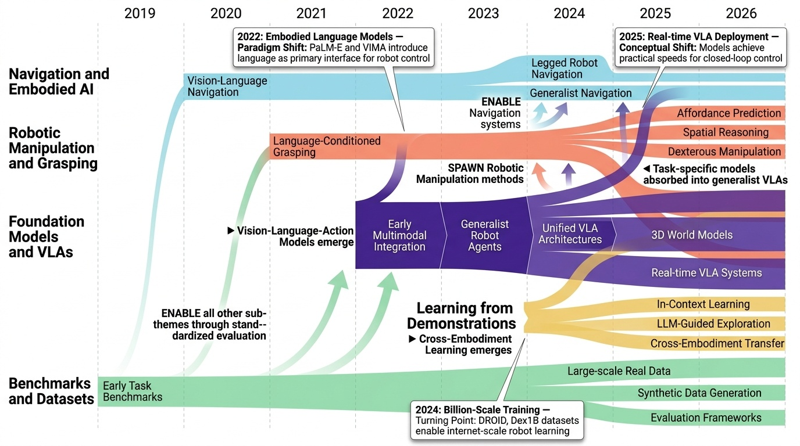
Category Overview
# Vision-Language-Action Learning 개요 Vision-Language-Action Learning (VLA)은 시각, 언어, 행동을 통합하는 로봇 학습 패러다임으로, 대규모 멀티모달 기반 모델(Foundation Models)을 통해 로봇의 일반화 능력을 향상시키는 분야입니다. 이 카테고리는 로봇 조작(Robotic Manipulation)과 파지(Grasping) 작업에서 시작하여 네비게이션(Navigation)과 구체화된 AI(Embodied AI)까지 확장되는 광범위한 연구를 포함합니다. 기반 모델 연구[1286][1301][1403][1410]에서는 오픈월드(Open-World) 환경에서 작동하는 VLA 모델들을 개발하고 있으며, 도메인 전이(Domain Transfer) 능력을 강화하기 위한 3D 장면 표현[1302]과 멀티태스크 학습 기법을 활용합니다. 로봇 조작 분야에서는 대규모 데이터셋[1372], 손가락 조작 작업[1354], 그래스핑 프레임워크[1356] 등을 통해 정교한 동작 제어를 실현하고 있습니다. 벤치마크와 데이터셋[1304][1306][1312][1347]은 VLA 모델의 성능을 평가하고 표준화하는 중요한 역할을 수행하며, 학습 모듈화(Modular Learning)[1333]와 데모로부터의 학습(Learning from Demonstrations)[1318] 방식이 샘플 효율성을 개선합니다. 네비게이션과 구체화 AI 연구에서는 동적 환경 이해[1374], 미래 공간 예측[1384][1385], 시각-추론-결정의 통합[1399]과 같은 고급 기술들이 로봇의 자율성과 적응력을 극대화하고 있습니다. 추가적으로 월드 모델링(World Modeling)[1359], 탐색 강화[1389], 에너지 효율성[1384] 등의 보완 기술들이 VLA 시스템의 실용성을 강화하고 있습니다.
- Foundation Models and VLAs: Foundation Models and VLAs는 시각-언어-동작 학습의 핵심 영역으로, 다양한 로보틱스 작업을 통합적으로 처리할 수 있는 기초 모델들을 다룹니다. 이 분야의 연구들은 대규모 데이터셋과 다중모달(multimodal) 학습을 통해 일반화된 구현 능력(generalist robotic capabilities)을 구축하는 것을 목표로 합니다. [1286]의 π₀.₅와 [1403]의 Gemini Robotics 1.5와 같은 모델들은 개방형 세계 환경(open-world environments)에서 광범위한 로봇 작업을 수행할 수 있도록 설계되었습니다. [1385]의 EO-1과 [1410]의 GR-3와 같은 통합 기초 모델들은 구체화된 AI(embodied AI) 시스템의 발전을 통해 로봇 조작, 네비게이션, 복합 추론 등 다양한 능력을 단일 모델에서 통합합니다. 이러한 Foundation Models and VLAs의 발전은 로봇 학습의 확장성(scalability)과 효율성을 크게 향상시키며, 실제 로봇 시스템의 실용화를 가능하게 합니다.
- Robotic Manipulation and Grasping: # Robotic Manipulation and Grasping (로봇 조작 및 파지) 로봇의 물체 조작(manipulation)과 파지(grasping) 능력을 향상시키기 위해 비전-언어-액션(Vision-Language-Action) 학습을 적용하는 연구 분야이다. [1333]의 CLIPort는 What and Where 경로 방식으로 로봇의 인지 및 행동을 분리하여 조작 성능을 개선했으며, [1413]의 GraspVLA는 10억 개의 대규모 시연(demonstrations) 데이터를 통해 범용 파지 파운데이션 모델(foundation model)을 구축했다. [1354]의 Dex1B는 손가락 조작(dexterous manipulation)을 위해 대규모 데이터셋 학습을 활용했고, [1356]의 DexGraspVLA는 복잡한 손가락 움직임을 위한 통합 프레임워크를 제시했다. 또한 [1374]의 DynamicVLA와 [1438]의 InternVLA-M1 같은 연구들은 동적 환경에서의 조작과 공간 가이드(spatial guidance)를 통한 성능 향상을 시도하고 있다. 이러한 연구들은 언어 이해, 시각 인식, 로봇 행동을 통합하여 보다 안정적이고 일반화된 로봇 조작 능력을 개발하는 것을 목표로 한다.
- Benchmarks and Datasets: Vision-Language-Action Learning의 Benchmarks and Datasets 부문은 로봇 학습과 멀티모달 AI 연구를 위한 표준화된 평가 환경을 제공합니다. [1304]와 [1312]는 각각 자연언어 지시(grounded instructions)를 따르는 에이전트와 대규모 실제 환경(in-the-wild) 로봇 조작 데이터를 기반으로 한 벤치마크를 제시합니다. [1372]와 [1466]은 로봇 매니퓰레이션(manipulation) 작업에서 비전-랭귀지 모델(vision-language models)의 성능을 평가하기 위한 실제 데이터셋과 저수준 작업(low-level task) 평가 지표를 제공합니다. [1531]과 [1417]은 RLBench와 GRUtopia 같은 대규모 시뮬레이션 환경을 통해 로봇 학습(robot learning)을 위한 통일된 학습 플랫폼을 구축하고 있습니다. 이러한 벤치마크와 데이터셋들은 멀티모달 AI와 로봇 조작 연구의 발전을 촉진하는 핵심 기반시설 역할을 합니다.
- Learning from Demonstrations: # Learning from Demonstrations Learning from Demonstrations (시연 학습)는 로봇이 인간의 시연(demonstration) 데이터로부터 직접 학습하여 조작 및 네비게이션 작업을 수행하는 비전-언어-행동 학습의 핵심 분야이다. 이 접근법은 강화학습(Reinforcement Learning)의 높은 샘플 복잡도(sample complexity) 문제를 해결하면서 소수의 시연만으로도 효과적인 정책(policy)을 학습할 수 있다는 장점을 제공한다. [1433]에서 제시된 In-Context Imitation Learning은 다음 토큰 예측(next-token prediction) 기반의 새로운 패러다임을 제안하며, [1558]에서는 정밀한 조작(precise manipulation) 작업을 위해 적은 수의 시연으로부터 학습하는 RVT-2 방식을 소개한다. 추가로 [1447]의 Latent Action Diffusion과 [1302]의 Adapt3R 같은 연구들은 도메인 전이(domain transfer)와 구현체 간 학습(cross-embodiment learning)을 가능하게 함으로써 시연 학습의 적용 범위를 확장하고 있다. 이러한 발전들은 로봇 학습의 실용성과 확장성(scalability)을 크게 향상시키고 있다.
- Navigation and Embodied AI: 네비게이션과 구체화된 인공지능(Embodied AI)은 비전-언어-행동 학습의 핵심 분야로, 로봇이 자연어 지시를 이해하고 이를 실제 행동으로 변환하여 환경을 자율적으로 탐색하는 능력을 다룬다. [1432]와 [1461]의 연구들은 대규모 사전학습 모델(Large Pre-Trained Models)을 활용하여 비전과 언어 정보를 효과적으로 결합함으로써 네비게이션 성능을 향상시키는 방법을 제시한다. [1491]의 NaVILA와 [1499]의 OmniVLA 같은 다중모달 모델(Multimodal Models)은 이족 로봇(Legged Robot)을 포함한 다양한 구체화된 에이전트가 복잡한 환경에서 일반화된 행동을 수행하도록 학습시킨다. [1497]의 OctoNav와 [1568]의 테스트-타임 적응(Test-Time Adaptation) 프레임워크는 미지의 환경에 대한 적응성을 강화하여 실제 배포 상황에서의 로봇 네비게이션 견고성을 높인다.
⚠ 갭: 복잡한 실세계 환경에서의 일반화와 도메인 적응 능력이 여전히 부족하다.
🏛 정책: 차세대 로봇 AI의 핵심 기술인 VLA 모델 개발에 대한 전략적 투자와 인재 양성이 시급하다.
$π_{0.5}$: a Vision-Language-Action Model with Open-World Generalization

Fig. 1: The π0.5 model transfers knowledge from a heterogeneous range of data sources, including other robots, high-leve
 *Fig. 1: The π0.5 model transfers knowledge from a heterogeneous range of data sources, including other robots, high-leve* π0.5는 heterogeneous한 다중 데이터 소스(다양한 로봇, 웹 데이터, 의미론적 예측)에서 co-training하여 실제 가정에서 장시간의 복잡한 조작 작업을 수행할 수 있는 Vision-Language-Action 모델이다.
π0.5는 heterogeneous 데이터 소스의 체계적 통합을 통해 VLA 모델의 실제 환경 일반화 문제를 처음으로 실질적으로 해결한 성과이며, 계층적 의미론적 구조와 co-training 프레임워크는 로봇 학습의 중요한 설계 원칙을 제시한다.
A3VLM: Actionable Articulation-Aware Vision Language Model

Figure 1. Sequential inference with prompts. To answer the first question, A3VLM identifies the corresponding action typ
 *Figure 2. Articulation Representation in A3VLM* A3VLM은 로봇 중심의 행동 학습 대신 물체 중심의 관절 구조(articulation)와 행동 가능성(affordance)을 인식하는 Vision Language Model로, 비용이 많이 드는 로봇 상호작용 데이터 수집을 최소화하면서도 다양한 로봇에 적용 가능한 표현을 학습한다.
A3VLM은 로봇 조작 문제에 대한 object-centric 패러다임을 제시하며, VLM을 활용하여 물체의 관절 구조와 행동 가능성을 효과적으로 인식하는 혁신적인 접근법이다. 비용 효율성, 로봇 독립성, 실제 환경에서의 강건성을 동시에 달성하여 실용적 가치가 높고 후속 연구에 큰 영감을 줄 수 있는 의미 있는 기여이다.
D2E: Scaling Vision-Action Pretraining on Desktop Data for Transfer to Embodied AI

Figure 1: Overview of D2E framework. (1) The OWA Toolkit captures 335.6 hours of rich desktop demon-
 *Figure 1: Overview of D2E framework. (1) The OWA Toolkit captures 335.6 hours of rich desktop demon-* D2E는 데스크톱 환경(게임 등)에서 수집한 대규모 비전-액션 데이터를 사전학습 자료로 사용하여 로봇 조작 및 네비게이션 같은 구체화된 AI 작업으로 전이 학습하는 프레임워크를 제시한다.
D2E는 데스크톱 환경을 구체화 AI의 실질적 사전학습 자료로 확립하는 종합 프레임워크를 제시하며, 공개 자료와 효율적 도구(OWA, Generalist-IDM, VAPT)를 통해 재현성과 실용성을 담보한다. 데이터 수집 비용 대비 로봇 성능의 우수한 달성은 AI 구체화 연구의 확장성 문제에 획기적 해결책을 제공한다.
Diffusion for World Modeling: Visual Details Matter in Atari

Figure 1: Unrolling imagination of DIAMOND
 *Figure 1: Unrolling imagination of DIAMOND* DIAMOND는 diffusion model을 기반으로 한 world model을 제안하여 RL 에이전트를 학습시키며, 이산 잠재 변수 기반 방식보다 시각적 세부 정보를 더 잘 보존함으로써 Atari 100k 벤치마크에서 새로운 최고 성능을 달성한다.
DIAMOND는 diffusion model을 world modeling에 체계적으로 적용하여 시각적 세부 정보 보존의 중요성을 입증하며, Atari 100k 벤치마크의 새로운 최고 성능과 다양한 응용을 통해 실질적인 가치를 제시한다.
EnerVerse: Envisioning Embodied Future Space for Robotics Manipulation

Figure 1: An overview of ENERVERSE. With camera ob-
 *Figure 1: An overview of ENERVERSE. With camera ob-* EnerVerse는 chunk-wise autoregressive video diffusion과 sparse memory를 활용하여 instruction으로부터 embodied future space를 예측하고, multi-view video generation과 4D Gaussian Splatting 기반 data flywheel을 통해 로봇 조작을 위한 generative foundation model을 제시한다.
EnerVerse는 video diffusion을 로봇 조작에 체계적으로 align하면서 3D spatial prior 학습과 data flywheel을 통해 sim-to-real gap을 해결하는 포괄적인 framework를 제시하며, chunk-wise autoregressive와 sparse memory 설계는 독창적이고 실용적이다.
EO-1: An Open Unified Embodied Foundation Model for General Robot Control

Figure 1: EO-1 Model Architecture. EO-1 model is a Vision-Language-Action (VLA) model that adopts a
 *Figure 1: EO-1 Model Architecture. EO-1 model is a Vision-Language-Action (VLA) model that adopts a* EO-1은 interleaved vision-text-action 사전학습을 통해 multimodal embodied reasoning과 robot control을 통합한 unified embodied foundation model이며, 1.5M 샘플의 EO-Data1.5M 데이터셋과 함께 개발되었다.
EO-1은 interleaved vision-text-action pretraining paradigm을 통해 embodied AI의 근본적인 문제인 reasoning-acting integration을 우아하게 해결하며, 1.5M 규모의 고품질 dataset과 unified architecture의 결합으로 open-world robot control에서 significant advancement를 제시한다. 전체 toolchain의 open release는 community에 substantial contribution을 제공한다.
Gemini Robotics 1.5: Pushing the Frontier of Generalist Robots with Advanced Embodied Reasoning, Thinking, and Motion Transfer

Figure 1 | The Gemini Robotics 1.5 family of models consists of Gemini Robotics 1.5, a VLA, and Gemini
 *Figure 1 | The Gemini Robotics 1.5 family of models consists of Gemini Robotics 1.5, a VLA, and Gemini* Gemini Robotics 1.5는 Motion Transfer 메커니즘과 embodied thinking 능력을 통해 다중 로봇 플랫폼을 제어할 수 있는 Vision-Language-Action 모델이며, Gemini Robotics-ER 1.5는 embodied reasoning에서 최첨단 성능을 달성하는 Vision-Language 모델이다.
Gemini Robotics 1.5는 Motion Transfer, Thinking VLA, embodied reasoning의 세 가지 핵심 혁신을 통해 범용 로봇의 일반화 능력과 추론 능력을 크게 향상시켰으며, multi-embodiment 제어와 zero-shot skill transfer라는 실질적 성과로 로봇 AI의 새로운 경계를 제시한다.
GR-3 Technical Report

Figure 1 Overview. GR-3 is able to learn from three types of data: vision-language data, robot trajectory data,
 *Figure 1 Overview. GR-3 is able to learn from three types of data: vision-language data, robot trajectory data,* GR-3는 vision-language-action (VLA) 모델로, 웹 규모 vision-language 데이터와 로봇 궤적 데이터의 co-training을 통해 일반화 능력, 효율적 미세조정, 장기 지평 작업 수행 능력을 갖춘 범용 로봇 정책을 구현한다.
GR-3는 co-training, auxiliary supervision, VR 기반 효율적 적응 등 여러 혁신 기법을 종합한 실질적으로 견고한 VLA 모델로서, 장기 지평과 정교한 조작 작업에서 SOTA를 달성했으나, 평가 범위의 제한과 부분적 ablation 분석으로 인해 완전한 기여 명확화에는 다소 미흡하다.
InstructVLA: Vision-Language-Action Instruction Tuning from Understanding to Manipulation

Figure 1: Method overview. InstructVLA integrates vision-language understanding with precise
 *Figure 1: Method overview. InstructVLA integrates vision-language understanding with precise* InstructVLA는 Vision-Language Model의 추론 능력을 보존하면서 로봇 조작 성능을 달성하는 end-to-end VLA 모델이며, Vision-Language-Action Instruction Tuning (VLA-IT) 패러다임을 통해 multimodal reasoning과 action generation을 동시에 최적화한다.
InstructVLA는 VLA 분야에서 multimodal reasoning과 precise action generation의 균형을 이루는 중요한 진전을 보여주며, VLA-IT 패러다임과 mixture-of-experts 통합 방식은 신선한 기술적 기여를 제시한다. 다만 real-world 검증 범위와 open-world generalization에 대한 추가 평가가 필요하다.
IPR-1: Interactive Physical Reasoner

 *Figure 5. IPR training pipeline. Stage 1: PhysCode pre-training. Video clips with optical flow and action semantics are * Interactive Physical Reasoner (IPR)는 VLM의 정책을 world model의 롤아웃으로 강화하여 상호작용을 통해 물리 추론 능력을 학습하는 에이전트이다. PhysCode라는 물리 중심 액션 코드를 도입하여 의미론적 의도와 역학을 정렬하고, 1,000+ 게임으로 사전학습되어 물리 직관부터 목표 지향 추론까지 견고한 성능을 보인다.
IPR은 VLM과 world model을 물리 중심의 액션 공간으로 통합하는 혁신적 접근을 제시하며, 대규모 이질적 게임 벤치마크에서 우수한 성능과 전이 능력을 보였다. 상호작용 기반 물리 추론의 가능성을 효과적으로 입증했으나, 실제 로봇공학 환경으로의 확장 가능성과 계산 효율성에 대한 추가 검증이 필요하다.
JARVIS-1: Open-World Multi-task Agents with Memory-Augmented Multimodal Language Models

Figure 1 | How does JARVIS-1 unlock the technology tree of the Minecraft universe. JARVIS-1 can
 *Figure 1 | How does JARVIS-1 unlock the technology tree of the Minecraft universe. JARVIS-1 can* JARVIS-1은 multimodal language model과 multimodal memory를 결합하여 Minecraft의 오픈월드 환경에서 200개 이상의 다양한 작업을 수행할 수 있는 멀티태스크 에이전트이다. 특히 장기 작업(ObtainDiamondPickaxe)에서 기존 최신 에이전트 대비 5배 우수한 신뢰성을 달성한다.
JARVIS-1은 multimodal language model과 multimodal memory를 결합한 혁신적 설계로 오픈월드 에이전트의 다중 도전(multimodal perception, 장기 계획, lifelong learning)을 동시에 해결한 획기적 연구이다. Minecraft에서의 5배 성능 향상과 자율적 개선 능력은 일반화된 embodied AI 개발의 중요한 진전을 의미한다.
NORA-1.5: A Vision-Language-Action Model Trained using World Model- and Action-based Preference Rewards

Figure 1. Training pipeline of NORA-1.5 where firstly a VLA model is pre-trained through imitation learning and subseque
 *Figure 1. Training pipeline of NORA-1.5 where firstly a VLA model is pre-trained through imitation learning and subseque* NORA-1.5는 flow-matching 기반 action expert를 추가하여 VLA 모델의 성능을 향상시키고, world model 및 action-based reward를 이용한 DPO 기반 post-training으로 실제 로봇 환경에서의 신뢰성과 일반화 능력을 개선한다.
NORA-1.5는 flow-matching 기반 아키텍처 개선과 경량이면서도 효과적인 reward 기반 post-training을 결합하여 VLA 모델의 신뢰성과 실제 배포 가능성을 크게 향상시킨 의미 있는 연구이다. 광범위한 벤치마크에서의 성과와 확장 가능한 post-training 방법론은 embodied AI 분야에 실질적인 기여를 한다.
PaLM-E: An Embodied Multimodal Language Model

Figure 1: PaLM-E is a single general-purpose multimodal language model for embodied reasoning tasks, visual-language tas
 *Figure 1: PaLM-E is a single general-purpose multimodal language model for embodied reasoning tasks, visual-language tas* PaLM-E는 시각, 상태 추정, 텍스트 입력을 멀티모달 문장으로 인터리빙하여 LLM에 직접 통합하는 embodied multimodal language model이다. 이를 통해 로봇 조작 계획, VQA, 캡셔닝 등 다양한 embodied reasoning 작업을 수행할 수 있다.
PaLM-E는 LLM을 실제 로봇 제어에 처음으로 의미있게 적용한 획기적 연구로, 멀티모달 입력의 end-to-end 처리와 다중 도메인 양성 이전을 통해 embodied AI 분야의 새로운 패러다임을 제시한다. 562B 규모의 대규모 모델 구축과 실제 로봇 검증, 다양한 멀티모달 추론 능력의 입증은 매우 인상적이며, 로봇공학과 비전-언어 모델 분야에 상당한 영향을 미칠 것으로 예상된다.
Perceiver-Actor: A Multi-Task Transformer for Robotic Manipulation

Figure 1. Language-Conditioned Manipulation Tasks: PERACT is a language-conditioned multi-task agent capable of imitatin
 *Figure 2. PERACT Overview. PERACT is a language-conditioned behavior-cloning agent trained with supervised learning to d* 본 논문은 Perceiver Transformer를 사용하여 voxelized 3D 관찰과 이산화된 행동으로 6-DoF 로봇 조작을 수행하는 언어 조건화 행동 복제 에이전트 PerAct를 제안한다. 이 formulation은 2D 이미지 기반 접근법보다 훨씬 효율적이고 강력한 구조적 prior를 제공한다.
본 논문은 제한된 로봇 조작 데이터에서 Transformer의 강력함을 활용하기 위한 효과적인 formulation을 제시하며, voxel 기반 표현과 action-centric learning을 통해 데이터 효율성을 대폭 개선한다. 시뮬레이션과 실제 로봇에서 검증된 결과는 다중 작업 로봇 학습의 실용적 가능성을 잘 보여준다.
PointWorld: Scaling 3D World Models for In-The-Wild Robotic Manipulation

Figure 1. POINTWORLD is a large pre-trained 3D world model that predicts full-scene 3D point flows from a static point c
 *Figure 2. Overview of POINTWORLD. Given calibrated RGB-D,* PointWorld는 RGB-D 입력과 로봇 동작을 3D point flow로 통일하여 표현하고, 이를 통해 전체 장면의 3D 포인트 변위를 예측하는 대규모 사전학습 3D 월드 모델이다. 단일 체크포인트로 실제 로봇이 다양한 조작 작업을 수행할 수 있게 한다.
PointWorld는 상태-동작의 통일된 3D 표현, 대규모 고품질 데이터셋 구축, 체계적인 설계 원리 도출을 통해 일반목적 로봇 조작을 위한 scalable world modeling의 새로운 기준을 제시한다. Real robot에서의 zero-shot 성능은 3D 월드 모델의 실용성을 강력히 입증하며, 로봇 조작 커뮤니티에 significant impact를 미칠 것으로 예상된다.
RoboAgent: Generalization and Efficiency in Robot Manipulation via Semantic Augmentations and Action Chunking

Figure 1: A glimpse of the diverse manipulation capabilities of RoboAgent– a single agent capable of 12 ma-
 *Figure 2: Two stage framework: [Left] Semantic augmentation stage diversifies the robot data offline us-* RoboAgent는 semantic augmentation과 action chunking을 활용하여 7,500개의 데모만으로 12개의 조작 스킬을 수행하는 범용 로봇 조작 에이전트를 학습한다.
이 논문은 제한된 데이터 예산에서 실질적인 로봇 조작 능력을 달성하는 실용적인 방법을 제시하며, semantic augmentation과 action chunking의 조합이 효과적임을 입증하였다. 오픈소스 데이터셋 공개와 함께 로봇 학습 분야에 중요한 기여를 한다.
RoboBrain: A Unified Brain Model for Robotic Manipulation from Abstract to Concrete

Figure 1. Overview of RoboBrain. RoboBrain consists of three key robotic capabilities: planning capability, affordance p
 *Figure 1. Overview of RoboBrain. RoboBrain consists of three key robotic capabilities: planning capability, affordance p* RoboBrain은 로봇 조작을 위해 Planning Capability, Affordance Perception, Trajectory Prediction의 세 가지 핵심 능력을 갖춘 통합 MLLM 모델이며, 이를 학습하기 위해 ShareRobot이라는 대규모 고품질 이질 데이터셋을 제시한다.
RoboBrain은 로봇 조작을 위한 세 가지 핵심 능력을 체계적으로 정의하고 이를 통합한 MLLM과 고품질 데이터셋을 함께 제시하여, 로봇 AI의 구체적 실행 능력 향상에 의미 있는 기여를 한다.
RoboCat: A Self-Improving Generalist Agent for Robotic Manipulation

Figure 1: The self-improvement process. RoboCat is a multi-task, multi-embodiment visual goal-conditioned
 *Figure 1: The self-improvement process. RoboCat is a multi-task, multi-embodiment visual goal-conditioned* RoboCat는 서로 다른 로봇과 작업 경험을 활용하여 다중 embodiment과 다중 작업을 처리할 수 있는 시각 기반 goal-conditioned decision transformer 기반의 자가 개선 로봇 조작 에이전트이다. 100-1000개의 예제만으로 새로운 작업과 로봇에 적응하며, 자체 생성 데이터를 이용한 반복적 개선이 가능하다.
RoboCat는 foundation model 패러다임을 로봇 조작에 성공적으로 적용하여 이질적 embodiment 처리, 효율적 적응, 자가 개선을 동시에 달성한 획기적 연구이다. 광범위한 실험 검증과 명확한 presentation이 강점이나, 복잡도 증가와 장기 scaling에 대한 분석이 향후 과제이다.
Robotic Control via Embodied Chain-of-Thought Reasoning

Figure 1:
 *Figure 1:* Vision-language-action (VLA) 모델에 embodied chain-of-thought 추론을 도입하여 로봇 정책이 행동 예측 전에 계획, 부작업, 움직임, 시각적 특징에 대해 다단계 추론을 수행하도록 훈련시킨다. 합성 데이터 생성 파이프라인을 통해 OpenVLA의 절대 성공률을 28% 향상시켰다.
이 논문은 로봇 제어에 chain-of-thought 추론을 창의적으로 적용하면서 시각적 근거화를 통해 실제 로봇 정책의 일반화를 현저히 개선했다. 합성 데이터 생성 파이프라인과 함께 해석 가능성 향상은 실제 로봇 응용에 큰 가치를 제공한다.
Running VLAs at Real-time Speed

 *Figure 2. Breakdown of the model running time. From a plain* π0 레벨의 multi-view VLA를 단일 소비자 GPU에서 30Hz 프레임 레이트로 실행하기 위해 모델 추론 오버헤드를 제거하는 최적화 기법들을 제시하고, 실시간 로봇 제어를 위한 Full Streaming Inference 프레임워크를 제안한다.
본 논문은 VLA의 실시간 실행이 불가능하다는 기존 인식을 깨고, 체계적인 엔지니어링 기법들을 통해 30Hz 실시간 처리를 달성함으로써 로봇 제어의 새로운 가능성을 제시한다. 단순하지만 효과적인 최적화 기법들과 Full Streaming Inference 프레임워크는 실용적 가치가 높으며, 구체적인 코드 공개는 재현성을 보장한다.
Scaling Instructable Agents Across Many Simulated Worlds

Figure 1 | Overview of SIMA. In SIMA, we collect a large and diverse dataset of gameplay from both
 *Figure 1 | Overview of SIMA. In SIMA, we collect a large and diverse dataset of gameplay from both* SIMA는 키보드-마우스 인터페이스를 통해 자연어 명령을 따르는 embodied AI 에이전트를 다양한 3D 환경(연구용 환경 및 상업 비디오 게임)에서 학습시키는 프로젝트이다. 이는 언어를 지각과 구현된 행동에 그라운딩하여 일반적인 embodied AI 개발을 목표로 한다.
SIMA는 대규모 다양한 환경에서 자연어 명령을 따르는 embodied AI 에이전트 개발이라는 야심찬 목표를 제시하며, 통일된 인터페이스와 최소 가정을 유지하면서 스케일을 확대한 점에서 창의적이다. 다만 구체적인 정량적 성과 제시 부족과 현재 달성 수준의 명확한 평가가 필요하다.
SKT: Integrating State-Aware Keypoint Trajectories with Vision-Language Models for Robotic Garment Manipulation

Fig. 1.
 *Fig. 2.* 본 논문은 Vision-Language Model(VLM)을 활용한 State-aware Keypoint Trajectories(SKT)를 제안하여 다양한 의류 상태에서 로봇의 의류 조작 성능을 향상시킨다. 합성 데이터셋을 통해 단일 모델로 여러 의류 유형을 처리할 수 있는 통합 접근법을 구현한다.
본 논문은 VLM을 의류 조작에 창의적으로 적용하여 단일 모델로 다양한 의류 상태를 처리하는 혁신적 접근법을 제시한다. 합성 데이터 활용과 reasoning 기반 설계로 확장성과 적응성을 크게 개선하여 assistive robotics 분야에 중요한 기여를 한다.
SpatialVLA: Exploring Spatial Representations for Visual-Language-Action Model

Fig. 1: We present SpatialVLA, a spatial-enhanced vision-language-action model that is trained on 1.1 Million real robot
 *Fig. 2: Overview of SpatialVLA. Given an image observation ot and a task instruction L, the model processes the image* 로봇 조작을 위한 3D 공간 이해를 강화한 VLA 모델 SpatialVLA를 제안하며, Ego3D Position Encoding과 Adaptive Action Grids를 통해 이질적인 로봇 간 일반화 가능한 공간 표현을 학습한다.
본 논문은 VLA 모델에 체계적인 3D 공간 이해를 도입하고 이질적 로봇 간 일반화를 달성한 중요한 기여를 제시하며, 광범위한 실험을 통해 제안 방법의 효과를 입증했으나, 카메라 의존성과 이산화 해상도 제약 등의 한계가 존재한다.
TidyBot: Personalized Robot Assistance with Large Language Models

Fig. 1 We study the task of household cleanup, where each
 *Fig. 1 We study the task of household cleanup, where each* 이 논문은 대규모 언어모델(LLM)의 요약 능력을 활용하여 로봇이 적은 수의 예시로부터 사용자의 개인화된 물건 정리 선호도를 학습하고 일반화할 수 있음을 보여준다. TidyBot이라는 실제 모바일 매니퓨레이터에서 91.2% 벤치마크 정확도와 85.0% 실제 환경 성공률을 달성했다.
이 논문은 LLM의 요약 능력을 로봇 개인화 문제에 창의적으로 적용하여 데이터 효율적이고 해석 가능한 솔루션을 제시했다. 실제 로봇 시스템에서의 검증과 공개 데이셋 제공으로 실용성과 재현성을 담보하였으며, 서비스 로봇 개인화 분야에 중요한 기여를 한다.
TraceVLA: Visual Trace Prompting Enhances Spatial-Temporal Awareness for Generalist Robotic Policies

Figure 1: An illustration of our method. The first image shows the original robot’s observation, while the second
 *Figure 1: An illustration of our method. The first image shows the original robot’s observation, while the second* Visual trace prompting 기법을 통해 VLA 모델의 spatial-temporal 인식을 향상시켜 로봇 조작 작업의 성능을 개선한 연구이다. 150K 로봇 조작 궤적 데이터셋을 수집하고 TraceVLA 모델을 개발하여 시뮬레이션과 실제 로봇 환경에서 우수한 성능을 입증했다.
Visual trace prompting은 직관적이면서도 효과적인 기법으로, VLA 모델의 공간-시간 인식을 실질적으로 개선하며 광범위한 실험(시뮬레이션 및 실제 로봇)을 통해 우수한 성능을 일관되게 입증했다. ICLR 2025 게재 논문으로서 로봇 조작 분야의 실질적 기여도가 높다.
Transferring Foundation Models for Generalizable Robotic Manipulation

Figure 1. A demonstration of our task. Receiving human instruction “I want to take a shower”, our model can reason out t
 *Figure 2. Our model comprises four components: (1) GPT-4 reasons target objects based on human demands. (2) A multi-moda* 인터넷 규모의 기초 모델(foundation models)에서 생성된 언어-추론 기반 분할 마스크를 활용하여 로봇 조작 작업을 조건화함으로써 샘플 효율적인 일반화를 달성하는 패러다임을 제안한다.
기초 모델의 지식을 체계적으로 로봇 조작에 통합하는 실질적인 패러다임을 제시하였으며, 언어-추론 마스크라는 새로운 조건화 모달리티와 two-stream 정책 모델로 샘플 효율적 일반화를 달성한 의미 있는 기여를 했다.
Unified Vision-Language-Action Model

Figure 1: We present UniVLA, a unified vision-language-action model. Unlike prior VLA
 *Figure 1: We present UniVLA, a unified vision-language-action model. Unlike prior VLA* UniVLA는 vision, language, action을 discrete token으로 통일하여 autoregressive sequence modeling으로 joint하게 학습하는 unified vision-language-action model이다. World model을 post-training에 통합하여 비디오에서 temporal dynamics를 학습하고 downstream policy learning을 강화한다.
UniVLA는 heterogeneous modalities를 unified discrete token 프레임워크로 통합하고 world model post-training으로 temporal dynamics를 학습하는 혁신적인 VLA 모델이다. 다중 벤치마크에서 SOTA 성능을 달성했으며, multimodal capability와 large-scale video training 가능성으로 generalist embodied AI의 새로운 방향을 제시한다.
VIMA: General Robot Manipulation with Multimodal Prompts

Figure 1: Multimodal prompts for task specification. We observe that many robot manipulation tasks can be expressed as
 *Figure 1: Multimodal prompts for task specification. We observe that many robot manipulation tasks can be expressed as* 멀티모달 프롬프트(텍스트와 이미지 혼합)를 사용하여 다양한 로봇 조작 작업을 통일된 시퀀스 모델링 문제로 표현하고, 이를 처리할 수 있는 transformer 기반 로봇 에이전트 VIMA를 제시한다.
멀티모달 프롬프트를 통해 다양한 로봇 조작 작업을 통일된 프레임워크로 표현한 획기적 접근법으로, 체계적인 벤치마크와 함께 높은 일반화 성능을 달성하였다. 로봇 학습의 task specification 문제에 대한 창의적 해결책을 제시하며 개방형 재현 자료를 통해 커뮤니티 기여도 높다.
Visual Embodied Brain: Let Multimodal Large Language Models See, Think, and Control in Spaces

Figure 1: Overview of VeBrain and VeBrain-600k. Compared to existing MLLMs, VeBrain achieves
 *Figure 1: Overview of VeBrain and VeBrain-600k. Compared to existing MLLMs, VeBrain achieves* VeBrain은 멀티모달 대형 언어 모델(MLLM)을 지각, 추론, 제어 기능으로 통합하는 프레임워크이며, 로봇 제어 작업을 2D 시각 공간의 텍스트 기반 MLLM 작업으로 재구성합니다.
VeBrain은 멀티모달 이해와 로봇 제어를 2D 시각 공간의 공통 MLLM 작업으로 통합하는 혁신적인 접근으로, 광범위한 벤치마크와 로봇 실험에서 우수한 성능을 입증하며 구체화된 AI의 중요한 진전을 나타냅니다.
Visual Instruction Tuning

Figure 1: LLaVA network architecture.
 *Figure 1: LLaVA network architecture.* 언어 전용 GPT-4를 활용하여 다중모달 시각-언어 명령어 추종 데이터를 생성하고, 이를 통해 vision encoder와 LLM을 연결한 end-to-end 다중모달 모델 LLaVA를 제시한다.
본 논문은 다중모달 명령어 튜닝이라는 미개척 영역에 처음으로 체계적으로 접근하였으며, GPT-4를 활용한 효율적인 데이터 생성 방법과 end-to-end 다중모달 모델 학습을 통해 뛰어난 성능을 달성했다. 오픈소스 공개와 함께 시각-언어 이해의 일반 목적 어시스턴트 개발에 중요한 기초를 마련한 영향력 있는 연구이다.
VLA-0: Building State-of-the-Art VLAs with Zero Modification

Fig. 1: Schematic representation of VLA-0. VLA-0 con-
 *Fig. 1: Schematic representation of VLA-0. VLA-0 con-* VLA-0는 Vision-Language Model의 구조 변경 없이 액션을 직접 텍스트로 표현하여 로봇 조작을 위한 최첨단 Vision-Language-Action 모델을 구축한다. 이 단순한 설계가 기존의 복잡한 방법들보다 우수한 성능을 달성한다.
VLA-0는 예상을 뒤엎고 가장 단순한 설계가 최첨단 성능을 달성 가능함을 입증하여 VLA 분야에 중요한 통찰을 제공한다. 코드와 모델 공개를 통한 재현성과 실용성이 높으며, VLM 기반 로봇 제어 연구에 새로운 방향을 제시한다.
World Simulation with Video Foundation Models for Physical AI

Figure 1: Our video curation pipeline transforms raw, unstructured video data from diverse real-world sources
 *Figure 2: Overall architecture of [Cosmos-Predict2.5]. As shown on the right, in the latent space, the model* Cosmos-Predict2.5는 flow-based architecture 기반의 세계 시뮬레이션 기초 모델로, Text2World, Image2World, Video2World 생성을 단일 모델에 통합하여 로보틱스와 자율주행 시스템을 위한 합성 데이터 생성과 폐루프 시뮬레이션을 가능하게 한다.
본 논문은 Physical AI 시뮬레이션을 위한 통합된 flow-based 기초 모델을 제시하며, 대규모 데이터, 개선된 아키텍처, 정교한 post-training을 통해 실질적인 성능 향상을 달성했다. 오픈소스 공개로 embodied intelligence 연구의 접근성을 크게 높일 것으로 예상된다.
Adapt3R: Adaptive 3D Scene Representation for Domain Transfer in Imitation Learning

Figure 1: (a) Adapt3R facilitates zero-shot transfer to novel embodiments and viewpoints. (b) Adapt3R can
 *Figure 2: Adapt3R extracts scene representations from RGBD inputs for use with a variety of imitation learning* Adapt3R는 calibrated RGBD 카메라로부터 3D 장면 표현을 추출하여 모방 학습(IL) 알고리즘의 조건으로 사용하는 관찰 인코더이며, pretrained 2D backbone으로 의미론적 정보를 추출하고 3D 정보는 end-effector에 상대적인 localization에만 사용하여 novel embodiment과 camera viewpoint으로의 zero-shot transfer를 실현한다.
Adapt3R은 semantic 정보와 3D localization을 명확히 분리하는 설계 철학으로 기존 3D 기반 방법의 한계를 체계적으로 해결하며, 광범위한 실험과 실제 성과로 multitask imitation learning에서 embodiment과 viewpoint generalization의 중요한 진전을 이루었다.
Being-H0.5: Scaling Human-Centric Robot Learning for Cross-Embodiment Generalization

Figure 1: Being-H0.5 at a Glance. We scale human-centric robot learning with Being-H0.5 toward
 *Figure 1: Being-H0.5 at a Glance. We scale human-centric robot learning with Being-H0.5 toward* Being-H0.5는 인간 중심 학습 패러다임과 통합 액션 공간을 활용하여 다양한 로봇 플랫폼 간 일반화를 가능하게 하는 기초 Vision-Language-Action 모델이다. 35,000시간 이상의 멀티모달 데이터로 구성된 UniHand-2.0을 통해 30개의 로봇 플랫폼에서 강력한 cross-embodiment 성능을 달성한다.
Being-H0.5는 인간 중심 학습 패러다임과 대규모 통합 데이터셋을 활용하여 cross-embodiment 로봇 일반화의 중요한 진전을 이룬 의미 있는 연구이며, Mixture-of-Flow, Manifold-Preserving Gating 등의 기술 혁신과 실세계 배포 성공이 로봇공학의 확장성 문제를 해결하는 데 기여한다.
ExploRLLM: Guiding Exploration in Reinforcement Learning with Large Language Models

Fig. 1: Graphical overview of ExploRLLM.
 *Fig. 1: Graphical overview of ExploRLLM.* ExploRLLM은 대규모 언어 모델(LLM)이 생성한 정책 코드로 RL 에이전트의 탐색을 유도하면서, 잔차 RL 에이전트가 FM의 물리적 이해 부족을 보완하는 방식으로 로봇 조작 작업의 샘플 효율성과 수렴성을 개선한다.
ExploRLLM은 FM과 RL의 장점을 효과적으로 결합하여 로봇 조작의 샘플 효율성을 크게 개선하는 실용적인 방법을 제시하며, 특히 LLM 기반 탐색 전략의 혁신성과 실제 로봇에서의 zero-shot 전이 성공은 높은 가치를 가진다. 다만 평가 범위 확대와 일반화 가능성 검증이 필요하다.
In-Context Imitation Learning via Next-Token Prediction

Fig. 1: In-Context Robot Transformer (ICRT): A robot foundation model with in-context imitation learning capabilities. I
 *Fig. 1: In-Context Robot Transformer (ICRT): A robot foundation model with in-context imitation learning capabilities. I* 로봇이 새로운 작업을 수행할 때 정책 파라미터 업데이트 없이 입력 단계에서 제공된 문맥 정보를 해석하는 In-Context Robot Transformer (ICRT)를 제안한다. ICRT는 감각-운동 궤적에 대한 자동회귀 다음-토큰 예측을 통해 훈련 없이 새로운 작업을 유연하게 실행할 수 있다.
ICRT는 실제 로봇에서 처음으로 효과적인 문맥 내 학습을 보여주며, 간단한 다음-토큰 예측 프레임워크로 복잡한 시연 기반 학습을 가능하게 한다. 로봇 기초 모델의 실용성을 크게 향상시키는 의미 있는 기여이나, 일반화 범위와 기술적 깊이 면에서 추가 검증이 필요하다.
Latent Action Diffusion for Cross-Embodiment Manipulation

Fig. 1: Overview of our approach. Left: We construct a semantically aligned latent action space by training modality-spe
 *Fig. 1: Overview of our approach. Left: We construct a semantically aligned latent action space by training modality-spe* 로봇의 다양한 end-effector 간 action space 이질성을 극복하기 위해 contrastive learning으로 학습된 shared latent action space에서 diffusion policy를 학습하여 cross-embodiment 조작을 실현한다.
Cross-embodiment 로봇 학습의 action space 이질성 문제를 learned latent representation으로 우아하게 해결하고, contrastive learning과 diffusion policy를 조합하여 실제 성능 향상을 입증한 가치있는 연구이다. 다만 embodiment 다양성 범위 확대와 alignment 메커니즘의 더 깊은 분석이 후속 과제이다.
RVT-2: Learning Precise Manipulation from Few Demonstrations

Fig. 1: RVT-2 performing high precision tasks. Given a language instruction, a single RVT-2 model can perform multiple 3
 *Fig. 1: RVT-2 performing high precision tasks. Given a language instruction, a single RVT-2 model can perform multiple 3* RVT-2는 적은 수의 시연으로부터 고정밀 3D 조작 작업을 학습할 수 있는 멀티태스크 로봇 조작 모델로, 이전 RVT 대비 6배 빠른 학습 속도와 2배 빠른 추론 속도를 달성하면서 RLBench에서 82%의 최고 성능을 달성했다.
RVT-2는 아키텍처와 시스템 최적화를 통해 고정밀 3D 조작에서 유의미한 성능 개선을 달성했으며, 적은 시연으로 실세계 정밀 작업을 수행할 수 있음을 처음 입증했다는 점에서 로봇 조작 분야에 중요한 기여를 한다.
ALFRED: A Benchmark for Interpreting Grounded Instructions for Everyday Tasks

Figure 1: ALFRED consists of 25k language directives
 *Figure 1: ALFRED consists of 25k language directives* ALFRED는 자연어 지시사항과 egocentric vision에서 가정용 작업을 위한 action sequence로의 매핑을 학습하기 위한 벤치마크로, 25k개의 자연어 지시문과 비가역적 상태 변화를 포함하여 실제 로봇 응용과의 간극을 줄인다.
ALFRED는 자연언어에서 행동으로의 grounding 연구에 현실적인 도전 과제들을 종합적으로 제시하는 중요한 벤치마크이다. 고수준/저수준 언어 주석, 비가역적 상태 변화, pixelwise interaction mask 등의 혁신적 설계가 기존 데이터셋보다 실제 로봇 응용에 더 가깝다.
All Robots in One: A New Standard and Unified Dataset for Versatile, General-Purpose Embodied Agents

Figure 1. All robots in one.
 *Figure 1. All robots in one.* ARIO는 로봇 embodied AI 에이전트 학습을 위한 통합 데이터 표준과 약 300만 에피소드의 대규모 데이터셋으로, 258개 로봇 시리즈와 5가지 감각 모달리티를 포함하여 범용적이고 강건한 로봇 에이전트 개발을 가능하게 한다.
ARIO는 embodied AI 분야의 근본적인 데이터 표준화 문제를 해결하고 최초의 포괄적 멀티모달 대규모 통합 데이터셋을 제공하여 범용 로봇 에이전트 개발에 중대한 기여를 한다. 다만 제시된 데이터셋으로 학습한 에이전트의 실제 성능 벤치마크가 부재한 점이 아쉽지만, 데이터 표준과 인프라 자체의 가치는 매우 높다.
ARNOLD: A Benchmark for Language-Grounded Task Learning With Continuous States in Realistic 3D Scenes

Figure 1. The ARNOLD benchmark for language-grounded task learning with continuous states in realistic 3D scenes. ARNOLD
 *Figure 1. The ARNOLD benchmark for language-grounded task learning with continuous states in realistic 3D scenes. ARNOLD* ARNOLD은 현실적인 3D 장면에서 연속적 객체 상태를 이해하고 언어 기반 조작 작업을 학습하는 로봇을 평가하기 위한 벤치마크이다. 8개의 언어 조건부 작업과 세밀한 물리 시뮬레이션, 다양한 장면과 객체로 구성되어 있다.
ARNOLD은 언어 기반 로봇 작업 학습에서 연속적 객체 상태 이해와 일반화 능력 평가라는 중요한 공백을 채우는 포괄적이고 잘 설계된 벤치마크이다. 현실적 물리 시뮬레이션과 체계적인 평가 프레임워크를 통해 기존 방법의 한계를 명확히 드러내고, 향후 연구에 실질적인 기여를 할 수 있는 가치 있는 자원이다.
DROID: A Large-Scale In-The-Wild Robot Manipulation Dataset

Fig. 1: We introduce DROID (Distributed Robot Interaction Dataset), an “in-the-wild” robot manipulation dataset with 76k
 *Fig. 1: We introduce DROID (Distributed Robot Interaction Dataset), an “in-the-wild” robot manipulation dataset with 76k* DROID는 북미, 아시아, 유럽의 564개 장면과 86개 작업에서 수집한 76k개의 시연 궤적(350시간)을 포함하는 대규모 다양한 로봇 조작 데이터셋이며, 이를 통해 훈련한 정책이 높은 성능과 일반화 능력을 보인다.
DROID는 로봇 조작의 대규모 분산 데이터 수집의 실질적 가치를 입증하고, in-the-wild 환경에서의 unprecedented 장면 다양성(564 scenes)과 지리적 다양성을 통해 로봇 정책의 일반화 능력을 크게 향상시키는 의미 있는 기여이다. 단일 하드웨어 스택 제약과 제한된 평가 실험은 아쉬우나, 오픈소스 공개와 명확한 기여로 로봇 학습 커뮤니티에 중대한 영향을 미칠 것으로 예상된다.
GRUtopia: Dream General Robots in a City at Scale

Figure 1: Key features of GRUtopia.
 *Figure 1: Key features of GRUtopia.* GRUtopia는 로봇 학습을 위한 최초의 대규모 시뮬레이션 3D 도시 환경으로, 100k개의 상호작용 가능한 장면, LLM 기반 NPC 시스템, 그리고 종합적인 벤치마크를 제공하여 embodied AI의 scaling law 탐구를 가능하게 한다.
GRUtopia는 embodied AI 연구를 위한 혁신적인 대규모 시뮬레이션 플랫폼으로, 다양한 서비스 환경, 인간과의 사회적 상호작용, 그리고 체계적인 벤치마크를 통해 로봇 학습의 확장성 문제를 해결하는 중요한 기여이다.
ManipBench: Benchmarking Vision-Language Models for Low-Level Robot Manipulation

Figure 1: ManipBench is a novel benchmark with over 12,000 multiple-choice questions across three different
 *Figure 1: ManipBench is a novel benchmark with over 12,000 multiple-choice questions across three different* ManipBench는 Vision-Language Model(VLM)의 저수준 로봇 조작 추론 능력을 평가하기 위한 12,617개의 객관식 문제로 구성된 벤치마크이며, 33개의 VLM을 10개 모델 계열에서 광범위하게 테스트하여 성능 차이를 분석한다.
ManipBench는 VLM의 저수준 로봇 조작 추론 능력을 체계적으로 평가하는 첫 종합 벤치마크로서, 광범위한 모델 평가, 포괄적 작업 범위, 현실 검증을 통해 로봇 조작 분야에 중요한 기여를 한다. 다만 평가 형식의 한계와 실제 로봇 검증의 확장 필요성이 있다.
RLBench: The Robot Learning Benchmark & Learning Environment

Fig. 1: RLBench is a large-scale benchmark consisting of 100 completely unique, hand-designed tasks. In this figure we
 *Fig. 1: RLBench is a large-scale benchmark consisting of 100 completely unique, hand-designed tasks. In this figure we* 로봇 학습을 위한 대규모 벤치마크인 RLBench를 제시하며, 100개의 고유한 손-설계 태스크, 다양한 센서 모달리티, 그리고 motion planner를 통한 무한한 데모를 제공한다.
RLBench는 로봇 학습 커뮤니티를 위한 포괄적이고 확장 가능한 벤치마크로서 다양한 학습 패러다임을 통합적으로 평가할 수 있는 중요한 인프라를 제공한다. 시뮬레이션 기반이라는 제약이 있지만 무한 데모, scalable task creation, 100개 다양한 태스크의 조합으로 로봇 학습 연구의 표준화를 이루고 진전을 가속화할 수 있는 매우 가치 있는 기여이다.
RoboMIND: Benchmark on Multi-embodiment Intelligence Normative Data for Robot Manipulation

Fig. 1: Overview of RoboMIND. We introduce RoboMIND (Multi-embodiment Intelligence Normative Data for Robot Manipulation
 *Fig. 1: Overview of RoboMIND. We introduce RoboMIND (Multi-embodiment Intelligence Normative Data for Robot Manipulation* RoboMIND는 4종류의 로봇 embodiment을 통해 수집된 107k개의 demonstration trajectory로 구성된 대규모 통합 로봇 조작 데이터셋으로, 통일된 데이터 수집 표준과 5k개의 failure case를 포함한다.
RoboMIND는 통일된 수집 표준으로 구축된 최대 규모의 멀티 embodiment 로봇 데이터셋으로서, failure case 주석과 digital twin 환경을 포함하여 일반화 가능한 로봇 조작 정책 학습을 위한 중요한 자원을 제공한다. 데이터셋의 규모, 다양성, 고품질성에서 기존 연구들을 크게 능가하며 후속 로봇 학습 연구에 상당한 영향을 미칠 것으로 예상된다.
RoboTwin 2.0: A Scalable Data Generator and Benchmark with Strong Domain Randomization for Robust Bimanual Robotic Manipulation

Figure 1: Overview of RoboTwin 2.0. RoboTwin 2.0 is a scalable framework for bimanual manipu-
 *Figure 1: Overview of RoboTwin 2.0. RoboTwin 2.0 is a scalable framework for bimanual manipu-* RoboTwin 2.0는 MLLM 기반 자동 코드 생성과 시뮬레이션 인루프 피드백을 활용하여 대규모 이원팔 조작 데이터를 생성하는 확장 가능한 프레임워크이며, 구조화된 domain randomization을 통해 sim-to-real 전이를 크게 향상시킨다.
RoboTwin 2.0는 MLLM 기반 자동 코드 생성, 폐루프 피드백, 다축 domain randomization, 체구 특화 적응을 결합하여 이원팔 조작 연구의 중요한 기반을 제공하며, 367% sim-to-real 개선과 공개 자산/코드로 높은 실용성을 보여준다.
RoboTwin: Dual-Arm Robot Benchmark with Generative Digital Twins (early version)

Fig. 1: RoboTwin Benchmark.
 *Fig. 1: RoboTwin Benchmark.* RoboTwin은 3D generative foundation model과 LLM을 활용한 generative digital twin 프레임워크로, 2D 이미지로부터 다양한 3D 객체 모델을 생성하고 dual-arm 로봇 작업을 위한 synthetic 데이터셋과 real-world-aligned 벤치마크를 제공한다.
RoboTwin은 AIGC와 LLM을 창의적으로 결합하여 dual-arm 로봇 학습을 위한 scalable data generation과 evaluation 프레임워크를 제시한 의미 있는 연구이다. 단일 이미지에서 digital twin을 생성하는 cost-effective 방식과 40-70% 성능 향상은 실용적 가치가 높으나, early version 단계에서 dataset 규모, 다양한 플랫폼 검증, LLM reliability에 대한 추가 연구가 필요하다.
CLIPort: What and Where Pathways for Robotic Manipulation

Figure 1. Language-Conditioned Manipulation Tasks: CLIPORT is a broad framework applicable to a wide range of language-c
 *Figure 2. CLIPORT Two-Stream Architecture. An overview of the semantic and spatial streams. The semantic stream uses a f* CLIPort는 CLIP의 의미론적 이해(what)와 Transporter의 공간적 정밀성(where)을 결합한 두 스트림 아키텍처를 통해, 자연어 명령으로 조건화된 로봇 조작 에이전트를 제시한다.
CLIPort는 대규모 사전학습 vision-language 모델을 정밀 로봇 조작과 효과적으로 결합하여 언어-조건화 멀티태스크 학습의 새로운 패러다임을 제시했으며, 실제 로봇에서의 데이터 효율성과 의미론적 일반화 능력은 로봇 조작 분야에 상당한 실질적 기여를 한다.
Dex1B: Learning with 1B Demonstrations for Dexterous Manipulation

Fig. 1: The Dex1B benchmark consists of 1B generated high-quality demonstrations for grasping (top) and articulation (mi
 *Fig. 1: The Dex1B benchmark consists of 1B generated high-quality demonstrations for grasping (top) and articulation (mi* 생성 모델과 최적화 방법을 결합하여 10억 개의 고품질 손가락 조작 시연을 생성한 Dex1B 데이터셋과 이를 활용하는 DexSimple 방법을 제시하여 손가락 조작 작업의 성능을 22% 향상시켰다.
본 논문은 생성 모델과 최적화를 결합하여 10억 개의 대규모 손가락 조작 시연 데이터셋을 체계적으로 구성하고, 이를 활용한 간단하면서도 효과적한 학습 방법으로 최고 성능을 달성한 중요한 기여이다. 데이터셋의 규모, 다양성, 품질 측면에서 혁신적이며 실제 로봇 실험을 통한 검증도 충분하다.
DexGraspVLA: A Vision-Language-Action Framework Towards General Dexterous Grasping

Figure 1: We propose DexGraspVLA, a hierarchical VLA
 *Figure 2: Overview of DexGraspVLA. A pre-trained VLM-based high-level planner (purple) decomposes prompts into object-* DexGraspVLA는 Vision-Language model을 고수준 계획자로, diffusion 기반 저수준 행동 컨트롤러를 학습하는 계층적 VLA 프레임워크로, foundation model을 통해 언어·시각 입력을 도메인 불변 표현으로 변환하여 모방 학습의 일반화를 달성한다.
DexGraspVLA는 foundation model과 imitation learning의 상보적 강점을 계층적으로 통합하여 cluttered real-world scenario에서 unprecedented 90+% 일반화 성능을 달성한 의미 있는 기여이며, 장기 task, adversarial robustness, failure recovery를 동시 달성함으로써 실용적 dexterous grasping 로봇의 실현 가능성을 크게 높였다.
DynamicVLA: A Vision-Language-Action Model for Dynamic Object Manipulation

Fig. 1: (a) Current VLA models face perception–execution (P.E.) gaps and inter-chunk waiting, causing delayed reactions
 *Fig. 2: Overview of DynamicVLA. (a) A 0.4B-parameter VLA architecture couples a lightweight backbone with an action* DynamicVLA는 동적 객체 조작을 위한 compact 0.4B VLA 모델로, Continuous Inference와 Latent-aware Action Streaming을 통해 지각-실행 간의 지연을 제거하고 실시간 폐루프 제어를 가능하게 한다.
DynamicVLA는 동적 객체 조작이라는 중요한 미해결 문제에 대해 체계적인 모델 설계, 실시간 실행 메커니즘, 대규모 벤치마크를 종합적으로 제시하는 의미 있는 연구로, 특히 Latent-aware Action Streaming과 자동화된 데이터 수집 파이프라인의 혁신성이 두드러진다.
From Seeing to Doing: Bridging Reasoning and Decision for Robotic Manipulation

Figure 1 Overview of FSD. FSD unlocks visual aids reasoning and generation through Spatial Relationship
 *Figure 1 Overview of FSD. FSD unlocks visual aids reasoning and generation through Spatial Relationship* FSD는 Vision-Language Model에 spatial relationship reasoning을 통한 중간 표현(visual aids) 생성을 추가하여, 로봇 조작에서 zero-shot 일반화 성능을 획기적으로 향상시키는 모델이다.
FSD는 spatial reasoning을 통한 visual aids 생성으로 로봇 조작의 일반화 문제를 창의적으로 해결하며, 다양한 벤치마크와 실제 로봇 환경에서 검증된 우수한 성과를 보여준다. ICLR 2026 발표 논문으로서 embodied AI의 중요한 진전을 제시한다.
GraspVLA: a Grasping Foundation Model Pre-trained on Billion-scale Synthetic Action Data

Figure 1: GraspVLA is a grasping foundation model pre-trained exclusively on billion-scale syn-
 *Figure 1: GraspVLA is a grasping foundation model pre-trained exclusively on billion-scale syn-* SynGrasp-1B라는 10억 프레임 규모의 합성 데이터셋을 기반으로 GraspVLA라는 Vision-Language-Action 기반 집기 모델을 제시하며, 합성 데이터만으로 사전학습하여 실세계에서 강력한 제로샷 일반화와 소수샷 적응성을 달성한다.
이 논문은 로봇 조작 학습을 위한 합성 데이터의 대규모 활용 가능성을 최초로 체계적으로 입증하며, 10억 프레임 규모의 고품질 데이터셋과 혁신적인 Progressive Action Generation 메커니즘을 통해 실세계 배포 가능한 강력한 기반 모델을 제시한다.
InternVLA-M1: A Spatially Guided Vision-Language-Action Framework for Generalist Robot Policy

Figure 1. InternVLA-M1 integrates spatial grounding into the vision–language–action training pipeline.
 *Figure 1. InternVLA-M1 integrates spatial grounding into the vision–language–action training pipeline.* InternVLA-M1은 공간 그라운딩을 시각-언어-행동 학습의 중심 연결고리로 활용하여, 지시 따르기 로봇의 확장 가능한 일반 지능을 구현한 통합 프레임워크이다.
InternVLA-M1은 공간 그라운딩을 중추로 하는 이중 시스템 설계로 instruction-following과 embodied control 간 명확한 인터페이스를 제시하며, 광범위한 벤치마크에서 일관된 성능 향상과 확장성을 입증한 매우 견고한 연구이다.
ManiFlow: A General Robot Manipulation Policy via Consistency Flow Training

Figure 1: We introduce ManiFlow, a flow matching model excelling in complex manipulation tasks,
 *Figure 2: Policy Architecture of ManiFlow. Our system processes 2D or 3D visual observations,* ManiFlow는 flow matching과 consistency training을 결합하여 1-2 inference step으로 고품질의 dexterous action을 생성하는 visuomotor imitation learning policy이다. DiT-X 아키텍처를 통해 visual, language, proprioceptive 입력을 효율적으로 조건화하며 실제 로봇 환경에서 우수한 성능을 보인다.
ManiFlow는 flow matching과 consistency training의 효과적인 결합, 체계적인 ablation 분석, 그리고 포괄적인 실제 환경 검증을 통해 robot manipulation 분야에서 상당한 진전을 이루었다. 특히 inference 효율성과 실제 성능의 동시 향상은 실무 적용 가능성을 높이는 중요한 기여이다.
Manipulate-Anything: Automating Real-World Robots using Vision-Language Models

 *Figure 2: Manipulate Anything Framework. The process begins by inputting a scene representation* Vision-Language Model을 활용하여 실제 로봇 환경에서 특권 정보나 사전 설계된 스킬 없이 자동으로 로봇 조작 시연 데이터를 생성하는 Manipulate-Anything 프레임워크를 제안한다.
Manipulate-Anything은 VLM의 상식적 지식을 체계적으로 활용하여 실제 로봇 환경에서 확장 가능한 자동 데이터 생성을 달성한 혁신적인 프레임워크이며, 생성된 데이터가 인간 시연보다 우수한 정책을 학습시킬 수 있다는 놀라운 결과는 로봇 학습의 미래를 큰 변화시킬 수 있는 잠재력을 시사한다.
ManipVQA: Injecting Robotic Affordance and Physically Grounded Information into Multi-Modal Large Language Models

 *Fig. 2: Overview of ManipVQA: We created a comprehensive vision-language dataset by merging existing datasets and* ManipVQA는 Multi-Modal Large Language Model (MLLM)에 로봇 조작 작업을 위한 affordance 인식과 물리적 개념 이해를 주입하는 프레임워크이다. Visual Question-Answering 형식의 통합 데이터셋과 fine-tuning 전략을 통해 로봇 조작 성능을 향상시킨다.
ManipVQA는 MLLM을 로봇 조작 작업에 적응시키기 위한 포괄적이고 창의적인 접근법을 제시하며, unified VQA format과 통합된 robotic dataset을 통해 affordance 이해와 물리적 추론 능력을 효과적으로 주입한다. 코드와 데이터셋 공개를 통해 연구 커뮤니티에 의미 있는 기여를 하지만, 실제 로봇에서의 검증과 더 광범위한 도메인으로의 확장이 필요하다.
RoboPoint: A Vision-Language Model for Spatial Affordance Prediction for Robotics

Figure 1: ROBOPOINT is a Vision-Language Model that predicts affordance points based on language
 *Figure 1: ROBOPOINT is a Vision-Language Model that predicts affordance points based on language* RoboPoint는 언어 지시를 받아 로봇의 정확한 행동 지점(affordance keypoint)을 예측하는 Vision-Language Model로, 자동 합성 데이터 생성 파이프라인을 통해 실제 데이터 수집 없이 학습된다.
RoboPoint는 자동화된 합성 데이터 파이프라인과 점 기반 행동 공간을 결합하여 대규모 실제 데이터 수집 없이도 로봇 공간 추론을 크게 향상시킨 혁신적인 접근법이며, 조작, 네비게이션, AR 등 다양한 응용 분야의 확장성이 높지만 실제 로봇 시스템에서의 검증 강화가 필요하다.
RVT: Robotic View Transformer for 3D Object Manipulation

Figure 1: RVT scales and performs better
 *Figure 2: Overview of RVT. Given RGB-D from sensor(s), we first construct a point cloud of the* RVT는 3D 물체 조작을 위해 multi-view transformer를 사용하여 명시적 3D 표현의 계산 비용 문제를 해결하면서 높은 정확도와 확장성을 동시에 달성한다.
RVT는 voxel 기반의 높은 성능과 view 기반의 확장성을 효과적으로 결합한 혁신적 방법으로, 실질적인 훈련 시간 단축과 성능 향상을 동시에 달성하여 로봇 조작 연구의 발전에 상당한 기여를 한다.
Sim-to-Real Reinforcement Learning for Vision-Based Dexterous Manipulation on Humanoids

Figure 1: Overview. We train a humanoid robot with two multi-fingered hands to perform a range of contact-
 *Figure 2: A sim-to-real RL recipe for vision-based dexterous manipulation. We close the environment* 본 논문은 휴머노이드 로봇의 다중 손가락 손을 이용한 시각 기반 정교한 조작을 위해 sim-to-real RL을 적용하는 실용적인 레시피를 제시하며, 자동화된 실-시뮬레이션 튜닝, 일반화된 보상 설계, 분할-정복 정책 증류, 하이브리드 객체 표현을 통합한다.
본 논문은 sim-to-real RL을 실제 휴머노이드 다중 손가락 조작으로 처음 확장하는 실용적이고 포괄적인 솔루션을 제시하며, 자동화된 시스템 식별과 정책 증류 등 여러 혁신을 통해 높은 성공률과 일반화 능력을 입증한다. 다만 미본 객체 성능과 방법의 복잡성 개선에는 여지가 있다.
UniAff: A Unified Representation of Affordances for Tool Usage and Articulation with Vision-Language Models

Fig. 1.
 *Fig. 1.* UniAff는 도구 사용과 관절형 객체 조작을 통합하는 MLLM 기반 프레임워크로, 3D motion constraints와 affordances의 통일된 표현을 제시한다.
UniAff는 도구와 관절형 객체 조작을 최초로 통합하는 MLLM 기반 프레임워크로, 구조화된 부품 표현과 대규모 synthetic dataset을 통해 로봇 조작의 일반화 능력을 크게 향상시킨 의미 있는 연구 성과이다.
Improving Vision-and-Language Navigation with Image-Text Pairs from the Web

Fig. 1. We propose a compatibility model (right) for path selection in vision-and-
 *Fig. 1. We propose a compatibility model (right) for path selection in vision-and-* 웹에서 수집한 대규모 이미지-텍스트 쌍으로 사전학습한 VLN-BERT 모델을 제안하여, 시각-언어 네비게이션 작업에서 객체 참조의 시각적 기초(grounding)를 개선한다.
웹 규모의 비정체화된 시각-언어 데이터를 embodied 네비게이션에 효과적으로 활용하는 실질적인 방법을 제안하며, 명확한 성능 개선과 체계적인 ablation study를 통해 학습 커리큘럼의 가치를 입증한 견고한 연구이다.
LM-Nav: Robotic Navigation with Large Pre-Trained Models of Language, Vision, and Action

Figure 1: Embodied instruction following with LM-Nav: Our system takes as input a set of raw observations
 *Figure 1: Embodied instruction following with LM-Nav: Our system takes as input a set of raw observations* LM-Nav는 GPT-3, CLIP, ViNG 세 가지 사전학습된 모델을 조합하여 자연언어 명령으로 로봇이 실제 환경에서 네비게이션을 수행하는 시스템이다. 로봇 데이터에 대한 언어 주석 없이도 복잡한 실외 환경에서 장거리 네비게이션을 실현한다.
LM-Nav는 사전학습 대규모 모델의 획기적 조합을 통해 로봇 학습의 주요 병목(언어 주석)을 제거하면서도 실제 환경에서의 자연언어 네비게이션을 달성한 혁신적 연구다. 파인튜닝 없는 모듈식 설계와 실제 환경 검증이 학계와 산업 양쪽 모두에 높은 영향력을 제시한다.
NaVILA: Legged Robot Vision-Language-Action Model for Navigation

Fig. 1: Real-world demonstration of NaVILA: Upon receiving human instructions, NaVILA uses a vision-language model to pr
 *Fig. 2: NaVILA is a two-level framework combining high-level visual language understanding with low-level locomotion con* NaVILA는 Vision-Language-Action 모델과 locomotion RL policy를 통합한 2-단계 프레임워크로, 인간 언어 명령을 legged 로봇의 저수준 관절 제어로 번역하여 복잡한 환경에서의 시각-언어 네비게이션을 실현한다.
NaVILA는 언어 기반 고수준 추론과 저수준 로봇 제어를 효과적으로 분리하는 혁신적 프레임워크로, 광범위한 벤치마크 개선, 실세계 검증, 로봇 간 일반화 능력을 통해 legged 로봇 내비게이션의 실질적 진전을 이룬 우수한 연구이다.
OctoNav: Towards Generalist Embodied Navigation

Figure 1: On the left, we present the large-scale OctoNav-Bench, which contains diverse instruction-
 *Figure 1: On the left, we present the large-scale OctoNav-Bench, which contains diverse instruction-* 자유형식의 멀티모달 멀티기능 지시를 따를 수 있는 일반화된 embodied navigation 에이전트를 위해 OctoNav-Bench 벤치마크와 OctoNav-R1 방법을 제안한다. Think-Before-Action 추론을 통해 복잡한 네비게이션 작업에서 향상된 성능을 달성한다.
본 논문은 fragmented된 embodied navigation 작업들을 통합하는 포괄적인 벤치마크와 방법을 처음 제시하며, Think-Before-Action을 통한 명시적 reasoning 도입으로 일반화된 navigation 에이전트 개발에 중요한 기여를 한다. 초기 sim2real 결과는 실용적 가능성을 시사하지만, 추가 실제 환경 검증이 필요하다.
OmniVLA: An Omni-Modal Vision-Language-Action Model for Robot Navigation

Fig. 1: We train a highly generalizable vision-based navigation policy with flexible conditioning, leveraging over 9,500
 *Fig. 1: We train a highly generalizable vision-based navigation policy with flexible conditioning, leveraging over 9,500* OmniVLA는 2D 포즈, egocentric 이미지, 자연어 등 다양한 모달리티로 조건화된 목표를 처리할 수 있는 omni-modal vision-language-action 모델로, 9,500시간 이상의 다중 플랫폼 로봇 네비게이션 데이터로 학습되어 강력한 일반화 성능을 달성한다.
OmniVLA는 로봇 네비게이션에 omni-modal 조건화를 처음으로 체계적으로 도입한 강력한 foundation model로, 대규모 다중 플랫폼 데이터와 효과적인 모달리티 fusion 전략으로 기존 specialist 모델들을 능가하는 성능과 유연성을 달성한다. 이는 로봇 기초 모델의 일반화 및 확장성 연구에 중요한 기여를 한다.
Search-TTA: A Multimodal Test-Time Adaptation Framework for Visual Search in the Wild

 *Figure 3: Search-TTA Framework. During inference, given a satellite image and query inputs of other modal-* Search-TTA는 위성 이미지와 현장 센서 측정을 활용하여 VLM(Vision Language Model)의 예측을 실시간으로 개선하는 멀티모달 테스트타임 적응 프레임워크로, 야외 로봇 시각 탐색 성능을 30%까지 향상시킨다.
Search-TTA는 야외 시각 탐색에서 VLM의 오류를 온라인으로 보정하는 혁신적인 프레임워크로, 대규모 AVS-Bench 데이터셋과 함께 멀티모달 적응과 실제 배포 가능성을 시연한다. 다만 완전한 현장 검증과 이론적 분석이 보완되면 더욱 완성도 있는 연구가 될 것이다.